| 大賢者の愛弟子～防御魔法のススメ～2 | |
| ナカノムラアヤスケ | |
| TOブックス (2018) | |
極めつくした防御魔法１つで、平民の出ながらエリート貴族をあっさりねじ伏せていくリース。そんな彼に突然春が訪れる。何と防御魔法に興味を覚えた美少女（巨乳）が、「私と付き合ってほしい」と告白してきた！ だが、欲望に忠実なくせに意外と段取りを気にするリースは、まずは友達から始めることに。それを見て、クラスメイトの高慢な貴族令嬢カディナと、男装少女ラトスに妙な危機感が発生し、水面下で女の戦いが始まろうとしていた。------魔法バトルも青春模様も加速する、波乱万丈のスクールライフ！
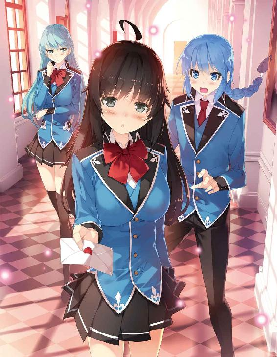
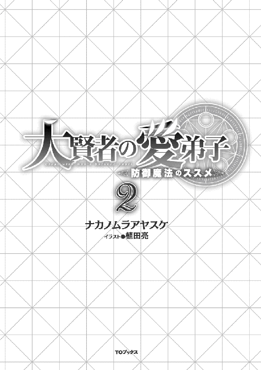
イラスト／植田亮
デザイン／木村デザイン・ラボ
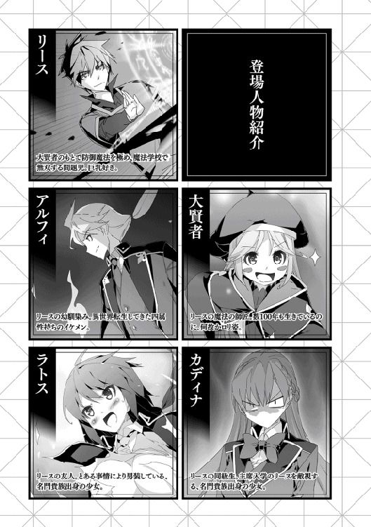
魔法の授業は実技だけではなく、教室内の講義もある。実践に勝る経験はないが、経験を得る前の予備段階として知識は必要になる。生半可な知識で魔法を扱い、大惨事になる場合は少なくないからだ。
「昨今における魔法使い同士の戦い方では、威力よりも魔法の速度が重要視される傾向がある。壁役となる前衛がいてくれるならともかく、顔を付き合わせて長ったらしい投影をするなんて馬鹿らしいからな」
魔法関連の授業を担当するのはゼスト。彼の魔法に対する深い知識はここ一ヶ月近くの授業でクラス全員に知れ渡っていた。皆が真剣な様子で授業内容に耳を傾けていた。
ゼストが黒板に要点を纏めながら説明文を記していく。
「相手が大軍ならまだしも、人間一人を倒すのに高威力の魔法を使うなんざ馬鹿のすることだ。人間ってのは当たり所が悪けりゃ小石一つでも軽く死ぬ。でもって、魔法使いにとっちゃぁ小石投げるよりも初級魔法を投影する方が遙かに楽だ」
俺だったら小石を全力投球する方が簡単だが、肉体を鍛えていない通常の魔法使いなら初級魔法の方が手軽なのだろう。
「ただ、戦闘時における魔法使いの衣装は、基本的に魔法による防護策が取り込まれてる。お前さんらが着ているジーニアスの制服にも簡単にだが魔法に対する耐性処理が施されてる」
初級魔法なら気休め程度に軽減されるらしい。それでも直撃を受ければ結構痛い。
「よって、初級魔法だけで敵の魔法使いを倒すのはかなり難しい。ま、痛いのには代わりがないから、相手の投影を妨害する手段としては効果的だ」
投影の難易度が上がれば時間と共に相応に繊細な制御が求められる。痛みが生じれば制御が乱れて強制的に中断させられる。制御を誤り投影が中断をさせられると魔法が意図せぬ形で発動し、最悪の場合は魔力が暴発する。当然、その暴発の至近距離にいる魔法使いも危機に晒される。
「そこで編み出されたのが『同時投影』だ」
簡単に内容を言い表せば、『異なる魔法を同時に投影する』技術を指す。
「よく使われる手段としては、初級魔法を発動しつつ、その傍らで中級魔法を投影する──ってな具合だな」
例を挙げるなら、俺が決闘したラトスが使っていた魔法を思い出すと分かりやすい。ラトスは初手に水連射を発動し、それと同時に水榴弾を投影していた。これがまさに同時投影。
「初級魔法で敵を牽制、あるいは敵の初級魔法を相殺しつつ、チャンスがあれば傍らで投影していた中級以上の魔法を放つ。これが魔法使い同士の戦いにおける定石だ」
牽制に使う魔法が初級魔法である必要性はない。即座に発動できる魔法であれば中級魔法でもいい──まぁ、その場合は色々と制限があるが。
「同時投影は現代の魔法戦では必須技術といっても過言じゃぁない。一発の浪漫火力に全てを賭ける戦法は俺も嫌いじゃぁないが、そいつを極めるよりかは同時投影を実用段階まで取得した方が楽だ」
一発屋は一発外すと色々な意味で終わってしまう。それよりかは臨機応変に立ち回れる同時投影を素直に取得した方が実用的なのは間違いない。
「ただ、同時投影は片手間で取得できる技術じゃぁない。右手で『円』を書きながら、左手で『三角』を書くような同時処理が必要になるからな」
ゼストの説明は非常に分かりやすいが、難易度はもっと高い。
異なる作業を同時に行うのは口で説明するよりも困難だ。一瞬で発動できる初級魔法と同時に中級魔法──というのならともかく、中級魔法の傍らに同等の別の魔法となると求められる脳の処理能力が飛躍的に増す。
「更に、同時投影で魔法を投影すると、単純に二つの魔法を発動するよりも魔力の消費量が割り増しになる。この割合は、単体で魔法を発動したときの魔力量が大きければ大きいほど飛躍的に増していく。でもって、人間が一度に扱える魔力は、内素魔力量に比例する」
中級魔法をちょうど二発、あるいは上級魔法を一発放てる魔法使いがいるとする。この魔法使いは中級魔法を一発ずつ、合計二発を発動できるが、同時投影で二つ同時に中級魔法を投影することは出来ない。これがもし計三発の中級魔法を放てる魔法使いなら、中級魔法二発の同時投影は可能である。
──一連の説明を板書したゼストが、白いチョークで己の書いた黒板の図をカツカツと叩く。
「この学校の生徒でこれほどにしょっぱい内素魔力しか持たない奴はいないだろう。けど、分かりやすく説明するとこんな感じだな」
──約一名、ここにいます。
俺の心の声はもちろん届くことなく、ゼストの話は続く。
「つまり、内素魔力の量で同時投影出来る魔法ってのは限られてくる。だからこそ、牽制代わりに使われるのは初級魔法であることが多い。中級魔法ならともかく上級魔法を二発同時に発動ってのは、実用的ではない。下手したら投影の段階で消費魔力が激しくて意識が吹っ飛ぶ」
......〝それ〟を出来る人物を、俺は二人ほど知っていたりする。口にしただけでは誰も信じてくれそうにないので、黙っておく。
「まぁ、処理能力が跳ね上がる代わりに、投影に必要な魔力を格段に減らす方法があったりするが......」
と、ここで授業終了を告げる鐘の音が響きわたった。
「今日の授業はここまでだな。同時投影には応用性が高く非常に便利だが、制限もある。こいつはテストに出すので確実に覚えておけ。テストだけじゃなくて、魔法使いとして非常に重要だからな」
微妙に後を引くような幕引きで、今日の魔法学は終了したのであった。
防御魔法は消費魔力の多さを除けば、扱い易さは随一である。
言い換えれば、防御魔法の真価は魔法使い自身の技量に大きく左右される。
防御魔法の基礎中の基礎である『防壁』ですら、その奥深さは並みではない。ただ魔力を固めて壁状にしてしまえば完成してしまうこの魔法だが、手を加えようとすればいくらでも改良の余地があるのだ。自由度の高い魔法であるが、自由度が高すぎて効果的な形を模索するのが大変だったりもする。
現在の主立った改良方法は『三層構造』と『ハニカム構造』。これを両立すると、単純に防壁を構築するよりも遙かに高い魔力効率と強度を得ることが出来る。
更に、拳に纏わせれば近接戦闘用の『手甲』。複数の防壁を己の周囲に張り巡らせる『広域結界』。様々な魔法に派生することも可能だ。
ただし、当然ながら通常の防壁よりも難易度が上がる。
「五本の指先に均一の大きさをした六角形を作る所から始めたな。こんな感じに」
俺は指を一本ずつ立てながら、それぞれに穴の空いた六角形の防壁を展開する。ついでに左手でも同じことをしてみる。
「......なんかキモい」
「おいこら、おまえが見せてくれって言ったんだろ」
「僕は君の防壁について聞いただけであって、そんな曲芸を見せてほしかった訳じゃない」
「だから、これくらいの芸当が出来ないと『ハニカム防壁』は作れねぇんだよ」
放課後、俺とラトスは『訓練場』を訪れていた。
学校内で魔法を全力で扱える数少ない場所の一つで、申請を教師に出せば利用が可能だ。
ただ、魔法の中には広い範囲に効果を及ぼす魔法もあるので安全の都合上、訓練を行う生徒同士が離れていなければならない。よって、一つの訓練場を一度に使用できる生徒の数には限りが出てきてしまう。
とは言うが、順番待ちを気にする必要はあまりない。
ジーニアス魔法学校の敷地はとにかくデカい。学生同士の戦い『決闘』の為に使用される決闘場の他にも、学生が魔法の練習のために使用が許可されている訓練場も更に複数ある。
定期的に行われる試験の期間中ならまだしも、平時ならどこかの訓練場になら必ず入れる。
定期試験が開始されるのは一ヶ月以上も先だ。俺たちが今いる訓練場も人気は少なく、俺たち以外の生徒がまばらにいる程度。
本当は俺一人で訓練場にくる予定だったのだが、偶然に教師に申請する場面でラトスが通りかかり、どうせならと一緒に魔法の訓練をすることになったのだ。
で、訓練場に来たら、早速ラトスが防御魔法について聞いてきたわけだ。
「ってか、これはぶっちゃけ初期段階だからな」
「......え？ これで初期段階？」
「今度は指先に作ったハニカムの周囲に六つのハニカムを作って、全部の指先で同じことをする」
言葉通りに実践すると、ラトスが眉間に手を当てて渋い顔になった。
「......ちょっと頭が痛くなってきたよ。よくそんなこと出来るね」
「おまえだって水連射を殆ど一瞬で投影できるだろ。それと同じで慣れだよ慣れ。で、こいつを意識せずに出来る段階になってくると──」
俺は両手を叩き合わせ、それから片手を正面に突き出す。
大量のハニカムが組み上がり、最後には薄い二枚の防壁を前後から重ね合わせれば、巨大な一枚の壁となる。本来は一瞬で完了する行程を、外から見て分かりやすいようにゆっくりと行った。
「ほい、ハニカム防壁の完成。参考になったか？」
「......参考になったけど、すぐに同じことは出来そうにないね」
「簡単に真似されたら俺が泣くっての」
今でこそ反射的に作れるこのハニカム防壁だが、ハニカム構造を防壁に組み込む際には相当な試行錯誤を繰り返した。
ハニカムの大きさを全て均一にしなければ、組み合わせたときに隙間が出来て強度が減るし安定性も失われる。均一化に成功しても今度はそれを短時間で投影するためには気の遠くなるような反復練習が必要だった。
何度も何度も練習していたらだんだんと頭の中が空っぽになっていき、空っぽの頭で何度も何度も行っていると、普段でも意識せずに出来るようになっていのだ。
結局は〝慣れ〟の問題である。
防壁を消してからラトスの方を見ると、ラトスは不思議そうな顔をしていた。
「まだ何か質問があるのか？」
「あ、いや......僕から聞いてあれだけど、随分とあっさり教えてくれたなって」
「今言ったとおり、教えてすぐに取得できるような技術じゃないからな」
「確かに難しい。けど、時間をかければ僕でもある程度形には出来ると思う。けど、こう言った知識や技術って秘匿するのが普通じゃない？」
普遍的に広まっている魔法ならともかく、個人が独自に開発した魔法というのは魔法使いにとっての大きな武器だ。解き明かされるまでは他の魔法使いに対しての優位性を得られる。安易にそれを手放した俺に、ラトスは疑問を抱いたのだ。
それに、どれだけ複雑そうに見えても扱い易さでは類を見ない防御魔法だ。センスのある奴だったら模倣は可能だ。ラトスとの決闘で、ハニカム構造の概念は決闘を観戦していた全生徒に届いている。人伝でそれ以上に広がっていると思っていいだろう。
「別に真似するなら、それはそれで構わないさ。真似する奴がいるなら、それは防御魔法が認められたってのと同じ意味だからな」
「あ......確かに」
ラトスがはっとした顔になる。
意味のない魔法を真似する者はいない。逆を言えば意味のある魔法ならば真似しようとする者は必ず出てくる。それに容易く手が伸びるのならばなおさらだ。
防御魔法に関する偏見を無くしたい俺としては、願ってもないことだ。
「ハニカム防壁は制御こそ面倒臭いが、構造そのものは非常に単純だ。でもって、単純な仕組みってのは頑丈に出来てる。仕組みがバレてもあんまり問題はない」
少し挑発的な笑みを向けてやると、ラトスがむっとした表情になった。
ラトスがあれこれとハニカム防壁に質問したのは、興味があったのは間違いないだろうが、それ以上に俺の使う防壁の詳細を知るためだ。
ラトスは俺に決闘で負けた日の夕方に、わざわざリベンジを宣言しに来るような奴だからな。一緒に訓練をしようなどと言い出したのは、結局のところは俺の攻略法の足掛かりのためだ。
「......全部分かっていたのに、どうして誘いに乗ったのさ？」
「言っただろ。仕組みが分かったからと言ってそう簡単に攻略できるような柔っこい魔法じゃないってさ」
仮に、今の説明でラトスが俺の気づかないような弱点を見つけたとしても、それはそれで問題なかった。
「防御魔法の扱い易さは随一だからな。更に改良を重ねれば全く問題ない」
「前向きだね......」
俺の答えに、ラトスは感心とも呆れともとれる顔になった。
前向き──とは少し違うな。
俺にとって、防御魔法は最大の武器であると同時に、最高の玩具だ。こちらの意図次第でいくらでも姿を変えるこの魔法を弄くるのが、ただひたすらに楽しいのだ。
「好きこそものの上手なれ──ってね。......ん？」
何気なく訓練場を見渡すと、一つの目線とぶつかり合った。
少し離れた位置に、こちらを眺めている女子生徒を見つけたのである。
「おおぅ、これはまた何とも......」
俺は感嘆の声を漏らした。
遠目からでも艶やかな長い黒髪の女子生徒。何よりも目を引くのは、こちらの理性を殴りつけてくるような衝撃を与えるたわわな胸元。あれはまさしく大鉄球おっぱいと賞するに相応しい乳だ。
「......水弾」
「へ？ ──ぎゃぁぁぁぁッッ!?」
突如として俺を水の弾丸が襲った。直撃を食らった俺は悲鳴を上げながら訓練場の床を転がる。水属性の魔法なので制服がびしょ濡れになってしまった。
どうにか立ち上がった俺は、狼藉者に対して抗議する。
「こ、この青髪が......いきなりなにしやがる！」
「どうせ訓練場に来たんだし、少しは魔法の訓練でもしようと思ってね」
「だからといって前置きなしに魔法ぶっ込む奴がいるか!?」
「君なら不意打ちでも、ご自慢の防壁で防いでくれると思ってたんだけどね。さすがにこの距離じゃ防ぐ間もなかったか」
こちらの言い分を冷たく退けるラトス。......どうしてか、ものすごく不機嫌なご様子。
俺が一体何をしたよ。
気が付くと、こちらを見ていた大鉄球おっぱいの持ち主は訓練場の中から姿を消していた。俺が見ていないうちに帰ったのだろうか。
残念。ちょっとお近づきになりたかったのに。
「ったく、訓練するなら付き合うから不意打ちはやめてくれ。初級魔法とはいえ、当たればかなり痛いんだから」
「............分かった」
納得し切れていない様子ではあったが、頷くラトス。
それから俺たちは、雑談を交えながらここで魔法の訓練を行った。成果があったかはともかく、それなりに有意義な時間を過ごせたのだった。
訓練場の使用時間が終了すると、俺たちは揃って男子寮への帰路に就いた。空はもう間もなくオレンジ色に染まる頃合いだ。
「むぅぅぅ、結局一個も作れなかった」
「最初はそんなもんだ。慣れれば本読みながらでも出来るようになる」
訓練の途中、ラトスがハニカム防壁に挑戦したいと言い出したので色々と教えてみたのだが、結局一個も六角形を作れずに終わってしまった。
「というか、初っぱなから極小六角形を作ろうとするから駄目なんだ。まずは手のひらサイズの六角形を作るところから始めろや」
「そうするよ。......でも、これって思っていた以上に繊細な魔力制御が必要になってくるね。少し舐めてたよ」
「俺からすれば、おまえに限らず他の属性を使ってる奴らの制御が大雑把すぎるだけだ」
属性魔法の魔法陣は、教わる時点ですでに標準化がされている。誰が発動しても同じ程度の威力になったり、多少の曖昧さは自動的に調整する仕組みが組み込まれているのだ。このため、（限度はあるが）大雑把に汲み上げても割と発動してしまったりするのだ。
逆に、防御魔法は魔法一つ一つは単純だが、その単純な構造を組み合わせていくことで独自性のある新たな魔法を投影できる。標準化がされていないので出力も制御も自在なのだが、同時に相応の繊細な制御が求められてくるのだ。
「ハニカム防壁までは届かないけど、これは結構な訓練になるね。教えてくれてありがとう」
「防御魔法の普及は俺の大きな目的の一つだからな。この程度はお安い御用だ」
出会った当初こそ防御魔法を馬鹿にしていたこいつも、今では防御魔法への偏見を無くしていた。今後も少しずつでいいので、こうして防御魔法の有用性を広められたら良いな。
そんなことを考えつつ、雑談を交わしながら帰路を辿っていると、不意に前方から歩いてくる人の姿があった。
俺の意識が前を向いていることに気が付いたラトスも、つられて正面に目を向けた。どうやら女子生徒のようだ。
彼女は俺たちの正面で足を止めた。どうやら俺かラトスが目的か。こちらも彼女と同じく足を止めた。
「あ、さっきの」
女子生徒は、訓練場で俺たちのことを見ていた大鉄球おっぱいの女子だった。
我がクラスが誇るカディナの巨大弩おっぱいや、ラトスの隠された破城槌おっぱいに劣らぬ、素晴らしいものをお持ちで。最近は胸のおっきな子に何かと縁があってうれしい限──
「......おい、一体どこを見ている」
──隣から冷ややかな目が向けられるが、こればかりは男の本能なので仕方がない。
ただ、見つめすぎるのは失礼なので、惜しむ気持ちを圧殺して視線を女子生徒の顔へと移した。
長い黒髪の女の子。可愛らしい顔立ちなのは間違いないが、言いようのない不可思議な雰囲気を纏っている。
「あなたが、リース・ローヴィスで間違いない？」
どうやら、ラトスではなく俺に用があったらしい。
「間違いないけど......どちら様？」
「ミュリエル・ウッドロウ。あなたと同じ一年生」
彼女──ミュリエルは無表情のまま名乗った。
能面──ではないが、いまいち感情が読み取れない顔だ。あえて表現するなら、不思議ちゃん系？
「そのウッドロウさんちのミュリエルちゃんが俺に何の用だ？」
「......実は、ついさっきまで訓練場であなたたちのことを見ていた」
彼女はやはり表情を変えないまま口を開いた。
「あんなに繊細な魔力制御を出来る人は、一年生の中にはいない。だから、驚いていた」
「『これ』のことか？」
俺は右手の指先五本の先端に、魔力で六角形を形作った。それを見たミュリエルが、小さく息を呑んだ。
「間近で見ると、やはり凄い」
「お、そうか。だったらこいつはどうだ」
指先の六角形の周囲に、更に六つの六角形を投影してやる。
ミュリエルは「おぉぉ......」と声を漏らしながら拍手した。相変わらず表情は変わらないが。
「素晴らしく変態的に卓越した技巧」
「......褒めてんのかそれ」
「最大級の賞賛」
あんまりうれしくない最大級だな。
「............それで結局、君は彼に何の用があるんだい？」
一向に話が始まらないことに痺れを切らしたラトスが口を挟む。
そんなラトスの言葉に、ミュリエルは少し間をおき、首を傾げた。
「............いつからいたの？」
「最初からいたよ!!」
ラトスの叫びに、（表情はやはり変わらないが）口元に手を当てて「まさかの新事実発覚!?」みたいな反応をするミュリエル。器用だな。
「まさか、空間転移の魔法で──」
「普通に彼の隣にいたからね僕は!?」
「......全く気が付かなかった」
ミュリエルが最後に付け足したよけいな一言に、ビキッとラトスの眉間がひきつった。ラトスは水属性使いのくせに熱くなりやすいな。これ以上熱くなるとラトスの水弾に彼女が襲われる。
......あ、でも水浸しになれば、制服が躯に張り付いて大鉄球を鮮明に拝めるな。
なんてことを頭の真ん中辺りで考えつつ、俺は話を進めた。
会話の繋がりで、ミュリエルの目的は何となく察していた。
「お前さんも、俺の防御魔法に興味があるのかい？」
「然り」
同世代の女子の口から「然り」って、違和感半端ないな。
「これまで行われたあなたの決闘は全部見ていた。役立たずとされていた防御魔法を、あれほど巧みに使いこなす技量には驚いた」
「そうだろそうだろ」
俺は腕を組んでウンウンと頷く。入学してから面と向かって防御魔法を褒められたのは初めてだ。認められるというのは気持ちがいいな。
「けど、何度見ても分からない点がいくつかあった」
ミュリエルが俺の眼前にまで歩を進めた。
「......つまりは、その『分からない点』を直接聞きにきたってわけか」
「あなたの防御魔法はとても興味深い。だからこそ詳しく知りたい」
感情の薄い瞳が、まっすぐに俺を見据えている。
「でも、今日会ったばかりの私に教えてくれるとは思っていない」
だから──と彼女は一呼吸を入れて。
「私と付き合ってほしい」
................................................。
「......それは、明日の放課後辺りに一緒に出かけようってお誘い？」
「違う。男女的な付き合いという意味」
そうかぁ、男女的な意味でかぁ。
......人生初の──しかも女子からの告白が、こんな情緒もヘったくれもない感じになるとは思いもしなかったよ。
悩む俺を余所に、ミュリエルは俺の両肩に手を置く。
「──ってちょっと何やってんのおまえさん！」
なんか顔が接近してるんですけど!?
「恋人同士になったら、やることは一つ」
さも当然のように答えるミュリエル。
え、ちょっとこれって俺の初チッス（死語）が奪われる流れ!?
大胆の一言で済まされないよ!?
闘っている相手ならともかく、そうでない初対面の女子を強引に振り払うのも躊躇われてしまい、頭も混乱で一杯だ。
その間にもミュリエルの顔が......彼女の形よい唇が、俺の唇に近づいていき──。
ガシッ！
「でぇぇぇいっっっ!!」
ラトスがミュリエルの背後からその後頭部を掴むと、ペイッと放り投げた。
ミュリエルは意外な体捌きで上手に受け身を取り、地面に手を突きながらラトスを見上げる。無表情に僅かだが不機嫌が混ざっていた。
「......いきなり何をする」
「それはこっちの台詞だ！」
俺の台詞でもある。
ちょびっとだけ残念な気もしたが、ラトスのファインプレイに感謝した。
「一体何をするつもりだったんだ君は!?」
「見ての通り、彼と接吻をしようと」
「せ、接吻って......」
ラトスの顔が一気に赤くなった。外見は男子でも、中身は純情巨乳乙女だからな。話の勢いに付いていけないのは俺も同じだ。
「......そもそも、どうしていきなり恋人だなんて言い出したんだ？」
「合理的に判断した結果」
「今の行為に合理性の欠片も見出せないんだけどね、僕には」
俺もだ。
ミュリエルは制服に付いた土を手ではたき落としながら立ち上がる。
「おそらく、ハニカム構造は広まっても問題無いから広めた。他の秘密は、他人に容易く教えるはずがない」
ハニカム防壁の仕組みは広まりつつあるが、もちろん種を明かしていない手札もまだ結構ある。いずれは情報を解禁するにしても、まだ伏せておきたいのが本音だ。ミュリエルの予想は正しい。
「でも親密な仲の相手には教えてくれるかも知れない。そして、親密な仲の最たるものが──」
「──恋人って関係か？」
「是」
「いや『是』って......」
一文字で肯定するなよ。
「私は彼に告白した。そして、恋人同士としての証を立てるには接吻が一番だと思った」
順序が逆だ。合理的を通り越して迷走している。
「それに事前に調べた情報では、リース・ローヴィスは胸の大きな子が好みだと聞いた。この通り、容姿には少し自信がある」
ぐっと、ミュリエルは大きく胸を張った。大鉄球な乳がこれでもかと自己主張している。顔も可愛らしいし、艶やかな髪も魅力的だ。
「くっ......確かに。あの胸は彼の好みそのものだ」
ラトスが戦慄の声を発しながら己の胸に手を添えた。
......おまえさんの収納された破城槌も大鉄球と同じくらい凄いから──と言ってやりたい。そしてどうしておまえが戦慄しているのかも意味不明だ。
「......むぅ、胸を強調しているのに、いまいち反応が薄い」
不満げな呟きをミュリエルが漏らした。
確かに素晴らしいお胸さま。
だが、恥じらいどころか感情すら乏しい無表情のせいで台無しになってる。色気が全く感じられない。
──残念美人とはこのことを指すのか？
「もしかして、胸が大きな子が好きという情報は嘘？」
「それは事実だ」
「即答しちゃうの!?」
ミュリエルの疑問に俺が答え、ラトスがつっこんだ。
俺がオッパイ大好き人間なのは間違いない。
だからといって、恋愛関係を結べるかはまた別問題。
「容姿は間違いなく好みだけど、さすがに会ってすぐの人間と恋人ってのは違うだろ、いろいろと」
文字通りおおきな要素なのは否定できないが、全てではない。
「悪いけど、期待に添えそうにない」
「......やはり、先に既成事実を作っておくべきだったか」
無表情で恐ろしい台詞を呟くね、この人。
「でも、あなたのその反応は想定内。余計な邪魔は予想外だったけれど、そもそもたかが接吻一つで恋人関係が結べるとは思っていない」
「いやいや、女の子が接吻を〝たかが〟ですませちゃいかんだろ」
おかしい。俺がつっこみ役になってる。普段は俺がつっこまれる立場なのに。
新鮮だが嬉しくない。
「ゆえに、まずはお友達から始めたいと思う」
こちらのつっこみを全く気にせず、ミュリエルがグッと気合いを入れるように握り拳を作った──無表情で。やる気が全然感じられない。
「恋人関係になるには相互の理解が必要不可欠。会ったばかりの私とあなたではそれが致命的に不足していた。だから友達から始めて、徐々に恋人として必要な友好関係を築き上げていきたい所存である」
「諦めるって選択肢は？」
「無い」
キッパリと断言されてしまった。
「と、いうわけで今日の所は失礼する。また明日に」
ミュリエルは俺の返事も待たずに「では」と手を振ると小走りに去っていった。胸部の特盛り装甲を盛大に揺らしている割には、軽快な足取りだった。
ミュリエルがいなくなり、残された俺たちは脱力感に苛まれたのであった。
「なんだったんだろうね、彼女」
「俺が知りたいわ」
こうして俺たちとミュリエルの出会いは一旦幕を閉じた。
だが、それが再び幕を開けるのは、彼女の宣言通り翌日からだった。
けれども、精神的に疲れ果てた俺たちは、そのことに気づかなかったのである。
魔法使いは一日にしてならず。
──なんて言葉があるかどうかは不明だが、日々の積み重ねが強さの秘訣なのは間違いない。
ゆえに、俺は学校の授業が始まる前に朝の鍛錬を毎日欠かさず行っている。一通りの鍛錬内容をこなすには日が昇る前に起床しなければならない。村にいたときよりも早い時間の起床だが、その分早めに寝ているので問題ない。
普段通りに身支度を整えてから、まずは学校の外周で走り込みだ。
──しばらくして走り込みを終えて、広場へ向かうとすでに先客が居た。
アルフィ......ではない。
毎朝の鍛錬をする広場の中央部に、黒髪の女子生徒──ミュリエルが横たわっていた。
「──ｚｚｚｚ」
......気持ちよく寝ている。
気候的には暖かくなってきているが、まだ朝は少し寒い。掛け布団もなく広場の真ん中で寝たら風邪を引きそうだ。
どうしてこんな場所で寝ているのか、という疑問はさておき。
俺は熟睡しているミュリエルの側にしゃがみ込み、肩を掴んで揺すってやる。
「おい、起きろ。こんなところで寝てると風邪引くぞ」
「──あと十二時間」
ベタな寝言が返ってきた。十二時間たったらもう寝る時間だぞ。
──ポヨンポヨン。
なかなかに目を覚まさないミュリエルを揺さぶっていると、弾むような音が聞こえてきた。
いや、実際に音が鼓膜を揺さぶったわけではない。脳裏に直接響きわたるような感覚だ。
「────ッッ!?」
重大な事実に気が付いた俺は、慄きながら再度ミュリエルの躯を揺すった。
すると。
──（ユサリ）ポヨン。
..................。
──（ユサリユサリ）ポヨンポヨン。
..................。
──（ユサユサユサリ）ポヨポヨポヨン。
..................。
「こ......これは......まさかっ!?」
なんということだろう。
俺がミュリエルの躯を揺さぶる度に、彼女の大鉄球オッパイが、大鉄球とは思えないような極上の柔らかさを発揮し、上下左右たわわに揺れている。
そう、揺れているのである!!（大事なことなので二回）
本来ならば音として聞き取れないはずの『乳揺れ』を、俺の中にあるオッパイセンサーが『乳揺れ音』として変換していたのだ。
俺は自らの躯に起こった神秘と、目の前にある女体の神秘に感謝した。
そしてハタと気が付く。
これだけ揺らしていても、ミュリエルが変わらず規則正しい寝息をたてている。
......これっておっぱい揉めるんじゃね？
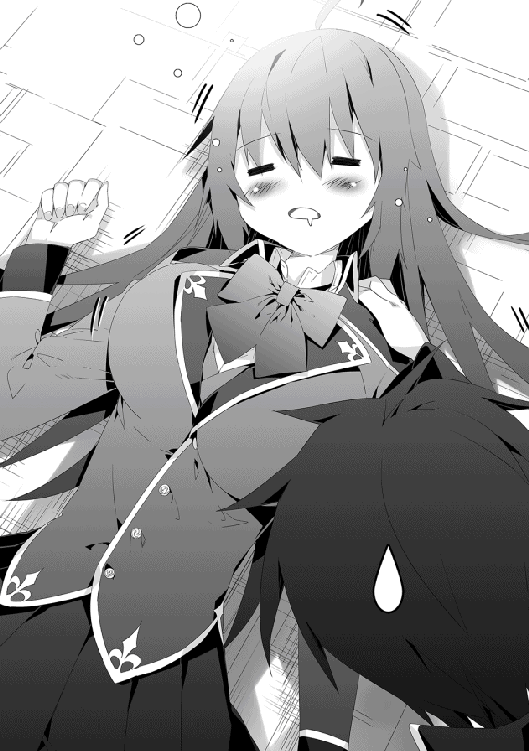
「いやいや、それはさすがに不味いよ、うん」
オッパイ紳士はオッパイに対して真摯でなければならない。
ゆえに、極上のオッパイを持つ者に最大の敬意を払い、決してその意思をないがしろにしてはならない。たとえ深く寝入って無防備を晒している巨乳を目の前にしたとしても、理性を持って対応しなければならない。
だが──。
「くっ、右手が......俺の右手がっ!?」
俺の本能が、ミュリエルの胸を蹂躙しようと暴れ回る。
俺は理性で本能の手首を掴むとその寸前で暴走を阻止した。けれども、本能は理性を振り切らんと必死の抵抗を見せる。
──俺の脳内会話──
理性「やめろ本能！ 無断乳揉みはオッパイ紳士にあるまじき愚行だぞ！」
本能「止めるな理性！ そこに乳があるなら何の躊躇いがある!?」
理性「馬鹿者！ よく相手を見ろ！ そいつは初対面の相手に既成事実を迫ろうとした曲者だぞ！」
本能「五月蠅い！ 曲者だろうが直者だろうがおっぱいはおっぱいだ！ 乳に貴賤も罪もない！」
理性「痴れ者が！ 相手がたとえ曲者でなかったとしても、無抵抗の乳を揉むなど百の罪にも勝る蛮行！ それを自覚できぬ者に乳を揉む資格無し！」
本能「ぬぉぉぉぉぉ!? おのれ理性ぇぇぇぇ！」
──理性が放った正論という名の槍が、本能に突き刺さる（注意：あくまでイメージです）。
理性「やったか!?」
本能「──いいだろう、今日のところは引いてやる。だが覚えておけ！ 私は常に虎視眈々と乳を狙っているということを！ 私は常に理性と共にあるのだと！ 我々は切っても切り離せぬ表裏一体の存在であると！」
理性「分かっているとも。我々は相容れぬ者同士であると同時に、同じくオッパイへの愛を捧げるもの。いつの日か、本能とも分かりあえる日が来ると信じているぞ」
──脳内会話終了──
「ふぅ、危なかったぜ」
どうやら、今回の戦いは理性が勝利したようだ。暴れ回っていた本能が落ち着きを取り戻すと、俺は額に滲んでいた汗を拭った。
改めて、俺はミュリエルの躯を揺さぶろうと手を伸ばすと、不意に彼女と目が合った。
............ん？
いつの間にかミュリエルの目がぱっちりと開いており、こちらを見上げていた。
「......いつから起きてた？」
「今」
無駄を極限まで省いたような受け答えをして、ミュリエルは躯を起こした。それから己の胸を軽く触ると。
「揉まれた形跡が......ないだと──っ!?」
「なんでちょっと戦慄した風に言うわけ？」
「無防備な姿を晒せば、オッパイ好きのあなたなら飛びつくと思ってたのに。私としたことが計算を間違えた」
危ない。計算通りの行動をする一歩手前だったぞ。
「あわよくばこれをネタに脅して恋人関係を結ぶつもりだったのに──あ、これは言っちゃ駄目だった」
策士なのかアホの子なのか、いまいち迷うなこの巨乳。
「で、乳揉みトラップの為にここで待ち伏せてたのか？」
策にハマりそうだった事実はもちろん隠して、俺はミュリエルに問いかけた。
「毎朝あなたがここで鍛錬をしているのは知っていた。だからその様子を見せてもらおうとここで待ってたら──」
「待ってたら？」
「──眠気に耐えられなかった」
朝が早い職人等を除けばまだ誰もが寝静まっている時間だからな。俺は慣れているからいいが、他の人間にとっては起きるには早すぎるか。
「でも、そこで私は閃いた。ここで無防備に寝姿を晒していれば、後からあなたは私の乳を揉みしだくのではないかと。なので、私は押し寄せる睡魔に身を任せていた」
「俺じゃなくて、他の野郎が通りかかってたらどうすんだよ。下手したらお持ち帰りされてるぞ」
自信ありげに策を語ったミュリエルに、俺は冷静に言った。
すると、彼女はピタリと動きを止め、口からぽつりと。
「......その発想はなかった」
やっぱり、ちょっとアホの子だわ。
「それで、結局はどうすんだ？ 俺はこれから朝練を始めるけど」
「もちろん、見学させてもらう」
そのためにわざわざ日の出前の早朝に起きたんだろうしな。
......さっきまで夢の世界に居たようだけど。
危ないのでミュリエルには少し離れた位置に移動してもらう。
「さぁ、やりますか」
大きくはない、それでいて躯の『芯』から声を発するイメージ。弛緩していた意識を切り替え、集中力を高めていく。
最初は単純な筋力トレーニングだが、どこに一番負担が掛かっているのか具体的にどこを鍛えたいのかを明確に意識することで、質の良い効果が発揮される。
「すこし聞いていい？」
「なんだっ！」
拳を振るっていると、ミュリエルが傍らから声をかけてきた、俺は動きを止めずに言葉を返す。
「あなたの動きは非常に理に適っている。素人が独学で鍛え上げたとは思えない練度」
「そりゃっ、教えてくれる人がっ、いたからな！」
大賢者の婆さんはあんなちみっこい姿をしていながら、格闘術の達人だ。小柄な体躯でリーチは無いが、それを補って余りある膂力と技量をかね揃えていた。
最近は良い勝負ができるようになってきたが、それでも純粋な格闘戦での勝率は良くて三割程度だ。
「その教えてくれた人も、魔法使い？」
「当然だろっ」
「普通、魔法使いはそこまで肉体に重きをおかない」
「むしろ、婆さん的にはっ、世間の魔法使いが肉体を蔑ろにしすぎだってよ！」
いかに優秀で強力な魔法を会得しようとも、それを扱う魔法使い自身が未熟では宝の持ち腐れ。そして、豊富な魔法も卓越した技量も、それを支える体力が無ければ意味がない。
魔法を操る技量と扱う心得、そしてそれらを支える躯。
心技体が揃ってこその魔法使い──婆さんが常に口にしていた真理だ。
──それから俺はミュリエルの質問に答えながら、朝練を続けたのである。
朝練を終えた俺は一度部屋に戻る。なんと、この学校の寮には全部屋に『シャワー』なるものが魔法具として完備されている。これはお湯を生み出す効果があり、おかげでいつでも好きなときに汗を流すことができるのだ。
この魔法具がなければ、町にある大衆浴場まで行かなければならなかっただろう。さすがは高い入学金と学費を要求するだけある。
話は逸れたが、部屋のシャワーで汗を洗い流し、改めて制服に腕を通して寮の外に出ると、やはりミュリエルが出口で待っていた。
さすがに今の時間帯だと食堂を利用しようと起きてくる生徒も多い。男子寮の前に一人で立つ女子の姿は非常に注目を集めていた。当の本人は相変わらず考えの読めない無表情であり、集まる注目を気に止める様子は無かった。
「......それで、いつもは見ない顔が一緒にいる訳か？」
「そんなところだ」
食堂で合流したアルフィが、席に座ってから発した言葉。視線の先には当然のように俺の隣に同席するミュリエル。朝食のメニューにあるパンを「はむはむ」と食べる姿は小動物を連想させた。......躯のごく一部は特大だが。
アルフィに、昨夜から朝練までミュリエルが関わった一部始終を伝えた。それを聞いたアルフィは呆れた顔になる。
「類は友を呼ぶと言うが、まさにその体現者だよな」
「その中におまえも間違いなく含まれてるからな」
「よし、表に出ろ」
本当のことを言っただけなのに、アルフィが半ギレした。
今にも四属性魔法をぶっ放しそうな親友をどうにか宥めつつ、俺たちも朝食を食べ始めた。
「でも意外だな。普段から彼女ほしい彼女ほしいと言っているから、彼女──ミュリエルの申し出はありがたかったんじゃないのか？ 何で断ったんだよ」
「打算ありありの恋愛はさすがにちょっと......」
「──ちっ、このヘタレが」
「よし、その喧嘩買った」
今まさに戦いの幕が開ける！
と、そこで制止する声が割り込む。
「......朝の食堂で物騒なことは止めなよ」
「「実際に水属性魔法をぶっ放したラトスに言われたくない」」
「君たちさっきまで喧嘩してなかったっけ!?」
朝食の載ったトレーを手にしたラトスが叫んだ。
ラトスはトレーをテーブルの上に置いてから、俺の隣に座るミュリエルを見た。
「......昨日のアレは冗談ではなかったみたいだね」
「俺が毎日朝練する広場に、俺が来る前に来てたからな。しかも寝てたし」
「え、広場で寝てたの？」
呆れ果てるラトス。気持ちはよく分かる。
「ん？......ということは、ウッドロウが寝ていたところにローヴィスが居合わせたんだよね」
おい、そこでなぜ俺を睨むよラトス。
やましいことなど......無い......はず......だよね？
「......まさか、寝入っている彼女に変なことしてないだろうね」
「はっはっは、まさか俺がそんな紳士にあるまじき暴挙を犯すはずが無い。なぁミュリエル」
縋るように隣の席に顔を向けると、彼女はちょうど手にしていたパンを食べ終えたところだった。話を聞いていなかったのか、口の端にパン屑をくっつけたままコテンと首をかしげた。くそっ、ちょっと可愛いじゃないの。
──ではなくて！
「ねぇウッドロウ。ローヴィスに変なことをされなかった？ もし何かされたら正直に言っていいよ。......ライトハートがお仕置きするから」
「俺がかっ!?」
ミュリエルは己の胸をポヨポヨと揺すってからぽつりと。
「............むしろ、手を出して欲しかった」
「女の子なんだからもうちょっと自分を大事にしようよ！ というか、自分で言ってる意味分かってる!?」
「雄しべと雌しべが──」
「段階すっ飛ばしすぎぃぃぃぃっっ!!」
ラトスが顔を真っ赤にしながらの絶叫が食堂の中に響き渡った。
絶叫が引き金ではなかったが、ふと気になったことをミュリエルに聞いてみた。
「ところでミュリエル。アルフィには興味ないのか？」
「人を『こっち』呼ばわりすんな」
四属性のアルフィは世界的にも珍しい存在だ。興味の対象としてはこの上ない。
だが、ミュリエルはまたもコテンと首を傾げて。
「......ところで、彼は誰？」
「今の今まで知らずに会話してたんかい！」
ラトスの代わりに今度は俺が荒ぶるツッコミを入れてしまった。
「アルフィだよ！ 今話題の四属性持ちのイケメン!! 爆発しろ！」
「──っ、彼が!?」
「本当に今気がついたのかよ!!」
この反応昨日も見たよ。ラトスの存在にようやく気がついたときと全く同じだ。
「この無駄に迸るイケメンオーラが至近距離にいるのによく今までスルーできたな！ 爆発すればいいのに！」
「どさくさに紛れて俺をディスるのは止めろ」
最後の呟きはアルフィだ。もちろん無視。
「......確かに四属性は珍しい。考察の対象ではある。ただ、今はリース・ローヴィスへに対する興味の方が強い」
「イケメンであることに関しては？」
「──？ 確かに容姿は秀でていると思うけど、さほど興味を抱く要素ではない」
「だってよ。残念だったなイケメ（ドガッ）ぶへぇあっ!?」
アルフィの右ストレートが頬にめり込んだ。
「そのドヤ顔にイラッときた。反省はしない」
「ちょ、いきなりグーパンは止めてくんない？」
「いきなりじゃないとおまえは防壁張るだろ」
俺に防壁を使う暇無く拳を届かせるのはアルフィぐらいのものだ。さすがは幼馴染みで親友だ。
「最初に会ったときもそうだったけれど、一つのことに集中するとほかに全く興味を持たなくなるよね、彼女」
昨日と全く同じ状況にラトスが言葉を漏らした。するとミュリエルはラトスの方を向き。
「ところであなたはいつ来たの？」
「普通に会話成立したよね、さっき!!」
「────はっ!?」
「なにその『無意識のうちに会話してた自分に驚き』みたいな顔は！」
このやりとりはミュリエルの持ちネタなのだろうか。
「つ、疲れる。まるでローヴィスが二人に増えたみたいだ......」
「おい、俺が二人に増えたらここまでの騒ぎじゃ済まねぇぞ」
「自分で言っちゃうんだ!?」
どうでもいいが、ずっと叫んでいるラトスの喉は大丈夫なのだろうか。
それからというもの、ミュリエルは事あるごとに俺の元を訪れた。授業ごとの準備時間にも昼休みにも、放課後にもだ。
ただ、授業の合間ですることといえば教室の入り口からじっと俺を眺めるだけだったり、昼休みは俺の隣に座って飯を食べ、時折こちらをチラ見する程度。
本人曰く「接する時間が長いほど恋愛感情は芽生えやすくなる」というのだが、あのやりとりで恋愛感情が本当に芽生えるかは疑問だ。
言動はともかく、行動は思いの外常識の範囲に収まっていた。時折露骨なアプローチをして一部から荒ぶるツッコミが炸裂したりするが、それを除けば新たな友人ができたような感覚だ。
ミュリエルの行動に一番反応しているラトスだったが、悪感情は抱いていないらしい。なんだかんだで憎めないといった様子だな。ただ、ミュリエルが俺にアプローチを仕掛ける度にもの凄く不機嫌になるのは止めて欲しい。
ミュリエルはとにかく美人だ。大鉄球おっぱいもさることながら、何を考えているか全く不明な表情は見方を変えれば神秘的な印象を周囲に与えている。
そんな美少女が毎日訪ねてくるとなれば話題にならない方がおかしい。目的が俺であればなおさらだ。
これが、またも小さな騒動を起こす切っ掛けとなるのは、ミュリエルと知り合って数日後のことであった。
◆◆◆ カディナ ◆◆◆
ジーニアス魔法学校に通う生徒たちは、いくら将来有望な魔法使いの卵であったとしてもまだまだ思春期真っ只中。若者らしく思う存分に羽を伸ばしたくなることもある。
放課後に訓練場に赴き、魔法の訓練に明け暮れる生徒もいれば、街に繰り出して青春を謳歌する者も多くいる。
その日、カディナ・アルファイアも町を訪れた生徒の一人だ。だが、その様子はとても青春を謳歌しているようには見えなかった。
彼女は建物の陰からこっそりと表通りを覗いていた。より正確に言い表すと、その道を歩いている一行を注視している。
リース・ローヴィスを筆頭に、その周囲にはアルフィ・ライトハート、ラトス・ガノアルク。そして、ここ最近ではその中に加わったミュリエル・ウッドロウという謎の女（ジーニアスの生徒）。
リースたちを建物の陰から覗くカディナは、見ようによっては──どころか、どう見ても不審者一直線。下手しなくても通報されるレベルに怪しかった。
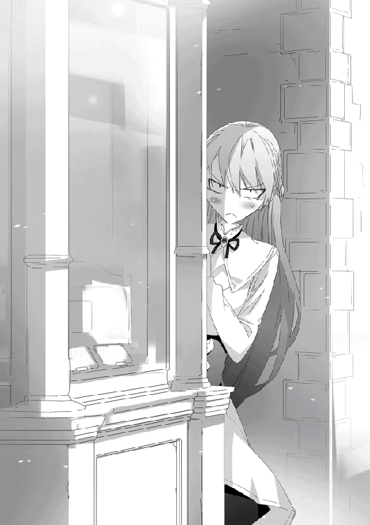
だが、彼女は己の周囲に存在している風を操作し、その存在感を極薄にしていた。実はもの凄く高度な技術なのだが、それをもの凄く無駄な行為に使用しているのに本人は気づいていない。
「何なんですか、あのぽっと出の女は......っ」
建物の角に指を添えながら、カディナは苛立ちを小さく吐き出す。
いつものように、風の魔法を使い、リースたちの音声を己の耳元にまで届かせる。
「俺は思うわけよ。男が甘いもの大好きでもいいじゃん。かっこ悪いとかダサいって下らない理由で甘いものが食えないのって、人生の大きな損失だと」
「少しは落ち着け」
「糖分はなぁ、遊びじゃねぇんだよ!!」
「おまえの甘味に対する情熱は分かったから、正気に戻ってくれ......」
興奮するリースに、アルフィが溜息する。
「でも、よく予約が取れたね。あの店は僕も少し気になってはいたけど、人気がありすぎて入店に制限が掛かってて諦めてたんだ」
ラトスの言うとおり、彼らは町で最近話題のケーキ屋に行く予定らしい。リースの取った予約が他に三人まで入店ΟＫということで、どうせならという形でアルフィ達を誘ったのだ。
「俺としては、ミュリエルが甘味に興味を示したのが驚きだったな」
アルフィがてこてこと付いてくるミュリエルに目を向けた。彼女は拳をぐっと握りしめ、珍しく感情のこもった目で言った。
「甘味は正義」
「......俺はこの瞬間、今までで一番おまえとわかり合えた気がする」
「ん、私も」
がっしりと握手を交わすリースとミュリエル。恋愛感情はともかく、友情は芽生えたようだ。
その光景を見ていたカディナは──。
「何を楽しそうに握手を交わしているのですか、リース・ローヴィス......っ!!」
ビキリと、彼女が手を添えていた建物の壁に亀裂が生じ、建築材がぼろぼろとこぼれ落ちた。
「私という『宿敵』がいながら、甘味に現を抜かし、あまつさえ女の子と手を繋ぐなど、恥を知りなさい......！」
勝手に宿敵認定されているリース。
カディナにとって、倒すべき相手が惰弱である事実が許せないのだ。
──本人にしてみればはた迷惑な話である。
もちろんそんな評価を知るよしも無く、リースたちはお目当ての店へと向かう。
「おっと、このままでは見失ってしまいます」
己が纏っていた風の魔法を解除すると、カディナは何気なく表通りに出て歩く。気配が元に戻り、周囲の者にとってはカディナが突然現れたかのように感じられた。
唐突に美少女が現れ注目を集めるも、カディナは気にするそぶりを見せない。幼い頃より目立つ容姿をしている彼女にとって、周りの注目を集めるのは日常的であった。
そしてある程度接近し、気づかれるか否かの微妙な距離に到達すると再度風の魔法で気配を消し、物陰に隠れる。この繰り返しだ。
......やっていることは完全にストーカー行為だが、やはり本人は全く気が付いていなかった。
カディナ当人にとっては、リースやアルフィの魔法に関する情報を集める大義名分（？）がある。朝は起きられなくて無理だが、彼が登校してから放課後までの行動を陰から観察し、一つでも多くの情報を得ようとしていた。
当然、その（ストーカー的）観察の一環で、ミュリエルがリースに近づいた目的も知っている。由緒正しきアルファイア家の自分はこうして秘密裏に調査をしているのに、なんと不遜な行為であろうか。
負けてなるものか、とカディナはミュリエルが以降、より真剣にリースの観察行為を続けていた。
──真剣に空回っている感が否めないが、悲しいことにそれを指摘してくれる人物が彼女の側に居なかった。
カディナのボッチ疑惑が浮上している間に、リースたちは目的のケーキ屋に到着した。
ラトスの言っていたとおりに大層な人気を博しているようで、店の前には長蛇の列。ほぼ全てが女性であり。店のデザインも女性向けになっている。『男子禁制』のような空気が立ちこめていた。
「......な、なぁリース。本当にこの店に入るのか？ 俺にはちょっと難易度が──」
──チリンチリン。
「こんちゃーっす。予約してたリースでーす」
女性率の高さに気後れしたアルフィだったが、リースは躊躇無く『予約客専用』と描かれた戸口前に置かれたベルを鳴らした。
「一切の迷いが無かったねこの男」
「甘味の前に人類は皆平等だ」
「まさしく、甘味の前に性別の差など些細な問題」
「どれだけ甘味を崇め奉ってるの君たち......」
リースとミュリエルの熱い信仰に、ラトスは力なくツッコミを入れた。ラトスも学習しているのである。真剣に返していると疲れる一方だからだ。
呼び鈴を鳴らして少し待つと扉が開き、可愛らしいデザインの給仕服を纏った女性店員が出てきた。
「リース様ですね。お待ちしておりました。すぐにお席の方までご案内いたしますので店の中へどうぞ」
笑顔を浮かべる店員が、店の中へと誘う。
「ちょ、まっ、こ、心の準備が」
「さ、入る入る。女性下着の販売店に入るわけじゃないんだから、ビビってんじゃねぇよ」
「例えが酷すぎるね」
「甘味の前に羞恥心を感じるなど、修行が足りない」
「どんな修行が必要なんだ!?」
尻込みするアルフィの背中をリースが押して強引に進める。その後ろにラトスとミュリエルが続き、わいわいと騒ぎながら店の中に入っていった。
さすがに建物の中に入られては風の魔法を使っても音を拾うことはできない。カディナは慌てて彼らの後を追うように店の中に入ろうとしたが。
「............うっ」
店の扉に近づいた瞬間、カディナの背筋がゾクリと震えた。
恐る恐る横に視線を向けると、長蛇の列を作っている女性たちが『列抜かしてんじゃねぇぞ我ぇっ!!』と言わんばかりの凄まじい眼光をカディナへ放っていた。
──糖分はなぁ、遊びじゃねぇんだよ!!
カディナはリースの叫びを思い出した。
その言葉に間違いは無かった。
そこは紛れもなく戦場であった。まるで敵に囲まれ孤立無援の状況に陥ったかのような焦燥感が全身を支配する。いくら卓越した魔法を扱おうとも、甘味を前にした女性を相手にすれば敗北は必至。そう確信させられる濃厚な敗北の気配を感じ取っていた。
──結局、カディナは女性たちの『列抜かしてんじゃねぇぞ我ぇっ!!』な眼光に従い、長蛇の列の最後尾に並んだのであった。
◆◆◆ カディナ 終 ◆◆◆
話題の店はその噂に違わず、出されたケーキは非常に美味かった。素晴らしい味を堪能した俺たちは満足感を得ながら町を歩いていた。
店を出る際に、背後で聞き覚えのある誰かしらの声が聞こえたように思えたが......おそらくは気のせいであろう。
町に来た用件は済んでしまったが、これで帰るのももったいないので、そのまま町中をぶらつくことにした。他の三人も特に予定が無かったので俺と一緒だ。
「美味しかったけど......ワンホールケーキを食べるのはちょっと食べ過ぎだったんじゃないのかな？ 見ていて少し胸焼けしたよ」
「俺はおまえらインドア派と違って、食べ物の消化率が違うんだよ」
カットサイズのケーキではなく、ワンホールケーキを平らげた俺に、ラトスが畏怖の視線を向けてくる。
俺は普通の魔法使いと違って派手に動き回る分、体力の消費が激しい。
失われた体力を回復させるために必要なのは休息と食べ物だ。そして、食べ物を素早く体力に変換するために俺の胃腸は普通の魔法使いに比べて高い消化効率を持っている。
おかげで、好きな食べ物を好きなだけ食べられるという恩恵が授けられたのだ。
「あの消化力......羨ましい」
「止めとけ。リースはああ見えて肉体作りに関しては非常に真面目だ。余分に食った分はちゃんと躯を動かして消費してる。女子があの大食いを真似すると確実に後悔することになるぞ」
ミュリエルが食欲道に落ちそうになるのをアルフィが止める。
ろくに躯を動かさず、魔法を覚えることばかりに精を出している魔法使いが俺と同じ食事量を摂取すると、悲惨な目に遭う......胴回りとかな。
俺は毎晩、寝る前には筋トレを行ってから寝ている。余分に摂取した食べ物は、筋トレのメニューに少し割り増しすれば問題ない。
「君と〝真面目〟って言葉の組み合わせは違和感しか無いね。普段はちゃらんぽらんな癖して」
「そのちゃらんぽらんな野郎に負けくさった奴はどこのガノアルクさんだったかな」
「くっ、挑戦の禁止期間が過ぎたら覚えてろよ......」
ラトスは悔しげに呻いた。
決闘に一度敗北した者は、決闘を申し込む権利を一定期間失う。
勝てない相手に無謀に挑むのを防ぎ、かつ決闘を行えない期間を利用して実力を高めるように促すための決まりだ。だが、挑戦権が無いだけで、他の者に挑まれた場合は別。この場合は両者の同意さえあれば決闘を行うことが出来る。
「......ラトス、前から疑問に思ってたんだが聞いていいか？」
「なんだいライトハート、改まって」
「どうしてノーブルクラスに入れなかったんだ？ お前の実力なら入学の時点でノーブルクラス入りも不思議じゃないだろ」
アルフィの口にした疑問にラトスが顔を顰めた。
俺もアルフィもすでに何度か決闘を挑まれており、その全てに勝利している。中にはノーブルクラスの生徒もおりやはり他クラスの生徒に比べてかなり実力があった。
実際にラトスと闘った俺もアルフィと同意見だった。ラトスの実力はノーブルクラスの一部生徒を確実に上回っていると俺は考えている。それにラトスは勤勉だ。筆記テストの方も成績が振るわなかったとは考えにくい。
あまり触れて欲しくない話題だったのだろう。けれど、ラトスは溜息を吐いてから口を開いた。
「......言い訳にしか聞こえないだろうけど、入学試験の実技を行うとき、あまり調子が良くなかったんだ」
ラトスの視線はアルフィに向けられていたが、己の胸元を指先で引っ掻いていた。
無意識での行動だろうが、俺はその仕草で実技試験中に何が起こったのかに見当が付いてしまった。
実技試験は教師との模擬戦。実際に担当の教師が相手をすることで受験生の魔法使いとしての技量を推し量る。
......その最中にあの破城槌おっぱいを押さえ込んでいるサラシが緩んでしまったのだろう。
で、簡易鎧があるとはいえこぼれ出しそうになったたわわに動揺して、普段通りの力が発揮できなかったと。
「筆記の方は点数を稼げたけれど、実技が足を引っ張っちゃって、ノーブルクラスに入るためには成績が足りなかったんだよ」
「ふーん」
「ローヴィス、何か言いたそうだね？」
「いんや、別に」
俺がラトスの性別を知っていることを、ラトス本人は知らない。事情を察してもそれに気づいた素振りを見せるわけにもいかなかった。気のない返事をしながらそっぽを向いた。
視線を動かしたところで奇しくもミュリエルと目が合う。
相変わらず、考えの読めない感情の少ない瞳だ。
「......もしや、恋の予感？」
「ねぇよ」
本当に考えが読めないな、この女。
ジーニアス魔法学校に在籍しているなら、ミュリエルもそれなりにいいとこのお嬢様なのであろう。
考えてみると、出会ってからミュリエルの身の上話は一度も聞かされてなかったな。
もし本当に恋人関係になるとしても、少しくらい相手がどのような人間であるかを知るのは悪いことじゃないはずだ。
しかし、俺がそれを口にする前に──。
「おい貴様！ こんなところにいたのか！」
人の多い通りの中は活気に満ちていたが、その中でもひときわ大きな声がどこからか発せられた。声が聞こえてきた方を向けば、ジーニアス魔法学校の制服を着た男子生徒がこちら側を指さしていた。
「「「「............？」」」」
俺たち四人は一斉に背後を振り返るが、残念ながら俺たちの後ろに彼が指さしているであろう人物はいなかった。
なんだか関わり合いになるのは面倒くさそうなので、俺たちは男子生徒がいる方向とは逆の、そのまま来た道を戻ろうと踵を返した。
「おい、無視するな！ 貴様だよ！」
なんだか背中に声がぶつけられるが、名前を呼ばれているわけでもないのでお目当ては俺ではないだろう。
俺は『キサマ』という妙な名前ではない。
「ね、ねぇいいのかな？ なんか勢いで後ろ向いちゃったけど」
「ここにリースに毒された哀れな子羊が......」
「心の底から悲しそうに言わないでくれないかライトハート！ それを言うなら君もウッドロウも哀れな子羊だからね!!」
「............？」
「あ、違った。この子は素でやってる」
おい、黙ってろよ。怪しい人に近づいちゃいけませんって習わなかったのか。相手がたとえ同じ学校の生徒でも、ここは他人のふりしてやり過ごす場面だ。
それによく見ると、同じノーブルクラスの生徒。しかも、あの男子は人の胸ぐらを掴んでハァハァする特殊な性癖の持ち主。近づくとハァハァされるぞ。
「貴様と言っているのが分からないのか！ この無属性野郎!!」
「──っ、マジかよおい......ッッ!?」
俺は振り向きざまに投影を行い、他の三人を守護する規模の防壁を展開した。
──バガンッ！
防壁に地属性初級魔法『岩弾』が衝突し、破砕音が通りに響き渡った。
魔法を放ったのは、先ほどから『キサマキサマ』と馬鹿みたいに繰り返している男子だった。
「町の中で属性魔法を使うなんて、何を考えてるんだ！ 魔法使いでもない一般人がたくさんいるんだぞ!!」
男子生徒の暴挙にラトスが憤慨する。
ラトスも以前に食堂で水魔法をぶちまけたことがあったが、アレはジーニアス魔法学校の中であり、周囲にいるのは見習いとはいえ魔法使いがほとんどだったから少し怒られた程度で済んだのだ。町中でぶちかますのとはわけが違う。
「そこの無属性野郎が俺を無視するのが悪いんだよ！」
男子生徒は悪びれも無く、さも当然とばかりに言葉を返した。どうなっても知らねぇぞ。
「......ねぇ、俺って呼ばれてたの？」
「少なくとも名指しではなかった」
試しにミュリエルに質問してみるが、彼女は首を横に振った。
「聞く相手の選択がおかしいと思うのは俺だけか？」
「安心して、僕も思ってたから。......まぁ、ウッドロウの言うとおり、明確にローヴィスのことを呼んではいなかったけど」
「確かにな」
形はどうあれ、三者三様に俺の意見に同意してくれた。
彼らの言葉を受け、俺は男子生徒に言った。
「人を呼ぶときはちゃんと名前を言わないと駄目だって教わらなかったのか？ まさか、人の名前を口にするのを恥ずかしがっちゃう照れ屋さんなのか？」
「何でそうもお前は嬉々として人を煽るんだ」
俺は事実を言ったまでだぞアルフィ。むしろ俺の親切心と受け取って欲しいくらいだ。
「何故あの男子は現れた当初から興奮している？」
「皆目見当もつかん」
ミュリエルの指摘に俺は首を横に振るしかなかった。
「ふざけるな貴様！ 俺との約束をすっぽかしてどの口が言うんだ！ 人をさんざん待たせておいて、貴様は町で遊び回っていたとかふざけてんのか!!」
男子生徒の口から出た〝約束〟という言葉に、俺は腕を組んで考え込んでしまう。
はて、あの男子と会う約束をいつ取り付けたのだろうか。
............。
........................。
....................................。
もしかして『アレ』か？
「その顔は心当たりありって顔だな」
「『アレ』を約束と言っていいのかがちょっと自信無いんだよなぁ」
「いいから本人に確認してみろ」
アルフィに促されて、俺は記憶の中にある『アレ』を皆に説明した。
──遡ること数時間前の話である。
今日の授業が終わり、帰り支度をしている最中だった。その時はちょうどアルフィはトイレに行っていて席を外していたな。
そんな時、いきなり俺の前に一人の男子生徒が現れた。
彼は俺の前に来るなりこちらを指さしてこう叫んだ。
「リース・ローヴィス！ 貴様に決闘を申し込む！」
よく見ると、男の胸ぐらを掴んでハァハァする性癖を持った、同じノーブルクラスの生徒だった。別に人としてどうかは知らないが、俺は男より女の子の方が好きなのであまりお近づきになりたくないタイプだ。
それでも交際ではなく決闘を申し込まれたのなら、引き受けるのはやぶさかではない。ノーブルクラスの生徒なら実力も期待できる。
ただ、今日は放課後に予定があった。
もちろん、ケーキ屋の予約であった。一週間も待っていてようやく順番が俺に回ってきたのだ。
俺を除き、一緒に三人まで同席が可能と言うことなので、すでにアルフィ、ラトス、ミュリエルは誘ってある。
これを逃せば次に予約を取れる機会がどれほど先になるのか分からない。さすがに今回ばかりは決闘よりもこちらを優先する他ない。
もちろん、明日以降ならば全く問題ない。俺はその旨をハァハァ男子に伝えようとしたのだが......。
「あし──」
「良いか！ 逃げずに必ず来いよ！ 分かったな!!」
彼は俺の言葉を待たずに、教室の外へと飛び出してしまった。取り残されてしまった俺は、彼の言葉を思い出すが、どこで決闘を行うのか、申請を出す先生が誰なのかを覚えていなかった。もしかしたら聞き忘れていたのかと思い、近くにいたクラスメイトに聞いていた。あれだけ大きな声で叫んでいたし、誰か一人くらいはハァハァ男子の言葉を覚えているだろうと。
俺の思っていたとおり、ハァ男子（面倒なので略した）との会話を覚えていた生徒はいたが、俺の求める答えは返ってこなかった。
俺に意地悪をしているとか、覚えていないとかではなく、それ以前の問題にハァ男子が一言も日時に関する台詞を口にしていなかった事実が判明。
「......俺にどないせぇっちゅぅねん」
思わず漏らした俺の嘆きに、聞いていたクラスメイトたちが揃って苦笑した。ノーブルクラスの生徒なのに、ハァ男子はちょっとお馬鹿さんなのかもしれない。
仕方が無く、クラスメイトたちには、ハァ男子を見かけたら伝言を伝えるように頼んだ。今日は予定があり、明日以降なら問題ないので改めて声を掛けて欲しい、と。
頼み事を終えた頃にアルフィが戻り、彼と一緒に教室を出てラトスたちと合流し、そしてケーキ屋で美味いケーキを食べた後、今に至るのである。
記憶の中にある心当たりを説明し終えると、三人から返ってきたのは。
「......それは本当に約束をした、と言えるのか？」
「約束とは両者の相互理解があって初めて成立する。一方通行の申し出は約束とはいえない」
「そもそも、ちゃんと日時や場所を指定しない時点で決闘の申し出としては破綻していると思う」
アルフィが疑問を浮かべ、ミュリエルが論破し、ラトスが最後に正論を付け足した。おおよその満場一致で俺と同意見のようだ。俺たちの言葉を耳にしたハァ男子がまなじりをつり上げた。
「俺が悪いと言うのか!!」
「確かに、ローヴィスが失礼で不遜で厚顔無恥な礼儀知らずなのは間違いないけれど、だからといって君が町中で魔法を使って良い理由にはならない」
「そ、それは......」
ラトスの咎めるような視線に、ハァ男子は怯んだ。
......さりげなく俺はディスられていた。
「リースが防いでくれたから良いものの、もし一般人に命中していたら惨事にも発展してたな」
ラトスと同じく、アルフィもハァ男子を睨み付けた。
ジーニアスの生徒に支給されている制服は、簡易ながらも魔法への耐性処理が施されている。
更に言えば、こちらも気休めではあるが、魔法使いはそうでない者に比べて日常的に魔力に触れているおかげか、肉体的にも魔法への抵抗力を有している。詳しい原理は不明だが、魔法による強い衝撃が与えられた際、反射的に魔力で膜を作るのではと考えられている。
これらの理由があるからこそ、ジーニアス魔法学校の生徒ならば、初級魔法程度なら大怪我を負うことはまず無い。よって、学校の敷地内であれば、厳重注意と処罰で済む。
だが、それが敷地の外──町中ともなれば話は別。肉体的にも装備的にも耐性を持ち合わせない人間に魔法が命中すれば大怪我を負う可能性が高かった。
逆上したからといって、確かにやり過ぎだった。
──ハァ男子が怒られるのは確実だが、それは後にしておこう。
やれやれ、と俺は肩を竦めた。
「別に決闘するのは問題ないんだけどな。今日だけはケーキ屋に行く予定があったってだけなのに」
「平民の貴様が貴族である俺の申し出よりも優先することなどあるはずが無いだろ！ しかもその予定がたかがケーキだと!?」
たかがケーキとは聞き捨てならないな。
「甘味は何よりも勝る最優先事項に決まってんだろうが！ ぶっ殺すぞ!!」
「ん、甘味は世の真理。あなたとは比べものにならないほど尊い存在だ。このゴミカスが」
「そこの糖分中毒者二人、殺気を引っ込めろ。あいつが割と本気で怯えてる」
アルフィに窘められた。ケーキを馬鹿にされたことへの憤りが沈静化する。
「で、実際にどうするんだ。あいつと決闘を──ん？」
アルフィがそこまで言って首を傾げた。
「なぁリース。ところであいつって誰だ？」
「そりゃハァハァ男子だろ」
「いや、それってお前が勝手につけた渾名だろ。名前だよ、名前」
改めて指摘され、俺は腕を組んでしばらく考え込んだ。
................................................。
「わかんねぇ」
「や、クラスメイトだろ」
アルフィがビシッとツッコミを入れたが。
「そういうお前だってクラスメイトだろ」
「............言われてみればそうだな。俺もずっとハァハァ男子で覚えていた」
「君たち、ちょっと酷すぎない？ 同じクラスの生徒ぐらいちゃんと覚えておきなよ」
「だったらラトス、お前は知ってるのか？」
「僕が知るわけ無いでしょ。今日初めて会ったんだから」
「甘味を馬鹿にするような奴の名前を覚える価値、一切なし。記憶容量の無駄」
「君は君でいい加減に落ち着きなさい」
重大な事実が判明した。
この場にいる誰もがハァ男子の名前を知らなかった。
ちなみに、どうして途中からハァ男子が一言も喋らなかったというと。
「お、おい離せ！ 俺を誰だと──ちょ、生意気言ってごめんなさい申し訳ありま......ぎゃぁぁぁぁぁぁっっっっ!!」
誰かしらの通報を受け、駆けつけた治安維持の警備兵たちに取り押さえられていた。彼らは有無を言わさず、極めて迅速かつスマートな手並みでハァ男子を縛り上げ、連行していった。
なお、俺たちに関しては周囲の人間から証言があり、被害者であることは間違いないのでお咎めは無し。軽い取り調べはあったがその日のうちに解放された。
一方でハァ男子には大量の反省文の提出。それに加えて警備兵屯所にある留置所で一週間の謹慎生活。留置所にあるのは反省文を書くための机と、硬い寝床と薄い毛布。ふかふかのベッドに慣れ親しんだ貴族のお坊ちゃんには厳しいだろう。
ただ、それを加味しても町中で魔法をぶっ放したにしてはかなり甘めの処分だ。
ジーニアス魔法学校の生徒であり初犯だったこと。俺たちを含む一般人に怪我が無かったこと。そして、ハァ男子の実家がそれなりの名門貴族であったことが要因らしい。
翌日にゼストから顛末を聞かされると、ミュリエルが言った。
「悪は滅んだ」
いや、死んでないからな。
◆◆◆ バルサ ◆◆◆
「この俺が帰るというのに見送りの一つも無しか。くそっ」
留置所で一週間の謹慎──もはや拘留であるが──生活を終えて、ハァ男子ことバルサ・アモスは人気の無い道を歩いていた。
幼少の頃から名家の次男として生まれ育った彼にとって、堅い寝床に薄い毛布、それと机しか無い狭い空間で過ごすなど考えられなかった。
普通の人間であってもそのような部屋に一週間閉じ込められれば相当の苦痛を感じるだろう。贅沢に慣れていた貴族の子息ともなれば尚更だ。
加えて、町中で許可無く魔法を放ち、一般人に被害を及ぼしかけたことへの処罰として、一週間の謹慎（拘留）生活の間に大量の反省文を書かなければならなかった。これを怠れば謹慎（拘留）期間が加算されるという脅し付き。サボるわけにもいかず、バルサは際限ない精神的苦痛を味わいながらも反省文を書き終えた。
リースたちが思ったように、いくつかの減刑要因があったとしても甘い処置には違いなかった。ただ、これが初犯であったことが最大の原因だ。二度目に同じことを仕出かせば問答無用に退学処分になると、学校の教師に釘を刺された。バルサの実家であるアモス家にも話は伝わっており、この処分には同意していた。
「どれもこれも、全部あの無属性野郎のせいだ......」
どれもこれも、終始バルサの自業自得なのであるが、本人にとって諸悪の根源は無属性に他ならなかった。
そもそものケチがつき始めたのは、入学式の時からだ。
アモス家はアルファイア家、ガノアルク家ほどではないが、魔法使いの間ではそれなりに名の通っている貴族。次期当主であるバルサの兄もバルサと同じくジーニアス魔法学校に在籍しており、現在は三年生のノーブルクラスに在籍している。
小さな嫉妬はもちろんあったが、それ以上に兄への強い憧憬を抱いていた。バルサは優秀な兄の兄弟として恥じぬ存在であろうとし、アモス家の一員であることの誇りを胸にジーニアス魔法学校に入学した。
叶うことなら主席合格を果たしたかったが、今年は運が悪かったとしか言い様がない。
何せ同年代にはカディナとアルフィがいたのだから。
通っていた中等学校こそ違ったが、カディナの優秀さは貴族の子息令嬢の間では有名だった。
アルフィの噂は、入学前の生徒たちにも知れ渡っていた。歴史的に希少な四属性持ち。教師が直々にスカウトをしに行くほどの逸材だ。
主席合格を目指していたものの、二人の存在もありバルサは主席合格は無理であろうと半ば予想していた。それでも力を尽くして入学試験に臨んだが、結果はやはり一歩及ばず。それでもノーブルクラスの上位に位置する成績を得ていた。
ところが、だ。
予想に反し、カディナやアルフィではなくどこぞのしれない無属性の平民が主席合格を果たしていた。しかも、入学式の席で新入生相手に大それた宣言。
ラトスもカディナも当初は無属性魔法に対する偏見は強かった。それはバルサも同じであり、むしろそこに平民という要素も加わったことで、リースへの憤りは二人以上のものを感じていた。
バルサの感情は特別なことではなかった。
この世界では無属性──とりわけ防御魔法の地位は相当に低い。無属性魔法に攻撃能力を有した魔法はほとんど存在せず、あったとしても属性魔法に比べて遙かに劣っていた。そして、防御する暇があったら一つでも多くの攻撃をたたき込むことが、魔法使いたちの間で常識だったからだ。
また、貴族と平民では魔法使いの才能に最も強く影響している『血』の濃さがまるで違う。貴族たちは才能ある魔法使い同士の結婚を繰り返しており、一方平民はそんなことを関係無しに婚姻を繰り返している。どちらの子供がより魔法使いとしての色濃い血筋を受け継いでいるかは歴然だ。
魔法使いとしての血を受け継ぐ自負のある貴族が、平民出身の魔法使いに強い優越感を感じるのは自然のことと言えた。それだけに、貴族が抱く平民への苛立ちもまた自然であった。
無属性の平民をこれ以上調子づかせては貴族としての沽券に関わる。そう考えたバルサはリースを手紙で呼び出し、貴族と平民の間に存在している『格』の違いを教え込もうとした。
──が、事態は予想の遙か斜め上の彼方を飛び抜けた。
リースは机の中にあった呼び出しの手紙を『ラブレター』だと勘違いし、クラス全員に向けて暴露したのだ。そして、話の流れからどうしてか『手紙の差出人は同性愛者の男子』という意味不明の結論に至った。
手紙の差出人こそバルサであると発覚しなかったが、彼のプライドは大きく傷つけられた。名指しではなかったが、同性愛者扱いされたのだ。ここで怒りを感じなかったらそれこそ同性愛者だ。
......ある意味、自業自得であったが。
ただ、これは序の口であったのを彼は数日後に知った。
──魔力測定の時に起こった悲劇のやり取りである。
気がつけば、バルサには『男の胸倉を掴んでハァハァと興奮する性癖を持った男子』という不名誉の極限とも言える称号が貼られたのであった。
おかげでクラスメイトの男子からは避けられ、女子からも白い目で見られるようになった。傷口を広げたのはリースだが、発端を作り出したのはバルサ自身であり、やはり自業自得だ。
これを自戒にして己を改められるほどに殊勝な人間であるのなら、バルサも最初からこのような行動に出ていない。
バルサも愚かではない。下手な小細工をしても、予想を超える形でしっぺ返しが来る。
大きな憤りを感じながらも、以降にバルサはリースに対しての余計な手出しを控えていた。むしろ『関わりを絶っていた』の方が正しかった。
不愉快なものから目を逸らすことで、バルサの気持ちは一端の落ち着きを取り戻した。
──しかし、〝それ〟が再燃するまでは、さほど時間は掛からなかった。
ラトスとの決闘を切っ掛けに、リースへの注目がノーブルクラスに限らず、一年生の全てに広がりだしたからだ。無属性魔法で防御魔法の使い手の話題は、否応なしにバルサの耳に滑り込んだ。
多くの一年生がリースの──ひいては防御魔法への見直しを始めていても、バルサは一向に認められなかった。むしろ、リースを褒め称えようとする者にすらバルサは怒り、あるいは哀れみを感じ始めていた。
平民が、魔法使いとしての優秀な才能を秘めているはずの貴族に勝てるはずが無い。皆、騙されているのだ。
第三者がいれば、バルサが一度もリースの闘う姿を見ていなかったことによる誤りだと指摘していただろう。
悲しいことに、ハァハァ男子として認識されているバルサに友人はいなかった。もしくはリースに下手な小細工やちょっかいを出さなければ、こんなことにはならなかったかもしれない。あるいは少しでもリースという〝異彩〟の存在を許容できれば話も変わっただろう。
『たられば』の仮定は意味をなさず、バルサはとうとうリースへの決闘を挑むことを決意した。
無属性の平民などという存在を認め始めている生徒の目を覚まし、貴族こそが真の魔法使いであると知らしめるために。
ところが、妙な使命感を胸に挑んだ結果、待っていたのは一週間に渡る地獄のような留置所生活。
出鼻を挫かれたどころか複雑骨折したような心境だ。
一週間の時間を要したおかげか、バルサも冷静さを取り戻し、己が仕出かしたことの重大性は理解していた。いくら頭に血が上っていたとしても、町中で魔法を使うのはまずかった。
だとしても、己が怒り狂う原因となったリースを許せるかは別問題だ。
また同じようなことをすれば即時退学なのはバルサも承知していた。だが同時に、リースへ決闘を挑むことそのものは禁止されてはいない。
今度こそ、正式な決闘の場で奴の化けの皮を剥がし、生徒たちの認識を改めてやる。
その意気込みを抱き、バルサは学生寮への帰路を歩いていた。
──断言しよう。
バルサがこのままリースに決闘を挑んだとしても、確実に彼は敗北するだろう。防御魔法を──リースの実力を見誤り、なおかつ初見であればバルサが勝ちを得る確率はゼロにも等しかった。
「首を洗って待っていろよ、無属性」
──そう......このままであれば、だ。
「......首を洗うのはあなたの方かもしれないわよ？」
突如として聞こえた『声』に、バルサは足を止めた。
姿は見えない。しかし、己にとって不快な言葉にバルサは顔を顰めた。
「今の言葉はどういう意味だ？」
「言わなくちゃ分からない？」
「貴様......俺があの無属性に負けるというのか！」
怒りを発するバルサに、『声』はむしろかみ殺した笑いを漏らした。
「少なくとも、対策も無しに挑めば確実に負けるわ。それも、この上なく無様にね」
「────ッ!!」
「おっと、魔法を使うのは止めておきなさい。あなた、今度また同じことをすれば一週間の謹慎処分では済まないでしょ」
怒り任せに魔法の投影を行おうとしたバルサだったが、その声に寸前で思いとどまった。
「気を悪くしたのならごめんなさい。別にあなたを馬鹿にするつもりは無かったのよ」
「......俺を侮辱するのが目的ではないのなら、一体何が目的なんだ」
「簡単な話よ」
クスクスと、忍び笑いを響かせながら、それは姿を現した。
バルサが眼を見開くも、『それ』は構わずに言った。
「あなたに、リース・ローヴィスを倒して欲しいのよ」
◆◆◆ アルフィ ◆◆◆
バルサことハァ男子の......ではなく。ハァ男子ことバルサ・アモスの、〝謹慎〟という名の拘留生活が終わり、彼はいよいよリースに決闘を申し込んだ。
実は彼の拘留期間中に、『望むのなら以降、バルサから俺に決闘を挑むことを禁止するのを罰に含めることも出来る』とゼストから提案があったのだが、リースはそれを拒否した。
「俺自身はハァ男子に思うところは無いしな。強いて言えば、もうちょっと人の話をよく聞いて欲しいってことぐらいだ」
「......バルサも、お前に対して全く同じことを考えているだろうな」
「ん？ 何か言ったかアルフィ？」
「独り言だ。気にすんな」
そんなリースとアルフィのやり取りがあってから、一週間が経過していた。
当初、リースやアルフィはバルサが拘留期間が終わった直後に挑んでくると踏んでいた。実際に挑んできたのだが、バルサは決闘を行うのは一週間後という条件を出してきた。
「──で、今日がその一週間後。彼は馬鹿正直にそのバルサ・アモスって言う奴の出した条件を呑んだわけだ」
「あいつらしいと言えばらしいんだけどな」
呆れたラトスに、アルフィは肩を竦めて答えた。
ラトスの言葉通り、今日はバルサが釈放されてから更に一週間後。指定された決闘の日時だ。
アルフィとラトスは決闘場の観客席に陣を取っており、決闘が始まるのを待っている。彼らの周囲にも同じく決闘の開始を今か今かと待ち望む生徒たちで賑わっていた。
一年生たちの間で、リースが行う決闘は相当の人気を博していた。お陰で決闘が行われる度に決闘場の観客席は常に賑わう。それはアルフィやラトスの場合でも変わらず、むしろ女子生徒の比率に限ればリース以上の数が押し寄せる。
今現在も、アルフィとラトスが座る席の周囲には、女子生徒で溢れかえっていた。確実に試合そっちのけで、一歩でも近くから二人の美顔を拝もうと集まった者たちだ。
当のイケメン二人（片方は隠れ男装美少女）は向けられる憧れの視線を気にせずに会話を続ける。
「それで、実際のところはどうなんだい？ アモスはローヴィスに勝てると思う？」
「さぁな」
バルサの名前こそ知らなかったが、バルサの魔法使いとしての実力はそれなりに把握していた。何せ同じクラスに在籍しているのだから。授業の一環で見た魔法使いとして腕は、ノーブルクラスの中でも上位に食い込む優秀さ。
けれども、『主席』と『上位』では、大きな隔たりがあった。
「ま、順当に考えれば十中八九リースの勝ちだろう。......変な癖が足を引っ張らなければな」
「癖？」
「〝性分〟といっても間違いないな──お？」
アルフィが目を向けた先には、ミュリエルがきょろきょろと何かを探すように視線を巡らせている姿があった。
「ウッドロウ、こっちだよ！」
ラトスの声と手振りに気がついたミュリエル。瞬間、アルフィとラトスの追っかけ女子から殺気めいた視線を浴びるも、ミュリエルはどこ吹く風とばかりにまるで意に介せず、アルフィの隣に空いた席に腰を下ろした。
「──ん？」
自分を取り巻く気配に首を傾げたアルフィが背後を振り返るも、そこにあったのは女子たちの笑顔だけ。それまで後頭部しか観ることが出来なかった彼女たちは内心に喝采を上げていた。
だが、気のせいかと前を向き直した直後、女子たちの嫉妬の眼差しが一気にミュリエルに集中した。無駄に息の合った女子たちの顔芸だ。ミュリエルが座ったのは、女子一同が虎視眈々と狙いつつも互いに牽制し合って座れなかった席なのだ。ちなみに、反対側のラトスの隣席も同じである。
「まだ始まらない？」
ミュリエルは無関心なのか鈍いのか、あるいは図太いのかは不明だが、普段通りの無表情。なかなかに大物だった。
「もうそろそろだと思うよ。それよりも遅かったね、ウッドロウ。どこに行ってたんだい？」
「ん、トイレ」
「......いや、そこはもうちょっとオブラートに包もうよ、女の子なんだからさ」
「オブラートは今、品切れ中」
「品切れ!? オブラートって品切れするのっ!?」
「再入荷の予定は......未定」
「お前のオブラートは在庫制なのか......」
◆◆◆ ラトス ◆◆◆
そのまま、決闘が開始されるまで何気ない会話が続くと思いきや、ここで彼らに予想外の人物が現れた。
「......隣、良いかしら？」
明らかに女子の声。けれども、今度は誰も殺気を込めた視線を向けなかった。むしろ、その女子に気圧されたかのように静まりかえっていた。
「カディナ・アルファイア......」
ラトスが彼女の名を口にした。
ジーニアス魔法学校の一年生で、現在次席の成績を誇る女子生徒だ。
アルフィは彼女を睨むように見据えた。
「......一年生の次席様が、どうしてここに？」
「いずれは倒す相手の情報を一つでも多く集めようとするのは当然でしょう？ 今日はたまたま、空いていた席があなたたちの隣だっただけの話」
カディナは了承を得ること無く、さも当然とばかりにラトスの隣に腰を下ろした。聞いた意味ないじゃん、とラトスは言いたかったが、カディナの迫力に気圧されて口を挟む余裕が無かった。
そう、制服をこれでもかと押し上げ、躯が動く度にたわわに揺れるその盛り上がり。
（この子もおっぱいでかっ!?）
ミュリエルに続き、またしても現れた巨乳に戦慄していた。
──自らの破城槌おっぱいを、完全に棚上げした感想である。
ラトスが人知れず驚いていると、ミュリエルがカディナの顔を見て何かを思い出したように呟いた。
「あ、この前ケーキ屋で並んでた人」
ギックゥゥゥゥッ、という擬音が聞こえてきそうな程、カディナが肩を震わせた。
「な、ななな何のことかしら？」
誰の目から見ても、動揺しているのは丸わかりだった。
「バルサ・アモスが問題を起こした日、私たちが入ったケーキ屋の列に並んでた」
「き、きききき気のせいじゃないかしらねぇ」
ミュリエルの問い詰めるような視線から、カディナは目をさっと逸らした。
──あの時、カディナはリースたちの後を追うか否かの選択を強いられた。
運が良いのか悪いのか、カディナが並んだときから客の回転率が上がり、列の進行速度がかなり上がっていたのだ。普通に考えれば運が良いと考えるだろうが、カディナにとっては不幸とも言えた。なにせ、リースたちが店を出た時点で、カディナが店に入れるまで後一人か二人というところまで迫っていたのだから。
まだまだ列の半ばであれば簡単に諦め、リースの後を追っていただろう。しかし、もはや直前となれば簡単に列を抜け出すのが躊躇われてしまう。
......結局、カディナはケーキの誘惑に負け、リースの追跡を断念したのであった。
今回、アルフィたちの隣を選んだのは『今日ばかりは逃がすものか!!』という気持ちが強く、当初の目的から方向性が微妙にズレていた。
「記憶力には自信がある。見間違いは無い」
「だ、だとしたら私に似た別の誰か、ということではないかしら？」
「それも無い」
ミュリエルは自信ありげに断言した。
「こ、根拠は何かしら？」
「そこまで見事なおっぱいを持つ人間など滅多にいない」
「────ッ!?」
ズビシッと大鉄球おっぱいの持ち主であるミュリエルがカディナの巨大弩おっぱいを指さした。
「顔は同じでもおっぱいまで同じなど、断じてあり得ない」
「まさか......そんなっ!?」
「証拠はある。素直に白状するべき」
「くっ......」
「真実はいつも一つ」
まるで罪を犯した知能犯とそれを追い詰めた探偵のようなやり取り。
なお、ミュリエルとカディナの間に挟まる位置に座っていた二人はこのやり取りをしらけた目で眺めていた。
「......僕の中にあるカディナ・アルファイアの人間像が崩れていくような気がするよ」
「奇遇だな。俺もだ」
──そろそろ決闘の開始である。
◆◆◆ ラトス 終 ◆◆◆
決闘場の壇上に上がると、バルサは既に中央部に立っていた。観客席の熱気が更に高まり、開始の秒読み段階となっていた。
決闘の挑戦を受けて一週間、バルサとはまともに顔を合わせていなかった。同じクラスであるのにもかかわらずだ。こちらから進んで会話をしようとしなかったのもあるが、バルサの方は俺を避けるように動いていたのかもしれない。
そして、決闘を教師に申請してから一週間ぶりに見たバルサの顔つきが少々気になった。
これから観衆の前で闘うのだから当然なのかもしれないが、それを加味してもどうにも違うように思えた。バルサは妙に自信に満ちた顔つきをしているのだ。
曲がりなりにも、相手は俺と同じノーブルクラスの生徒。油断をすれば簡単に足下を掬われる。もちろん、油断するつもりは毛頭無いが、何が起こっても対処できるように警戒しておいた方がいいだろう。
──何が来ても防ぐし、何があろうとも殴り飛ばす。
その心得を改めて胸に刻んだ。
「よく逃げずに来たな、無属性」
「やっぱり、名前を呼ぶのを恥ずかしがっちゃう照れ屋さんなのか？」
「ふざけていられるのも今のうちだ」
「いや、真面目に聞いてるんだけど」
あ、バルサの目元がヒクヒクした。何故怒るのかが不明だ。男性の胸倉にハァハァする性癖の持ち主だし、感性が普通の人間とは異なるのだろう。
バルサは怒鳴り声を上げる寸前まで言ったが、それをどうにか押し止めた。
「無属性しか使え奴が、ジーニアスに存在して良い道理は無い」
「ちゃんと正規の手続きを踏んで入学したんだんだけど」
「......無属性の平民が、貴族の世界に足を踏み入れているのが問題なんだ」
「一応ジーニアスの中で身分差を振りかざすのは校則違反じゃなかったか？」
「............ちっ、相変わらず人の揚げ足を取るのだけは上手い奴だな」
バルサが舌打ちをした。いや、お前の台詞がツッコミどころ満載なだけだから。
「まぁいい。ここで貴様に勝利し、無属性魔法がいかに役立たずであるかを証明してやる」
「おいおい、始まる前から勝ったつもりでいるのかよ。ちょいと気が早すぎやしないか？」
「貴様こそ、無属性の分際で俺に勝てるとでも思っているのか？」
「負けるつもりでこの場にいるはずがないだろ」
決闘場の壇上に立つ以上、勝ちに行くのは当然だ。
「......この場にのこのこやって来た己を後で悔やむがいい」
非常にどうでもいいが、お前さんの台詞が悪役風味になっているのはいいのだろうか。物語で言えば完全に噛ませ役っぽくなってるぞ。
「双方、前口上はそろそろいいでしょうか？」
俺たちの間に口を挟んだのは、今回の決闘で立会人を行うウェリアス。落ち着いた物腰であり人当たりの良さから中々に人気のある教師だ。彼が手を高く振り上げると、決闘場の壇上が『夢幻の結界』に覆われる。これで互いにどれほどの傷を負っても結界が解除されれば無傷の状態に戻る。
舞台は整った。
「互いに思うところがある様子でしたが、それは決闘の中できっちりと片をつけてください。この闘いがあなたたちにとって有意義な結果を残すことを願っています」
ウェリアスが俺とバルサに目配せをし、最後の確認をすると。
「では......始めてください！」
◆◆◆ リース ◆◆◆
開始の合図と共に、対決者二人は同時に魔法を展開した。
「岩弾！」
「防壁」
まるで示し合わせたかのように、リースの展開した防壁にバルサの魔法が命中し、砕け散った。
リースが決闘を行う場合、ほぼ決まって発生するのがリースの防壁と対戦相手が放った魔法のぶつかり合い。遠距離攻撃の手段に乏しいリースはどうしても相手に先手を譲る形になってしまう。
だが、それが不利になるとは限らない。何故なら、これまで行われてきた決闘で、リースの防壁が突破されたことは一度も無いからだ。
「ちっ、忌々しい！ 『岩砲弾』！」
たやすく己の攻撃が防がれたことに苛立つも、その一方でこの展開は想定内。バルサは続けて魔法を投影する。
地属性魔法はまさしく大地を操る魔法。音を立てて壇上の床から素材が分離すると、岩弾よりも一回り大きい砲弾状に変化しリースへと襲いかかった。
リースは落ち着いた様子で再度防壁を展開。岩弾よりも一段階上の地属性魔法が魔力の盾に命中するも、先ほどより派手な音を立てて破砕するだけで終わった。
これもある意味、リースの決闘ではお決まりのパターンとなっていた。リースはとにかく闘い全般が近距離主体。対して、通常の魔法使いは中距離から遠距離にかけてが土俵となっている。つまり、リースに懐深くに入り込まれた時点で相手の負けがほぼ確定する。
ゆえに、相手はとにかくリースとの距離を離し、とにかく接近を許さないように間合いの外に釘付けにしなければならない。
しかし結果として、未だ誰一人としてそれに成功した者はいなかった。
そして、数発の攻撃を防いだところで、リースが動き出す。
握り拳を固め、大きな踏み込みをするために膝を曲げてバネを作る。
「さ、今度はこっちから行くぞ」
「くっ──」
バルサはリースの接近を嫌い、彼から距離を取りながら迎え撃とうと魔法の投影を開始。リースは力を溜め込んだ膝を使い、大きく跳びだした。
最初の一戦で誰もがリースの姿を見失っていたのは、彼の速度を誰も予想していなかった上に、魔法使いが接近戦をするはずが無いという先入観があったからだ。現在ではリースの身体能力は知れ渡っており、遠目からでなら彼の姿を追うのは難しくない。だとしても彼の踏み込み速度は驚異的に他ならなかった。
あっという間にリースとバルサの間が縮まっていく。バルサもそれを黙ってみているつもりは無かった。
「舐めるな！ 『大地隆起』!!」
大地を操り壁を作り出す地属性の初級魔法だ。攻撃能力こそ皆無だが即効性が高く、地属性魔法使いにとっては防御手段として好まれて使われていた。
ただバルサは、大地の壁を己の目の前ではなくリースの目の前に出現させた。
「おぉおおっっ!?」
拳を振るう間もなく、リースは驚きながら減速をし、壁と激突する寸前で足を止めた。
以前に、リースはバルサと同じ地属性魔法の生徒と闘ったことがあった。その時の生徒はリースからの攻撃を防ごうと自身の付近に大地隆起を展開していた。
けれどもバルサは、リースの攻撃を防ぐことではなく中断させることに大地隆起を使用したのだ。上手いのが、リースに拳を振るう間を与えず、確実に足止めする超至近距離の位置に魔法を発動したことだろう。仮にリースに拳を振るう『間』があったとすれば、大地隆起で作られた壁はリースに粉砕されていた。まさに絶妙なタイミングであった。
「大地隆起・派生！」
バルサはリースの動きを確認せずに、すぐさま次の魔法陣を投影した。投影された魔法陣は直前のものと同じであったが、壁が作り出された場所が問題であった。
ドゴンッ！
「うおわぁっ!?」
バルサは壇上の床からではなく、己が大地隆起で作り出した壁の──しかもリースがいる方向の側面からもう一つの大地隆起を派生させたのだ。これにはリースも驚きの悲鳴を上げた。
自分に向けて出現した大地隆起に、リースは命中する直前で防壁を展開して防ぐ。だがその勢いを殺しきれず押し出される形で後退する。
「大地隆起！」
三度、バルサは同じ魔法を投影した。今度はリースの後方だ。
前方の大地隆起に押し出され、リースの背が新たに現れた大地隆起の壁に勢いよく近づいていく。
「やべっ──!?」
リースは腕の筋力を活用し、どうにか大地隆起から逃れて地面に転がった。次の瞬間、大地隆起同士の派手な激突音が響き渡った。あと少しでも判断が遅ければ、リースは二つの大地隆起に押し潰されていた。
「やはりこの程度は凌ぐか......」
半ば予想していたような口ぶりだったが、言葉の中には苦々しい感情も含まれていた。
合計三つの大地隆起を組み合わせた今の攻撃は、初見であればかなり有効な手立てであり、実際にリースは危うくその術中にはまるところであった。そうでありながらも、上手く逃れたリースの対応力は認めざるを得ない。だとしても、平民が己の魔法を切り抜けたことに苛立った。
一方、リースは頬に流れた汗を手で拭っていた。
「今のはちょっと危なかった」
複数の大地隆起を組み合わせることで、本来なら攻撃力を持たない魔法を攻め手に変じたのだ。今の流れで、僅かではあったがリースの背筋がヒヤリとなった。
だがそれは、リースにとって不快な感覚ではなかった。
「いいねいいね、盛り上がってきた」
楽な闘いでは意味が無いのだ。勝つか負けるかの瀬戸際を踏み越えてこそ、更なる高みへ上り詰めることが出来る。
──バルサ・アモス、相手にとって不足なし。
忌々しげに睨み付けてくるバルサとは対照的に、リースは心底嬉しそうに笑みを浮かべていた。
闘いは更に白熱していく。
「岩砲弾！」
バルサが岩石の砲弾を発射すると、リースは横方向ではなく真上に跳躍して回避した。空中では身動きが取れず良い的になるところだが、リースには空中で更に行動を起こせる手札がある。
「反射ッ、からのぉ──おらぁっ!!」
空中で反射力場を展開し、それを蹴り抜いて勢いのベクトルを変換、上空から見て斜め下に立っているバルサへと突っ込む。
大地隆起は地面から発生する都合上、先ほどと同じように足止めは出来ない。リースの突入角度からして精々盾代わりに使うのが関の山だ。
地属性魔法使いと闘うときに最も効果的なのは、空中戦を仕掛けることだ。
大地隆起に限らず、地属性魔法というのは魔法使いが立っている地形を操るものが多い。魔法で擬似的に岩や土を生み出すことは可能だが、それよりも元々ある大地を利用した方が魔力の消費効率も投影速度も速い。ただし、岩弾や岩砲弾のように大地から分離した物体が目標へ直接飛来する類いならともかく、大地と繋がったまま効果を発揮するような魔法は総じて空中の敵への対応が遅れやすいのだ。
「『拡散岩砲』！」
バルサが迎え撃つために魔法を投影する。地の弾丸を同時に複数発射する魔法だ。一発一発は岩弾と大差は無いが、弾が拡散して放たれるので、複数同時に当たった時の威力とその効果範囲は油断できない。空中の敵を迎え撃つなら間違った選択ではなかった。
「手甲」
リースは通常の防壁ではなく、腕を覆うだけの手甲を投影。腕の甲をバルサに向ける形で構えた。バルサの放った岩の散弾が襲いかかるも、頭部や急所だけを防御し他は無視する。
「っ、正気か貴様!?」
「残念だが正気なんだなこれが!!」
急所を除いた躯の各所に岩の弾丸が命中するが、リースは構わずにバルサへ迫る。日々の鍛錬は彼の身体能力だけに止まらず、その耐久力も高めているのだ。初級魔法程度の威力なら、急所に直撃しない限り我慢できる。
──最も、我慢にも限界があるので多用はできないが。
と、そこでバルサの正面に大地の壁が出現した。バルサの姿が大地隆起の影に隠れる。盾代わりに使うつもりであろうが。
「そんなもんで俺の手甲が防げるか！ おらぁぁっっ！」
リースは右腕を振り抜いた。魔法で生み出された大地の壁はまるで砂糖菓子のように容易く粉砕する。
大地隆起を隔てた向こう側にいるバルサに手甲を叩き込もうとするが、リースの手甲は空を切り、壇上の地面を粉砕するだけに止まった。けれども、バルサの姿は無かった。
（今の大地隆起は目眩ましか！）
あれは防ぐためではなく、リースの視界からバルサの姿を一瞬でも覆い隠すためだった。
気がついたときには、バルサはリースから十分なほどに距離を取っていた。
「大地戦槍!!」
リースの足下から鋭い穂先を持った槍が突き出す。貫通力の優れた中級魔法で、その名の通り地面から大地の槍を創造する。
「うぉおっとぉ！」
半ば不意を突いたような攻撃ではあったが、リースは素早い動きで大地戦槍を後方に飛び退いて回避。地が足につくと同時にバルサへと果敢に突撃する。
バルサは決闘の始まりで行ったように、リースの足を止めようと大地隆起を投影しようとするが。
「反射派生──」
ここでリースは、腕に纏っていた手甲を解除すると、今までの決闘では使ってこなかった新たな魔法を投影した。
彼の背後、ちょうど右の肩甲骨の辺りに、細長い二枚の反射力場が出現。横から見ると面と面を向き合わせたハサミのような形だ。
「『加速』ッッッ!!」
勢いよく、ハサミのように開かれた二枚の反射力場が閉じる。次の瞬間、閉じた反射の隙間から銀色の光が吹き出し──。
リースの躯が一気に加速した。
その急加速にバルサは目算を見誤り、大地隆起はリースの背後に出現してしまう。咄嗟に魔法を投影して迎え撃とうにも、もはや間に合わない。リースの間合いに入り込んでしまっている。
「うぉおらぁぁぁ!!」
「────ッッ!?」
ドゴンっと、人を殴りつけたとは思えないような音が決闘場に響いた。
──リースが、驚きに目を見開く。
拳に返ってきたのは、人間を打ったにしてはあまりにも硬質な感触だ。
リースの拳は、バルサの腕によって阻まれていた。しかも腕には魔力を帯びた岩が纏わり付いていた。見た目はまさしく、リースが使う手甲。
「『大地籠手』だ」
「お前、まさかっ」
「俺は元々接近戦が本分だ！ 格闘戦が貴様の専売特許だと思うなよ！」
バルサは両腕に大地籠手を投影すると、リースへと拳を振るった。
「はっ、おもしれぇ！ やったろうじゃんか！」
リースは大きく息を吸い込むと、両腕に手甲を投影し、バルサに殴りかかった。
◆◆◆ アルフィ ◆◆◆
一連の流れを観客席で見ていたアルフィは、顎に手を当てながら感心していた。
「思っていた以上にやるな、バルサの奴」
若い魔法使いは、とにかく魔法と使うことにのみ集中しがちで、その他に関しては疎かになりがちだ。そんな中、自分やリースだけではなく、接近戦ができる魔法使いが一年生にいるとは思っていなかった。
大地籠手は地属性版の手甲。近接戦闘を想定しなければまず習得しない魔法。それを腕に纏うバルサの動きは一朝一夕で身につくようなものではなく、洗練されたものであった。明らかに格闘術の経験があるだろう。
「ま、近接戦の心構えができてなきゃぁ、『加速』の急加速に初見で対応できるはずも無いか」
「加速？」
ラトスの興味は、リースが使用した魔法に注がれていた。己のときを含め、リースがこれまでの決闘で使ってこなかった魔法だ。気になるのは当然だろう。
もちろん、アルフィはこれまで何度もリースと闘ってきたので経験済み。どういった魔法なのかも説明できた。
「原理はあなたを倒したときの魔法と同じ」
答えたのはアルフィではなくミュリエル。
「複数の反射で一定範囲内の魔力を圧縮、その後一気に解放。その時に発生する衝撃を利用している」
壇上で闘う二人から視線を片時も逸らさず、ミュリエルが原理を述べた。
「魔力って......魔法陣を使わずに直接魔力を使ってるってこと!?」
「通常の魔法使いなら考えつかないほどに非効率すぎる魔力の使い方ですね。もっとも、属性魔法が使えない彼であれば仕方が無いのかもしれませんが」
驚くラトスの傍らで、カディナが納得したように頷いた。
魔力を固める防壁を工夫した魔法で直接殴りつけるような闘い方をするのだ。純粋な魔力を直接ぶつける程度のことはするだろう。
「よく気がついたな......」
アルフィはまじまじとミュリエルを見る。彼女の説明はまさに正鵠を射ていたからだ。
「何度も見ていれば、誰にでも予想がつく範囲」
自慢する風でもなく、ミュリエルが素っ気なく返す。
彼女の口ぶりに眉を顰めたアルフィだったが、そこにカディナが疑問を口にした。
「でも、その加速とやらの原理は説明できても、そこの青髪の人──」
「僕は青髪じゃなくて『ラトス』だ」
「──ラトスさんを倒した時、使われていた反射は片手だけでした。今の説明だと足りないのでは？」
加速の時に使用した反射の力場は二枚。確かに、一枚の反射では魔力の圧縮はできない。
「......いや、ローヴィスなら可能だ」
カディナの疑問に、今度はラトスが答えた。
「彼は五本の指先にそれぞれ小さな防壁を作り出せるほどの精密な魔力操作ができる」
同時に五つの防壁を投影できるなら、五つ全てとは行かずとも二つ以上は反射を投影することも可能なはずだ。
この圧縮した魔力を攻撃に転用したのが『魔力砲』であり、移動時に推進力として利用するのが『加速』。
その本質は全く同じ魔法なのである。
アルフィは改めてミュリエルの横顔を見た。相変わらずの無表情だが、横顔から覗く瞳は真剣そのもの。目に映る光景を僅かでも見逃さないように集中している。
（『何度も見た』──か。一応、地球にあったビデオカメラみたいに、こっちの世界にも映像を記録する魔法具はあるにはあるが）
金持ちが道楽で購入するような高価な嗜好品ではあったが、ジーニアスに通う生徒のほとんどは貴族だ。ミュリエルが個人的に『録画の魔法具』を所持していたとしても不思議ではない。
（どうやら、リースの魔法を研究してるってのは冗談ではなさそうだ）
ミュリエルの真意は謎だが、その熱意は窺えた。
（けど、今の説明じゃぁ少し足りないんだな、これが）
彼女の見解は、言葉にした範囲の中では全てが正解であった。だが、魔力砲と加速の全てを解き明かしたわけではない。
それに気がついているのか。あるいは気がついていながらもあえて説明していないのか。
「っと、余所見ばかりもしていられないか」
ミュリエルの真意も気にはなったが、それよりも今は決闘の行く末の方が大事だ。
アルフィは闘いの結末を見逃さないよう、壇上で闘う二人に視線を向けた。
◆◆◆ リース ◆◆◆
リースとバルサ。近接戦闘を得意とする者同士の激突はしばしの均衡を生み出していた。傍目からすれば膠着状態に陥っていたようにも見えただろう。
けれども、戦況の天秤は徐々に、そして確実に片一方に傾きつつあった。
──ガギィィィンッッ！
リースが振るう手甲の拳と、バルサの迎え撃つ大地籠手の拳が正面衝突した。
脳天に響くような甲高い音を響かせながら、双方の拳を覆っていた魔法が崩壊し、魔力の粒子となって消滅した。
耐久力に特化した魔法であったとしても、衝撃が加われば内包する魔力を消費し、限界を迎えれば魔法そのものを維持できずに消滅する。これ以前にも幾重にお互いの格闘用の魔法をぶつけ合わせていた上で、威力の高い一撃をぶつけ合えば自然の流れと言える。
魔法の消滅にあわせ、生じた作用と己が繰り出した攻撃への反発力も重なって互いに体勢を崩す。
だが、即座に体勢を立て直したのはリースであった。もとより、軽く怯んだ程度。腰を下ろして〝溜め〟を作ると、拳に手甲を投影して踏み込んだ。
バルサも急いで立て直すが、リースよりも明らかに一歩遅れが生じている。大地籠手の投影が完了した時には、リースは目の前で拳を振りかぶっていた。どうにか受け止めるも、後手に回る。
当初は均衡していたように思えた二人の闘いだったが、だんだんとバルサが後手に回るような展開が多くなってきていた。
顕著な差は、手甲と大地籠手の性能だった。
同時に投影を開始すれば大地籠手が劣り、そしてぶつかり合いで消費する耐久力もまた大地籠手の方が激しかった。
単純な話だ。
リースの手甲はそもそも、防壁から派生している魔法。魔力の消費量さえ克服できればその耐久力は全魔法で随一を誇る。一方で、バルサの大地籠手──地属性魔法は四属性の中で耐久力が最も優れている魔法であるが、防壁の頑強さには届かない。
つまりは純粋な強度の問題。
そもそも、バルサは近接戦闘を本分とするが、大地籠手だけで闘う魔法使いではない。大地籠手を中心に、他の地属性魔法で相手を牽制、攻撃しながら戦術を組み立てるのが本来の闘い方だ。大地籠手はあくまで闘いの一部でしかないのだ。
けれども、バルサはここに来て大地籠手の一辺倒での闘いを強いられていた。
理由も単純明快で、それ以外を使っている余裕が無いのだ。大地籠手に意識を集中していなければ、リースの手甲による打撃に耐えきれず、下手をすれば岩の籠手を腕ごと一撃で粉砕されかねない。
ご丁寧に、リースはバルサの大地籠手が崩壊すると同時に、あえて己の手甲も破棄して新たな手甲を投影してる。耐久力が未だに残っているのにもかかわらずだ。こちらがボロボロになるまで防具を酷使しぎりぎりで交換しているのに、あちらはちょっとの傷ですぐさま新品に買い換えているようなものだ。常に万全の状態で闘おうということなのだろうが、魔法使いとしての差を見せられているようだ。
──ガギィィィンッッ！
もはや何度目かになる大地籠手が破壊される。
しかし、何度も壊されていれば対処のしようも考えつく。
「舐めるなあぁぁぁっ！」
大地籠手ではなく、バルサの足下から大地隆起の壁が斜め上方向に出現。拳を振りかぶっていたリースに直撃。直接的なダメージこそ警備だったが、彼の躯を強引に押し出した。
「こんのっ、うらぁ!!」
リースは己を押し出す大地の壁に拳を振り下ろして破壊。拳の間合いから離れたのを機に、バルサは一度距離を取って仕切り直しにしようと魔法を投影しようとする。
それをリースが許さない。開いた距離を一気に詰める。
（この距離なら、大地籠手が投影される前に俺の『手甲』が届く──っ!?）
半ば勝利の確信を得たリースだったが、次の瞬間には考えを改めた。彼とバルサを結ぶ直線上の最中に、新たな魔法陣が既に投影されていたのだ。
バルサは、なにも黙ってリースの乱打を受けていたわけではない。大地籠手を維持する傍らで、別の魔法を時間を掛けながら投影していたのだ。
「これでどうだっ、『大地戦槍・螺旋』ッッ!!」
発動したのは大地戦槍の派生魔法。大地の槍に回転力を付与することで貫通力を飛躍的に増す魔法だ。
手甲では回転力に弾き飛ばされ、掠めただけでも大ダメージは必至。横に逃げている暇は無い。
即座に判断を下したリースは左手で防壁を展開し、回転槍を正面から受け止めた。
火花の代わりに魔力が飛び散らせながら、回転する円錐槍が半透明の魔力壁に食い込む。
◆◆◆ バルサ ◆◆◆
──この選択は、バルサにとっていわば賭けにも等しい。『大地戦槍・螺旋』は通常の大地戦槍よりも飛躍的に攻撃力が増加する。代わりに投影速度が長引き、相手に察知されて回避されやすい上に、消費する魔力も跳ね上がる。さらには射程距離が半分程度になる等の様々なリスクが生じる。ただ単純に威力だけを追求し、結局はお蔵入りになった魔法なのだ。
加えて、同時投影によってただでさえ多い魔力の消費は更に増大している。それ以前にも、度重なる魔法の投影で少なくない内包魔力を消費していた。これが失敗に終われば、同時投影はもとより、中級魔法を使用できる魔力が残っているかどうかも怪しい。これでリースの防壁を突破できなければ、勝ち目は消える。
しかし、バルサは勝算も無くこんな一発芸のような魔法を使用したわけではなかった。彼はずっと、大地戦槍・螺旋をリースに叩き込む瞬間を見計らっていたのだ。
そして、バルサの目には実際に、己の勝利が見えていた。
（これで、俺の勝ち──？）
バルサが勝利を確信したその直後、リースの防壁が解除された。
崩壊ではなく、意図的な解除だった。
『防壁』が無くなり、バルサの魔法が一直線にリースへ向かう。
この時点で、ようやくバルサの意識がリースの右腕に向けられる。
銀色の光を握りしめる拳があった。
「『魔力砲』ッッッ!!」
──ドゴンッ！
防壁との衝突で魔力を削られ、勢いを減らしていたバルサの魔法は魔力砲の衝撃に耐えきれず粉砕された。
「な──」
バルサは驚愕の言葉を僅かに零したが、それを最後まで口にすることは無かった。切り札を破壊されて動揺する間にリースが間髪容れずに踏み込み、胴体へ深々と拳を叩き込んだ。
手甲を纏わずともその拳はバルサの意識を刈り取るには十分すぎる力を秘め、この決闘に終止符を打つ一撃となった。
◆◆◆ バルサ 終 ◆◆◆
バルサが壇上に倒れる。
「そこまで！ 勝者、リース・ローヴィス!!」
ウェリアスの宣言により俺の勝利が確定。少し遅れて観客席がワッと歓声が上がった。
決闘場の熱気に包まれながら、俺は倒れたバルサに目を向けた。
『夢幻の結界』のおかげで、意識は戻らないが怪我は無いはずだ。
「......さすがに簡単にはいかなかったか」
選手の入場口に向かいながら、俺は呟く。
勿論、油断は挟まずに闘いに望んでいたので普通に勝てたが、油断していたらこちらが負けていた可能性のある一戦だっただろう。背筋がヒヤリとする場面も何度かあった。特に、最後の魔法。回転する大地戦槍には肝を冷やした。元々、トドメには『魔力砲』を使う予定だったが、至近距離から放たれた魔法に意図せず防壁を使ってしまったのだけは少しまずかったかもしれない。
幾重にも積み重ねた鍛錬の成果で、俺はほぼ無意識下でも防壁を展開することができる。
だがこれは殆どの場合、緊急時に於いては非常に有用ではあるのだが、極希に不具合が生じる。
先ほどの場面がまさにそうだった。
魔力砲は二枚以上の反射で圧縮した魔力を解放し、その衝撃で攻撃する魔法。純粋な衝撃力もさることながら、解放された魔力の奔流が相手の魔法を構成する魔力そのものに干渉する。準備時間や魔力の消費を考えれば防壁の方が遙かに効率が良いが、咄嗟の反撃としても使えないことも無い。
その気になれば、あの大地戦槍ごとバルサを吹き飛ばせた。ところが、判断を誤って防壁を使い、魔力不足で圧縮が中途半端になり大地戦槍を破壊するだけに止まってしまった。
「俺もまだまだ、だな」
極端なことを言ってしまえば、俺はバルサの魔法に萎縮したのだ。こんな有様では、大賢者の婆さんに笑われてしまう。
今日の闘いは気を引き締める意味でも良い経験になった。そういう意味ではバルサに感謝しなければならない。
──しかし、少しだけ気になる点がある。
バルサの闘いぶりを肌で感じた限り、俺と闘うのに何の準備もしていなかったわけではないだろう。決闘の申請を出してから決闘当日までの一週間、おそらくは色々と対策を練っていたと考えて良い。
だが、いくら対策を講じたとしても、ああも見事に初見の魔法──加速にタイミングを合わせられるか？ ジーニアスに入学してから、まだ一度も使っていない魔法。あの急加速は不意打ちとしては最高の一発だったはずだ。
考えられるのは二つ。
バルサが素晴らしい反応速度を有しており、俺が加速を使った瞬間に判断して防御したか。
あるいは、加速の魔法をあらかじめ予測していたのか。
「うーん、気になる」
俺はあれこれと考えながら、決闘場を後にしたのであった。
◆◆◆ バルサ ◆◆◆
バルサの意識が戻ったのは、リースに敗北を喫してから数時間後。既に日が落ちていた頃合いだった。
「くそ、くそっ、くそっ！ くそぉぉぉっっ！ あの無属性がぁぁっ!!」
決闘場の医務室で目が覚めてからこの瞬間にまで、彼の胸には抑えきれない憤慨が渦巻いていた。平民の無属性に負けた己の弱さに怒りが湧き上がり、人気の無い道で憤りをまき散らしていた。
バルサは無属性魔法使いを見下してはいたが、同時に己が貴族であることに誇りを持っていた。それは権力を笠に着て好き勝手な行いをする、という意味ではない。
己が貴族としていられるのは、先祖代々より魔法使いとして国に貢献してきたからだ。些か選民主義に傾倒していたが、バルサは権力には義務と責任が伴うのを理解しており、だからこそ義務や責任とは無縁の平民を嫌っていたのだ。
ゆえに、バルサはリースを手紙で呼び出そうと画策した。その時は、リースをバルサ一人の手で完全に叩きつぶし、その無様な姿をし、他の貴族たちの前に晒し者にしようとしていたのだ。袋だたきにするような卑怯な真似をしようとは思っていなかった。
「次こそ、次こそは必ず叩きつぶしてやる」
やり方は完全に間違っているしその結果の自業自得は全て彼に降り注いでいたが、バルサの性根は完全に腐ってはいなかった。八割くらいは腐乱しているかもしれないが、残りの二割は非常に真面目だった。
「随分とお怒りのご様子で」
「──っ、......貴様か」
背後から掛けられ声に僅かに驚くが、振り向いてそれが誰なのかを確認するとバルサは憮然とした風に言った。
留置所から釈放された日に、バルサに接触した人物だ。
「何の用だ」
「それを私に聞く前に、返す物があるんじゃないかな？」
「──ちっ」
バルサは明らさまに舌打ちをすると、懐から半透明の菱形をした結晶体を取り出し『彼女』に投げ渡した。
「おっとと。......かなり高価な魔法具なんだから、もう少し丁寧に扱ってくれないかしら」
口だけは咎めるような言葉を発すると、彼女は受け取った結晶体を豊満な胸の間にしまい込んだ。アルフィかラトスがこの場にいれば『何故そこに入れたっ!?』という荒ぶるツッコミをされていただろう。
「で、どうかしら。お役に立てたかしら？」
「......非常に腹立たしいが、その魔法具と貴様の『助言』は役に立った」
「そう言ってもらえると嬉しいわね」
笑みを浮かべる女性に対して、バルサは怪訝な目を向ける。
一週間前に女性から渡され、そしていま返却したのは『幻影石』と呼ばれる魔法具だ。
発動すると、発動者の視覚から得られた情報を蓄積する効果がある。そしてこれは以降に情報を消去するまで何度も再生可能だ。ここには居ないが、アルフィの言葉を借りるならばまさに『魔法の世界のビデオカメラ』である。ちなみに、制作にはもの凄く手間暇が掛かる上に希少な素材を用いるために、非常に高価である。
女性の手（胸）に戻った幻影石の中には、リースがこれまで幾度となく決闘を行ってきた時の映像が残されていた。一週間前に幻影石を渡される際にそれを見せられたバルサは、リースが無属性でありながら決して侮っていい相手ではないと嫌でも理解させられた。
そして、彼女からもたらされたのは幻影石だけではなかった。
バルサはリースの『加速』を、女性からもたらされた助言によって知らされていたのだ。だからこそ、初見の魔法でありながらも反応できた。
しかし──。
「......どうしてあの魔法を知っていた？ 貴様に渡された幻影石の中には、それを使う場面は記録されていなかったぞ」
「魔力を圧縮して相手を吹き飛ばす魔法があるなら、使い手自身を吹き飛ばす使い方があっても不思議じゃないでしょう」
さも当然とばかりに彼女は答えた。
いわれてみればその通りなのだが、女性の言葉が無く映像だけでは、バルサは加速の存在に気づくことは無かっただろう。
そして、彼女の『助言』はもう一つ、存在していた。
「──ほぼ全てが貴様の予定通りというわけか」
「どういう意味かしら？」
「貴様は俺にあの平民を『倒して欲しい』といったな。だが、アレを額縁通りに受け取るほど俺も馬鹿ではない」
一つの間を置き、鋭く女性を睨む。
「貴様......俺を当て馬に使ったな？」
「........................」
女性は笑みを浮かべたまま無言。否定も肯定も無かったが、バルサの中では確信があった。
結果的に、バルサは敗北した。だが、彼女にとってバルサの勝敗などはそれほど重要ではない。肝心なのは、決闘の最中に起こった現象そのもの。
彼女は、バルサを通じて己の組み立てた理論が正しいかを証明しようとしていたのだ。
──リースという魔法使いの全てを解き明かすかのように。
「だったらどうする？」
「......お膳立てをされながら、好機をモノにできなかったのは俺自身だ」
バルサが最後の最後に放った魔法──『大地戦槍・螺旋』。アレを指示したのは目の前の女性。それを使った結果、起こった〝現象〟の全てを彼女に伝えた。
「どうして素直に教えてくれたのかしら。怒り狂って襲ってくることも考えていたのに」
「恩を仇で返すなど貴族としては恥ずべき行為だ。情報に対する対価と思え」
──正直な心情を述べてしまえば、口に出した方は建前で本音は別にあった。
バルサは一度大きな問題を起こし、学校から厳重注意をされている。この短期間でさらに別の問題を起こせば弁解の余地なく速攻で退学させられる恐れがある。怒り任せに振る舞うわけにはいかなかった。
目下、退学の危険性が無ければ己を利用してくれた目の前の女に魔法を叩き込んでいただろう。
おそらくは、それすらも織り込んでこちらに接触してきたのだろう。何せ、彼女はバルサが町で問題を起こした経緯を知っているのだから。
◆◆◆ バルサ 終 ◆◆◆
バルサとの決闘を終えた翌日。
普段通りに朝の鍛錬を終え、普段通りにアルフィと一緒に朝食を取り、普段通りに学校に登校した。
だが、今日はここ最近の普段通りとは少し違う一日の始まり方であった。
時間さえあれば顔を見せていたミュリエルが、今日はまだ姿を現していなかったのだ。
「風邪でも引いたのかね」
「ミュリエルもジーニアスの学生だ。お前にばかり構っていられるほど暇じゃないんだろうさ」
アルフィとそんな会話をしてから更に時間が経過し、昼食の時間になっても、ミュリエルは一度も俺の前に顔を出さなかった。
いつものようにラトスと合流して昼食の席に座る。ミュリエルの姿を探すラトスに、俺は今日になってまだミュリエルと顔を合わせていないことを伝えた。
どうしてか、ラトスは妙に嬉しそうな顔になった。
「君、振られたんじゃない？」
「何故そんなに嬉々としてんのよ、お前さん」
俺はラトスを軽く睨み付けながら昼食のパンを囓った。食材も料理人も良いものを使っているので、パン一つとっても非常に美味い。
「振られるもなにも、まだ付き合ってすらいないっての」
「でも、彼女から告白されてたじゃないか」
「あんなムードの欠片も無い告白だけでどう愛を育めと？」
そもそもミュリエルは俺の防御魔法を深く知るために俺に近づいてきたのだ。恋人云々という話はその為の手段であって目的ではない。それに、あの打算に塗れた告白は一度断っているし、その場面にラトスもいたはずだ。
「そのわりには、彼女の胸に鼻の下を伸ばしてたよね」
「当たり前だろ。あのおっぱいは人類の宝だ」
「......真顔で言う台詞じゃないよね」
「俺にとっては大事なことだ」
呆れた表情のラトスに、俺は何ら恥じること無く言い切った。
ラトスの（隠されている）破城槌おっぱい。カディナの巨大弩おっぱい。そしてミュリエルの大鉄球おっぱいはまさに『ジーニアス三大おっぱい』と称しても過言ではない。彼女たちのおっぱいに対して、俺は惜しみない賞賛を贈りたい所存である。残念なのは、一名がおっぱいをひた隠しにしているのでこの呼び方を広められないことであろう。
「絶対に馬鹿なこと考えてるよね」
「ああ、間違いなく馬鹿なことを考えてるな」
ラトスとアルフィが口を揃えて酷いことを言うが、その程度で俺のおっぱい愛が揺らぐとでも思っているのか？
馬鹿め！ と言ってやろう。
「凄く下らないことを考えてるね」
「ああ、確実に下らないことを考えている」
......そんなに、俺の思考って顔に出やすいか？
「改めて考えてみると、僕たちってウッドロウについて何も知らないよね」
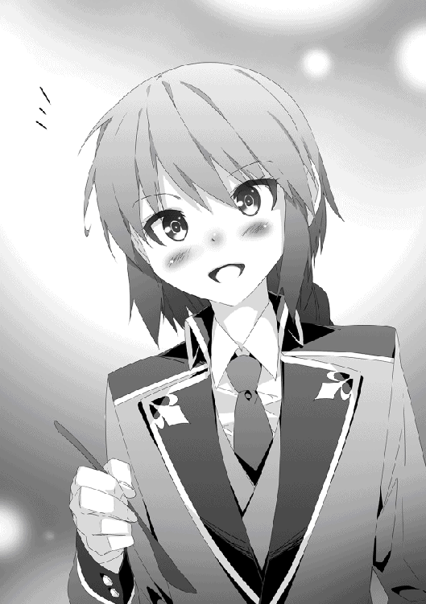
「そうはいうが俺もお前については殆ど知らないけど？」
「あ、いや。それはそうなのかもしれないけど......」
ラトスの呟きに的確なツッコミを入れるアルフィ。授業や日常的な会話はよくするが、互いの身の上に関しては殆ど触れていない。ラトスについては俺は多少なりとも事情を知っているがそれにしたって学校長経由。本人の口から聞いたことは無い。女の身でありながら男子生徒として学校に通っているのだ。身の上を語ればそこからボロがでてしまう可能性あるだろう。
ボロッと飛び出てしまうのは、おっぱいだけで良いのだ（本末転倒）。
ミュリエルにいたってはそもそも口数が少ない上に、まともに会話が成立することが少ない。会話が成立してもボケとツッコミの嵐が吹き荒れるだけで終わり、コミュニケーションが図れているとは言いがたい。それはそれで楽しいのだが。
「......ん、そういえばミュリエルって属性は何なんだ？」
ジーニアスに通う以上、それなりに魔法は使えるはずなのだが、思い返すとミュリエルが魔法を使った場面を一度も見たことが無い。
「いくら魔法学校でも、魔法を自由に使える機会は限られている。許可された場所以外での魔法の使用は校則違反だ」
「......ねぇライトハート。そこでどうして僕を見るのかな？」
ラトスには前科があるからな。
ジーニアスの生徒が大手を振るって魔法を行使できる機会は大きく三つ。
授業の一環。訓練場。そして生徒同士の『決闘』だ。
これ以外で使用すると、罰としてラトスのように学校の周辺を掃除させられたり、酷くなるとバルサみたく町の留置所で一週間近く拘留させられ大量の反省文を書かされる。
「どう考えても一年生の中で問題児筆頭なのに、ローヴィスが罰則を一度も受けていないのかが僕は不思議で仕方が無いよ」
「馬鹿を言うな。俺はこの学校に入学してから一度たりとも己の行動や言動を恥じたことは無い。ゆえに無実だ」
「余計に始末が悪いね！」
「話が致命的にずれてきてるぞお前ら」
ラトスが荒ぶるツッコミ役に進化しかけたところで、アルフィの冷静な声で話題が軌道修正される。
「確認しておくけど、お前がジーニアスに入学してから『加速』を使ったのは、昨日の決闘が初めてだよな」
「そうだけど......それが？」
アルフィは、俺が昨日の決闘で加速を使った時、観戦していたミュリエルがその性質を一目で看破していたことを教えてくれた。
「ミュリエルの奴、もしかしてめちゃくちゃ頭良いんじゃねぇのか？」
「思考の柔軟性は、そこらの学生よりも数段上だろうな」
「悪かったね。頭の固い魔法使いで」
言外に責められているように聞こえたのか、ラトスがぷいっとそっぽを向く。俺は苦笑した。
「拗ねるなよ。誰もお前が石頭だなんて言ってないから」
「今言ったじゃないか」
「子供か」
拗ねるラトスはともかく、ミュリエルが俺の魔法を調べようとしているのは本当だったようだ。アルフィの話を聞いた限りでは、視覚情報を記録し再生する魔法具すら使用している節がある。それだけ彼女の本気が読み取れた。
しかし、初見で加速が魔力砲と同質の魔法であると見抜くとは。ミュリエルの観察眼は侮れないな。
「──ん？」
つまり、ミュリエルは俺が加速の魔法を使う前──バルサとの決闘が始まるよりも前に加速の魔法を予期していたということになる。
妙な引っかかりを覚えながら、俺はその引っかかりが何を意味するのかこの場で考えつかなかった。
授業が終わり放課後になると、俺は一人で訓練場へと向かう。今日はアルフィもラトスも用事があるようで別行動だ。別に四六時中一緒にいる必要性も無いのだが、最近は常に誰かしらと一緒に行動していたためか、新鮮な気分を味わえた。
他に訓練場を使っている生徒の邪魔にならないよう片隅に陣取り、数多の六角形の防壁を投影。それを結合して一枚の六角形防壁へと変じ、またそれを分解して再結合という工程を何度も繰り返す。
六角形構造を持った防壁は、魔力効率が同じ強度の防壁に比べて格段に良くなる一方で投影の難易度が高まる欠点がある。その為、こうして普段から防壁を投影し展開する訓練を行い、躯に動作を染みつかせているのだ。
体術と魔法を組み合わせる闘い方は、魔法を投影してから体術を使っていては遅い。体術を使う過程の中で魔法を投影しなければ間に合わない。ほぼ無意識のレベルで魔法を行使できなければ意味が無いし、無意識レベルの行使で魔法を失敗していては本末転倒。だから、こうして普段から繰り返し使うことで本番中に失敗する確率を極限まで減らさなければならない。
大賢者曰く──。
『最近の魔法使いは多くの魔法をいかに速く投影するかに意識が向きすぎとる。無論、速さは戦闘において重要ではあるが、それは魔法の正確性があって初めて意味をなすのじゃよ』
正確性の無い魔法はいくら投影が速くとも〝脆い〟らしい。どこかしらに必ず不備が生じ、十全の効果を発揮しないのだという。そして、緊張化になる戦闘中なら魔法の不備はより顕著に表れる。
要約すれば、投影速度を上げる前にまず完璧に魔法陣を投影できなければ戦闘ではまるで役に立たない、ということだ。
その為の訓練も大賢者の婆さんに嫌と言うほどさせられた。
「うへぇ......、思い出しただけで気持ち悪くなってきた」
トラウマに近い記憶が呼び覚まされ、ぶるりと背筋が震える。そんな中でも防壁の分解、再構築の動作は止まらないのは大賢者による英才教育の賜であろう。
「......何度見ても惚れ惚れするような魔力操作」
「おぉうっ!?」
思考をあらぬ方向へ向けていたためか、突然背後から掛けられた声に盛大に驚いてしまった。
「本気で驚きながらも防壁がまるで揺るがない。素晴らしい魔力操作の精度」
「その前に驚かせたことへの謝罪は!?」
「失敬」
「短っ！」
背後を振り向くと、いつも通り我が道を行くを地で行くミュリエルが立っていた。
「我が道を行くなのはあなたも同じだと思う」
「......そんなに俺の考えって顔に出やすいのかね」
抑揚の無いミュリエルのツッコミを受けて己の顔をぺたぺた触ってみるが、勿論それで判断できるわけが無かった。
「どうしてあれだけ正確に魔力操作ができる？」
「教育者による地獄のような訓練の結果だ」
大賢者の基準で言うと、初級魔法なら完全徹夜の上に重度の二日酔いで、しかも風邪を引いて意識が酩酊している状態であっても完璧に投影できてようやく合格だ。
実際に、魔法で精神をそれに近い状況に無理矢理落とし込められた上で、六角形防壁を何度も投影させられたことがあった。
俺はその辺りを大賢者のことだけぼかしてミュリエルに教えた。
「......その状況だと、意識を保っているのさえ困難では？」
「意識を保つのさえ困難な状況でも初級魔法ぐらいなら使えて当然なんだとよ」
あのロリババ様は、普段はおちゃらけているものの、大賢者という称号に恥じない人物だ。一見無謀な課題に見えていても、そこには芯となるべき理が通っていた。
今思い出したような最悪の精神状況でも確実に魔法を投影できるのならば、極限状況に追い詰められた場合でも起死回生の一手を打てる可能性が増すのである。
「で、どうしたんだ今日は。朝から姿が見えなかったけど」
思い出すとまた気持ち悪くなってきそうだったので、俺は早々に話題を変えた。
「調べ物に熱中していて、昨日はちょっと寝るのが遅かった。今日起きたのが、お日様が一番高く昇った頃」
「完全に寝過ごしでサボりかよ」
よく見ると、ミュリエルの目元には隈が浮かんでいた。どうやら〝ちょっと〟どころの徹夜ではなかったようだ。心なしか、いつもより肌や髪の毛にも潤いが欠けている気がする。
「調べ物はいいんだが、寝不足は美容の天敵だぞ」
「──？ 何を言ってる？」
「いや、お前のことだよ」
会話が噛み合わず、右側に首を傾げるミュリエル。
「お前はもうちょっと自分の美少女レベルを自覚した方が良い」
「──？」
「だから、お前のことだよ」
コテンと、ミュリエルは反対側にもう一度首を傾げる。いかにミュリエルが残念美人であろうと、美人には変わりない。この様子だと、本当に自覚が無いらしい。
──自覚が無いからこその残念美人なのか。
思わず納得した俺は、うむうむと頷いてからミュリエルに問いかけた。
「で、徹夜してまで何を調べてたんだ？」
「昨日の決闘を検証していた」
さも当然とばかりにミュリエルが答えた。彼女が今最も関心を持っているのは俺の使う魔法。少し考えれば、徹夜するほど熱中してしまう物が何か、問うまでもなかったか。
「あの一戦は、観戦していた私としても非常に有意義な情報が得られた。おかげで、ある程度の仮説を立てることができた」
百聞は一見にしかずとはこのこと、とミュリエルが最後に付け足した。
「......参考までに、その仮説とやらは聞かせてもらえるか？」
「それはできない。私の中では確信に近いものはあるけれど、実証がまだ終わっていない」
「そりゃ残念だ」
実際に、ミュリエルがどれだけ俺の魔法を解き明かしているかに興味はあったのだが、無理に聞き出すのも悪いだろう。
「でも、このままだと少し不公平に思えた」
何が？ と聞く前にミュリエルは両手に魔法陣を投影し始めた。
「なので、ちょっとだけ私も手札を明かすことにした」
俺は目の前の光景に息を呑む。
ミュリエルの右手に投影されたのは、火属性の魔法陣。
ミュリエルの左手に投影されたのは、地属性の魔法陣。
そして次の瞬間。
「炎弾、岩弾。同時射出」
彼女の両手から、火属性の弾丸、地属性の弾丸が同時に発射され、少し離れた地点に着弾した。
俺は少しの間を置いてから、ようやく口を開いた。
「お前......『二属性持ち』だったのか」
「四属性持ちほど、珍しいモノじゃない」
特に誇る様子も無く、ミュリエルは淡々と言った。
四属性と比べれば確かに彼女の言い分は正しいが、比べる対象が間違っているだけで『二属性持ち』も十分すぎるほどに希有な存在だった。
魔法使いが生まれながらに持つ適性属性は、殆どの場合が遺伝によるもの。両親の持つ属性が同じであれば、その間から産まれてくる子供の属性も同じものになる。
父親と母親の持つ属性が違えば、子供の属性は父親か母親の持つ属性のどちらか。確率で言えば二分の一。ただし、魔法使いとしての才能は同じ属性の両親から産まれた者よりも劣る場合が多い。この辺りが、名門と呼ばれる魔法使いが代々同じ属性であることに起因している。
だが極希に、別々の属性をもつ両親の属性を同時に身に宿して産まれる存在がいる。
それが『二属性持ち』だ。
純血の魔法使いを産み良質な才能を残そうとする性質上、貴族の家系に二属性持ちが産まれることは殆ど無い。何せ、狙って産めるような確率ではないのだから。
貴族よりも圧倒的に数が多く、それでいて互いの属性を全く気にせずに結婚する平民の夫婦であっても、二属性持ちは滅多に産まれないのだから無理もない。
それでも、年に数人は産まれているようなので四属性よりかはまだ希少度は低い。一般人にしてみれば珍しいという点では同じだ。
そんな珍しい存在が、俺の目の間に立っているミュリエル。彼女は火属性と地属性を併せ持つ二属性持ちだったのだ。
「もしかして、お前もアルフィと同じで、スカウトされてジーニアスに入学した口か？」
「厳密には違うけど、その通り。私は平民出身」
立ち振る舞いが貴族としか思えなかったが、どうやらミュリエルは平民の出身だったらしい。
滅多に存在しない二属性持ちは、その殆どが平民の夫婦から産まれる。同じ男女のカップルでも貴族よりも平民の方が多いからだ。出産の数が多ければそれだけ二属性持ちが産まれる確率も上がる。
「けど、ジーニアスの一年生で二属性持ちがいるなんて話、今まで聞かなかったけどな」
「あなたの親友と違って、喧伝しているわけではないから。魔法の授業も、火属性の魔法しか使ってないもの」
「また何でさ？」
「騒がれるの、好きじゃない」
普段のマイペースっぷりを見せられていると、ミュリエルの答えは素直に頷けた。図書室で一人静かに調べ物をしている姿が似合いそうだしな。
「それに、二属性持ちは確かに珍しいかも知れないけど、だからといって強い魔法使いとは限らない。でもそれをよく理解せずに囃し立てる人間もいる」
「下手すりゃ、どっちつかずな魔法使いになるからな」
二属性の魔法を扱えるからといって、二属性の魔法で闘えるかは別問題。単純に考えれば、極めるべき魔法が通常の魔法使いの二倍になっているのだから。ゆえに、最悪の場合はどちらの属性も練度が中途半端になり、並みよりも劣った魔法使いになることがある。
珍しい＝強い、という図式は簡単には成り立たないのだ。
「その通り。だから普段は火属性の魔法しか使わない」
「でも、どうして俺には教えてくれたんだ？」
「さっきも言ったとおり、こちらばかりあなたのことを知っているのに、あなたがこちらのことを全く知らないというのは釣り合いが取れていないと思った」
「別に気にしないけどな、そんなこと」
「これは私の矜持の問題。あなたが気にすることではない」
言動はちょっと不思議ちゃんだが、案外律儀な性格なのかも知れないな。
「代わりと言ってはあれだけど、一つ質問して良い？」
「内容によるけどな」
「あなたが先ほど言った『教育者』とは、ジーニアスの教師ではなく以前に言っていた体術の指導者のこと？」
「そうだけど、妙なこと聞いてくるな」
予想外の問いかけに俺は顔を顰めながらも頷いた。
「......もしかして、それは『黄泉の森』に住まう『大賢者』のことを指しているの？」
この言葉にはさすがに俺も驚いた。まさか、大賢者の存在を知る生徒がいるとはついぞ思っていなかったからだ。
「その反応を見ると、どうやら本当らしい」
「なんでお前があの『ロリババ』のことを知ってるんだ？」
「ろりばば？」
「......ああ、正確に大賢者を知ってるわけじゃないのか」
一度でもあの『のじゃロリ』の姿を見れば嫌でも目に焼き付くだろう。中身は完全にお婆ちゃんだが、見てくれは完全に美少女だからな。
「だが、どうして大賢者が黄泉の森に住んでるって知ってるんだよ。というか、俺がアレの関係者だって話、ジーニアスに来てからしたか？」
「......私をジーニアスに連れてきた人が、大賢者と古い知り合いらしい。その人に、大賢者とあなたの関係性を聞かされた。それに、少しでも歴史に造詣が深ければ、大賢者の存在は目にする」
『大賢者』は歴史書を読めば目にする機会もあるか。ただ、あの大賢者の古い知り合いとなると、間違いなくエルフのような長命種族だろう。大賢者の婆さんが黄泉の森に引っ込み、種族問わずに人との交流を百年近くは絶っていたと本人が言っていたからな。長命種でない限り殆どが寿命で死んでいるはずだ。
「先に言っておくが、婆さんは人を選り好みするタイプだ。紹介してくれって言われても無理だからな」
婆さんが俺以外の人間と言葉を交わしている光景を見たことは無かったが、普段の言動から人の好き嫌いが激しいのが窺えた。
人見知りではなく、ウマが合わない相手とはとことん相性が悪いのだ。奇しくも俺はウマがあったようで、愉快な付き合いをさせてもらっている。
「聞き及んでいる。なかなかに気難しい人物であると。そんな人とあなたがどのような切っ掛けで知り合ったのか、少しだけ興味がある」
「あー、魔法の実験で事故った結果......かな？」
ミュリエルの質問に俺は言葉を濁し、曖昧に答えた。
幼い頃に反射による空中機動──いわゆる『跳躍』と名付けた魔法の練習をしていた時のことだ。
空中をある程度自由に動き回ることができるようになった俺は、今度は一度の跳躍でどれだけ遠くに飛べるかを挑戦したのだ。
十年近く前の話であり、なおかつ躯も今ほど鍛えておらずにまだまだ未熟。だというのに、俺は好奇心の赴くままに反射にありったけの魔力を注ぎ、考え無しにその反射力場を使って跳んだのだ。
──結果、力場に飛び乗った瞬間に躯がばらばらになるような衝撃と共に意識が半ば消失。凄まじい勢いで空中に投げ出された放物線を描いて吹き飛んだ俺は、地面に激突する寸前でどうにか防壁を展開。辛うじて墜落死は免れたがその時点で完全に意識が無くなったのだ。
何を隠そう墜落した地点というのが『黄泉の森』のど真ん中であり、それを発見したのが大賢者の婆さんだったのだ。
後で婆さんに聞いたが、防壁のおかげで墜落死こそ免れたが、それ以前に出力を上げすぎた跳躍の反動で俺の躯は相当にヤバいことになっていたらしい。婆さんが俺を発見し、治療してくれなければ、危険な魔獣の餌になる前に確実に命を落としていたという。
俺の黒歴史の一つなので勿論ミュリエルには教えない。誰しも人に言えない恥ずかしい過去はあるのだ。
またもトラウマが呼び出されて気持ちが落ち込みそうになる。それを察したわけではないだろうがミュリエルは話題を変えた。
「あなたが普段使っている六角形防壁も、大賢者から教授されたもの？」
「元々のアイディアはアルフィがくれたんだ。言ってなかったっけか」
このアイディアを大賢者に話し、彼女の指導の下で洗練したのが今の防壁だ。
「建築関係の論文に似たような記述があったけれど、どうしてそれをアルフィ・ライトハートが知っていた？」
「さぁな。あいつの頭は──知識に関しちゃ幼馴染みの俺でも大きな謎だ。昔から無駄に頭は良かったけど、村の大人じゃ誰でも知らないような知識とかがたまに飛びだしてきたからな」
あいつの謎知識は魔法に関連する創意工夫だけに止まらず、一般生活にまで及び活躍していた。農業や畜産に道具作りにまでと、俺の村があいつの知識のおかげで助かった部分は多い。作物の生産量が飛躍的に増したおかげで食料の貯蓄も可能になり、農作物が大きな不作を迎えた年でも奇跡的に餓死者が出ないほどだった。
もちろん、大不作だった年に、俺だって手をこまねいていたわけではない。こっそり村を抜け出し、黄泉の森で〝でかい・美味い・長持ち〟の三拍子揃った魔獣を仕留めて解体し、捌いた肉はさりげなく村の食料庫に納めていた。このことは食料庫を管理していたじいさんとの秘密だ。
「......大賢者とのことも興味はあるけど、アルフィ・ライトハートと立派な交友関係を築いていることにも疑問を感じる」
「よく言われるな、それは」
──片や魔法使いとしての将来を有望視された『四属性』。
──片や魔法使いとしての将来を絶望視された『無属性』。
同じ村で近い日に産まれたというだけで、傍目から見れば俺とアルフィは対極に位置するような存在だろう。
「もちろん、最初から仲が良かったわけじゃない」
かなり素敵に最悪な出会い方だったと記憶している。
「ほら、俺ってばご存じの通りに無属性じゃねぇか。で、あいつは四属性持ち。幼馴染みではあったが、最初はまるで接点がなかったんだよな」
「ん、なんとなく想像はできる」
両親や俺の後から産まれてきた妹は、魔法使いとしては無能の烙印を押されていた俺であっても普通に愛情を注いでくれた。俺がグレなかったのは間違いなく家族のおかげだろう。俺も家族が大好きです。
周囲からはこっぴどく馬鹿にされていたが。
人間というのはできて当たり前ということができない人間を嫌う傾向がある。物事を深く考えない子どもであればそれはより顕著になる。
子どもにとって覚えたての魔法はまさしくオモチャだ。魔法使いとして生計を立てるわけでもないが、とにかく覚えたばかりの魔法を使って色々と遊んでいた。ほとんどの子どもにとって魔法とは具体的な現象を引き起こすものであって、俺みたいに直接魔力を固めるようなものは『魔法』と呼べる代物ではなかった。
ゆえに、俺は忌避され虐められていた。
なので俺は、頑張って意思疎通に努めた。
肉体言語は、言語がまだ未熟な子どもに取って一番確実な意思伝達方法だ。おかげで多くの子どもと和解ができた。
ただ、単なる話し合いならまだいいが、中には魔法をぶっ放してくる阿呆も存在していた。
「まぁ、返り討ちにしたけど」
「まだその時点では六角形防壁は使えなかったのでは？」
「ガキの喧嘩なんぞにご立派な魔法が役に立つかよ。ああいうのはビビったもんが負けるんだよ。普通の一層防壁は使えたんだし、それで十分防げた」
大抵の奴は俺が無属性であることに油断し、後先考えずに魔法を一発撃って終わってしまう。そいつを防壁で防いで懐に飛び込んでしまえば後はこちらの独壇場だ。
「あとは鼻面に頭突きでも一発かましてやれば大抵は泣き叫んで退散する」
「......悪ガキ」
「否定はしない」
ただまぁ、そんなことを繰り返していれば徐々に相手もエスカレートしていくわけで。一時期はあの手この手でちょっかいを出してくる奴らとの全面対決が勃発していた。一対多とかだったので、こちらも遠慮なくやり返した。
「最終的にはアルフィが出てきたわけだ」
四属性というだけではなく、歳離れした聡明さであいつは同世代の子どもたちの中にあっては強烈な存在感を放っていた。当時からの無駄に整った顔たちも相まって、リーダー的な地位に立つのは当然の結果だった。
「子分の喧嘩に親分が出てきた感じ？」
「だいたいあってる」
先に手を出してきたのはあいつの子分だったのだが、話がどう届いたのかいつの間にか全ての元凶が俺にされていた。よくある話で今だからこそ笑って話せるが、当時の俺にとってははた迷惑に他ならなかった。
いつの間にか、村の子ども全員に取り囲まれて、アルフィと一対一で闘わされる状況にまで追い込まれたのだ。
魔法実験の事故で黄泉の森に墜落した時よりも後の話だ。
近い日に産まれ、なおかつ狭い村だけあって存在は知っており互いに顔を見たことはあったが、正面から対峙したのはあの時が初めてだった。
「まぁ、勝ったんだが」
「......あのアルフィ・ライトハートなら、当時からそれなりに魔法を使えたと思われるけど」
「初級魔法ではあったが、他の奴らとは比べものにならないくらいにバンバン使ってたな」
「ちなみに、その時は何歳だった？」
「俺もアルフィも、六歳か七歳くらいじゃなかったかな」
あの歳にして同時投影とか、非常識の塊のような奴だったな。それを伝えるとさすがにミュリエルも唖然とした。よく勝てたな、俺。
「さすがに、婆さんと出会う前にやり合ってたら負けてただろうけど」
「既に大賢者から指導を？」
「というよりかは、ちょっとした助言だな」
婆さんから本格的に指導を受け始めたのは、アルフィとの闘い──言うなれば人生初めての『決闘』を経てから。それまでは単なる茶飲み友達といった感覚だ。婆さんが『のじゃロリ』であるために、本当に同世代と一緒にいるような気持ちだった。というか、しばらく後になるまでロリババが本当に婆だと信じられなかった。当時の俺からしてみれば『ちょっと背伸びした少女』である。
だが、そんな彼女から授かった〝無属性ゆえの可能性〟を欠片とはいえ教わったからこそ、俺はアルフィとの『決闘』に勝利することができたのだ。
「『決闘』の後になんとか誤解を解くことができたら、アルフィの奴と妙に意気投合してな。で、あいつと友達になったらそれまで俺にちょっかい出してた奴も大人しくなって、それからは友達も増えた」
「雨降って地固まる」
「まさしくそれだな」
あれから結構な時間が経過していると考えると、ちょっと感慨深いな。
思い出を懐かしんでいると、ミュリエルの目が爛々と輝いているのに気がついた。
「やはり、あなたは非常に興味深い」
真正面からそんな輝いた目を向けられると、いささか照れてしまう。相手が美人だから尚更。たとえそれが研究対象に向けるようなものであってもだ。
「お、俺のことを話したんだ。ミュリエルのことも少しは教えてくれよ。お前の言い分だと、これで五分五分だろう」
「ん、確かにそう」
ミュリエルは特に嫌がる素振りも見せずに頷いた。半ば咄嗟の言葉であり、改めて考えるとなにを聞けばいいのだろうか迷う。
無難なところであれば──。
「ミュリエルは平民の出身なんだよな。どういった経緯でスカウトされたんだ？」
話のとっかかりとしてはこんなものだろう。
「本当はあまり興味はなかった」
......おや？ いきなり話に暗雲が。
「できることなら、ずっと一人で魔法の研究をしていたかった」
「引きこもり宣言!?」
「お師匠様が無理矢理この学校に入学させた。当初は非常に不本意だった」
「......それは、入学したくて仕方がない方々には決して聞かせられない発言だな」
ジーニアス魔法学校は文武共に厳しい試験を突破してようやく入学できる。毎年、入学枠のおよそ十倍近くの申し込みが殺到しているらしい。名のある貴族の子息であっても無条件に入学できるほど生やさしい場所ではない。
入学試験を受けるには受験料を支払わなくてはならないので、学校側として入学倍率が高いのは財政的に潤うので嬉しい話であろう。
「って、師匠？ お前をこの学校に連れてきたのは先生じゃないのか？」
「一応、この学校の教師」
ある意味、最強の伝手であろう。
「その師匠ってのはどういった経緯で知り合ったんだ？ 両親も結構な魔法使いだったりしたとか」
ミュリエルは首を横に振った。
「両親は商人で、魔法の才能は一般人より少し優れている程度のレベルだった。私が二属性持ちであることが発覚したら、もの凄く驚いていた」
本人の希望もあり、彼女には魔法使いとしての教育が成されることになった。平民だからであろうか、両親は娘の将来に対しては放任的であり、無理に己たちの商売を継がせようとは思っていなかった。むしろ、己から意欲的に学ぼうとする意思があるなら背中を後押ししようとしてくれた。
「いい親御さんだな」
「ん」
誇らしげにミュリエルが胸を張った（ポイン）。
平民でも通えるような魔法学校に入学するには、当時のミュリエルはまだ規定の年齢に達していなかった。そこで両親は年齢が十分に達するまでの〝繋ぎ〟として個人で魔法を指導できるもの──つまりは『家庭教師』を探し始めた。
魔法の教育を出来るフリーの魔法使いを雇うのには相応の額が必要になるが、幸いにもミュリエルの家は無理なく払える程度には裕福だった。
「そしたら師匠が家に訪ねてきた」
魔法の指導者としては最上の者だろうが、相手は現役の──しかも、かの名高きジーニアス魔法学校の教師。まさかの相手が接触してきて両親は揃って仰天したという。
「親は学校の運営に出資者として名簿の片隅に名を連ねていた。出資額はともかく、家格は平民以外の何者でもなかったから、選択肢からは外してたみたい」
だが、ジーニアスの教師は無理だとしても魔法使いとしての繋がりを利用して家庭教師を任せるに適した魔法使いがいるかも知れない。そう考えたミュリエルの両親はジーニアスに所属する教師の一人に相談を持ちかけたのだ。
結果として、ジーニアスの現役教師がミュリエルの教師──師になったのであった。
「さすがに師匠も学校教師が本業だからいつもというわけではなかったけど、定期的に家に来てくれて私に魔法の指導をしてくれた。私がある程度の年齢になってからは、師匠の家に泊まり込んで魔法を学ぶようになった」
その師は魔法を習得して使うよりも魔法を研究考察していくことのほうに重点をおいていたが、奇しくもミュリエルもそちらの方が性に合っていた。研究成果を試すために魔法を使うことはあっても、対人戦での魔法使用はほとんどなかったという。
「そして、師匠に無理矢理この学校に入学させられて現在に至る」
「って、〝無理矢理〟はおかしいだろ。家庭教師ってのは、お前が平民でも通える魔法学校に入学するまでの代替案じゃなかったのか？」
「師匠以上に指導者として優れている人は存在しない。だから学校で他の教師に教わる必要性は全くない」
これまでの内容で一番力強く断言するミュリエル。師として本気で尊敬している証拠だな。
「師匠の家の研究設備も書庫の蔵書も充実してた。たぶん、学校のそれらと引けを取らない。むしろ、余計なことに気を取られずに魔法の研究ができる環境が整っていた」
一口に『師匠』と言っているが、ミュリエルのお師匠様って実はジーニアスの中でもかなり優秀な教師ではなかろうか。
「それに、私は人に話を合わせるのが苦手」
「マイペースだもんな、おまえさん」
商人である両親に連れられ、仕事で各地を転々としたことから同世代の誰かと深く付き合う機会が少なかった。加えて、ミュリエル自身も元来の調べ物好きであり、一人でいることを苦に思わなかったという。
だからこそ、好きなだけ魔法の研究に熱中できる師匠の家が居心地良かったのだ。
ただ、俺の個人的な意見を言わせて貰うと。
「今後の人生で、コミュニケーション力が壊滅的なことになりそうだな、そんな生活」
「師匠もそう言っていた」
だから無理矢理ミュリエルをジーニアス魔法学校に入学させたのだろう。学校に通えば、強制的に不特定多数の同世代と接触することになり、人付き合いというものを学ぶ機会も増える。そういった意図があるのなら、ミュリエルには悪いが俺もミュリエルの師匠と同意見だった。
「さっきも言ったとおり、入学当初は不満しかなかったけど今は前ほどこの状況を嫌とは思っていない」
お、随分と前向きな発言だ。
「だって、凄く興味深い研究対象が目の前にいる」
......褒め言葉と素直に受け止めるには難しいな、これ。
「防御魔法のあんな運用法、これまで読んだ魔法関連の書物には書かれていなかった」
「そもそも、防御魔法しか使わない奴ってのも滅多にいないだろうさ」
「あのまま師匠の家に引き籠もっていたら知る由もなかった。だから、今では師匠に感謝している」
そういったミュリエルは、微笑んだ。普段からもう少し笑っていればさぞや男子にもてただろうな、と思える綺麗な笑顔だった。
不意に、ミュリエルが「あっ」となにかに気づいたような声を上げ、口に手を当てた。
「──本題をすっかり忘れていた」
おい。
「師匠と家族以外でこんなに長く話したのは久しぶりだったからついつい熱中していた」
思わずジト目になってしまった俺の視線を受け、さすがにミュリエルも恥ずかしかったのか口元に軽く握った手を当ててコホンと咳払いをした。
「それで、本題ってなんだよ」
また恋人になって欲しい、という話なら前向きに考えてもいい気がしてきた。
少しチョロいとは思うが、先ほどの笑顔を俺だけに向けてくれるのならば、ミュリエルと恋愛関係を結ぶのは魅力的だ。彼女の身の上も簡単にだが知ることができたし、最初の一歩としては悪くない始まり方だろう。これからもっとお互いについて深く知り合えば、本当に恋愛感情が芽生えるかもしれない。
ミュリエルは改めてこちらを見据えていった。
「リース・ローヴィス。あなたに決闘を申し込みます」
「............は？」
──ミュリエルの口から出てきた言葉は俺の予想の斜め上を飛んでいた。
◆◆◆ ミュリエル ◆◆◆
──経過報告──
状況を整理するために、一度ここに現状を記す。
対象──リース・ローヴィスの観察を開始してしばらく経過した。
対象と接触してきて分かったことがある。彼は表面上は不真面目な人間に見えたが、〝己の向上〟という点に絞れば恐るべき程にストイックであった。それは、魔力の消費効率の悪さから〝役立たず〟と称されていた防御魔法を戦闘用に改良し実戦に通用する形に仕上げている時点でも明らかであった。
彼の強さの秘密はおそらく『大賢者』という指導者の存在があってこそだと推測される。全てではないにしろ大きな部分を占めているのは間違いない。
大賢者は過去にいくつもの功績を残しながらも政治的な柵を嫌い、人知れず歴史の表舞台から姿を消している。果たしてリースが大賢者からどのような教育を受けたのか、非常に興味深い。様々な資料を読み、我が敬愛する『師』から話を聞いても、大賢者が『弟子』を取ったのはリースを除いて他にはいないとのこと。
弟子入りを申し出た者の中には三属性への適性を有し、実際に歴史に名を残すような偉業を成し遂げた者さえいる。だが、そんな逸材中の逸材中でさえ、大賢者は僅かな助言を加えるだけで弟子にすることはなかった。
詳細は不明だが、少なくとも過去の逸材たちとリースとでは決定的に異なる点があったのだろう。それに関しても調査を続けていく予定だ。
......いつの間にか大賢者への考察になっていたので、リース当人への考察に軌道修正をする。
一度、リース・ローヴィスの決闘を深く観察し多くのデータを取れた一方で、未だ仮説の域を出ない点も多く見受けられる。よって、今度は自らが彼と闘い目前で仮説を検証していかなければならない段階となった。
元々、対象にはいずれ自身が『決闘』という形でデータ検証を行う予定ではあったが、以前のデータが少ない状況ではデータを検証する間もなく一方的に敗北する恐れがあった。だが、それも先日の決闘を考察することによって解消された。
現在では、仮説の域を出ないとはいえ彼の魔法体系に関するほとんど全てを把握できているはず。ゆえに、対象との決闘を勝利することによって仮説を証明する。
リース・ローヴィスとの決闘において、留意すべき点は二つ。
一つは、彼の闘いにおいて最も基本的な魔法とされている六角形防壁の攻略。これを突破しなければ彼への勝利は不可能に近い。
当人の体術は一年生の間では随一。ジーニアス全体を通じてもおそらくトップクラスに位置しているはず。それに加えてあの防御力が加われば、まさに全身鎧の重装甲兵が縦横無尽に戦場を駆け回っているのにも等しい。
これに関しては攻略法に目処は立っている。リースと同じく無属性の六角形防壁は作れずとも、別の属性で似たような物は作り出せる。それによって検証は終了しており、先日の決闘を経て確信に至っている。後は私にそれを成す力があるかどうかだが、実践してみなければ分からないだろう。
二つ目は、彼の保有する魔力に関して。
いくら防壁の消費量を六角形構造を用いることで改善したとしても、彼が扱う魔力の量は異常なのである。
おそらく誰もが防壁の効率化に目を奪われているだろうが、一歩踏み込んで考えれば更に不可解な点がある。
最初の決闘で解説役のアルフィの口によって六角形防壁は通常の防壁に比べて魔力の消費量が四分の一になると発覚した。確かに驚くべき点だが、実際には〝放たれる側の魔力と受け止める側の魔力〟が等しくなっただけ。多少は防御側の魔力消費が有利になっているが、劇的に防御側が有利になるほどではない。どれほど計算しても結果は一緒であった。
他の者はともかく、彼と決闘したラトスとバルサの保有する魔力は同世代の中では飛び抜けており、一年生の間では五指に入る。逆説的に、それと魔法を撃ち合ったリースは彼らと同等の魔力を秘めているはずなのだ。
些か不平等な話だが、弟子としての立場を利用して師から多少の情報を聞き出した。その話では、リースの保有する魔力は魔法使いでもない常人にも劣るほど低いものであったらしい。六角形防壁ならともかく、反射であるなら二つ、多くて三つを投影した時点で魔力切れを起こすほどだという。
なのに彼は、決闘の最中に何度も防壁や反射を投影し、魔力切れを起こす気配が無い。師が私に虚偽を教えるはずは無かったが、これは明らかに矛盾している。
私は幻影石に記録した映像を見返した。
......そして、何度も見返している内に彼の戦闘にはある共通点があることに気がついた。漠然としたものであったが、『それ』を元に考察を重ねていくとある可能性が浮上した。
はっきり言って、己でも荒唐無稽としか言い様がない仮説。だが、私の仮説が正しければ彼の異常な魔力量に無理なく筋が通ってしまう。これは本人に確認してみるまで確証は得られないであろう。
もし本当にこの仮説が正しいのであれば、リースという魔法使いは他のどの魔法使いよりも異端な存在であることを意味する。
......よくよく考えてみれば、個人についてこれほど深く考察を重ねたことはかつてなかった。
魔法使いが扱う特徴的な魔法に興味は抱けても、魔法使いそのものに興味を抱くことはあまりなかった。
だが、このジーニアス魔法学校に入学し、生徒の──魔法使い同士の闘いを見てその認識は変わった。
それまでの私は、戦闘を〟仮説を証明する機会としか認識していなかった。そして、魔法使いの優劣は魔法を取得した数と魔力量。そして投影の速度で全てが決まると考えていた。
──たった二つの防御魔法を駆使して彼が闘う姿に、私のこれまでの概念が根っこから覆された。
一つの魔法でさえ、使い方を工夫すればあれほどまでに多くの運用法があるのだと。体術と魔法を組み合わせることで、あれほどに変幻自在な闘い方ができるのだと思い知らされた。
学校に入学するまで、幾度か魔法使い同士の闘いを見る機会はあった。だが、そのどれもが単なる魔法の打ち合いであり、彼ほどに多彩な闘いを見せた者はいなかった。
私はこの時初めて、ジーニアス学校へ私を入学させてくれたことを師に感謝した。この学校に入学しなければ私はそれまでの固定概念を抱いたままずっと師匠の研究室に引き籠もっていただろう。
それから彼が出てくる決闘はかかさず観戦するようになった。彼の一挙一動を見逃さないよう目を凝らした。
いつしか、学校の中で彼の姿を目で追うようになっていた。彼は気づいていないだろうが、実は彼と訓練場の帰り道に接触する以前から、私は彼を観察していた。
そして──理由は不明だが一年生次席やラトスが彼の側に居るときに不快感を覚えるようになっていた。
どうして彼との初接触時に『恋人関係』を持ち出したのか、実は私自身でもよく分かっていない。口が勝手に動いたとしか言い様がなかった。
ただ、その後に恋人関係を結んでしまった方がより深く彼のことを知ることができると判断し、そのように行動してきた。比較的良好な関係を結べたが未だに恋愛感情の芽は出てこなかったが、それなりに楽しい日々を送れたことは間違いない。
だが、その日々ももうすぐ終わる。此度の決闘を以て私は私の仮説を証明し、彼の考察を終了する。そしてまた、次の考察対象を探すだろう。この学校には他にもまだ多くの生徒が存在している。彼と同じように、私のこれまでの概念を覆すような生徒がいる可能性は大きい。
──しかし、彼との関わり合いを絶つと考えると、胸の奥に表現しがたいなにかが蠢いた。言葉では言い表せないものが頭の片隅に鎮座する。
まるで、リース・ローヴィスとの関係が終わってしまうことを惜しんでいるかのようだ。
......私はなにを書いているのだろうか。考察のはずが、ついつい日記のような内容になり始めている。
決闘を前にして緊張しているのだろう。この続きはまた今度。リースとの決闘を終え仮説を証明した後になる。今日はこれで筆を置くとしよう。
──筆者 ミュリエル・ウッドロウ──
◆◆◆ ミュリエル 終 ◆◆◆
「──で、彼女への返事はどうしたんだいローヴィス」
「そりゃもちろん、受けたに決まってるだろ」
いつもと同じく朝食の一席で、俺はアルフィとラトスに昨日の一件──ミュリエルから受けた『決闘』を申し込まれた話をした。やはり今日も付近にミュリエルの姿はない。
「......ウッドロウは、君との恋人関係を望んでいたんだよね。どうしてそれが『決闘』なんて話になるのかな。僕には理解し難いよ。それを受ける君もね」
「本音をいえば俺も十分に理解できてるとは言い難いんだよなぁ」
ミュリエルに決闘を申し込まれた直後は、しばらく言葉を失ってしまったほどだ。
「ただ、挑まれた以上は全力で応えるつもりではあるが」
幸いにも、この学校には『夢幻の結界』がある。決闘の最中に負った怪我はたとえ致命傷であってもその結界さえ解除してしまえば元の無傷な状態に戻る。女性相手であっても本気を出しやすい環境といえる。
「てっきり、ローヴィスは女性は殴れないと言い出すかと思っていたけれど」
「無抵抗の女を殴るほど下種じゃないつもりだが、闘いの場であればむしろ手を抜くのは失礼だと考えてるんでね」
それに、大賢者の婆さんと組み手をしていると、闘っている相手の性別はどうでも良くなってくる。強さは性別で決まるのではなく、本人の資質や練度によるのだと身を以て味あわされる。男女の差というのは、強さの性質が変わるだけだ。
「......それでリース。勝算はあるのか？」
「勝算もなにも、ミュリエルがどんな魔法を使うのかほとんど知らないんだ。対策の立てようがない」
アルフィの問いかけに、俺は手をぶらぶらと振って返した。
現時点で分かっていることといえば、ミュリエルが二属性持ちであり、地属性と火属性を扱う魔法使いであること。具体的に彼女がどの程度まで魔法を習得しているのかは全くの不明だ。
「......逆を考えると、君に対して勝算があるからウッドロウは決闘を申し込んだんだろうね」
ラトスの見解に、アルフィは頷いてから口を開く。
「リースは一年生の間では決闘を行っている回数が多い。それも、最近は落ち着いてきてるけどな」
決闘が流行り始めた当初は、血気盛んな同学年から幾度となく決闘を申し込まれたが、最近ではアルフィの言葉通りに沈静化している。無鉄砲に挑めば安易に返り討ちに遭うこと。それと、一度敗北した者はしばらくの間決闘の申し込みができなくなることが重なった結果だ。
大人数の前で闘えば、それだけ闘い方の多くを知られることもなる。回数を重ねれば、分析の検証を行う機会も増える。俺に関しての決闘の落ち着き具合は、その対策を練る期間でもあるのだろう。
もっとも、その辺りは考慮済みだ。前にも言ったとおり、対策を練られるということは、俺の弱点が露わになるのと同じ。中には俺の気づかないものも含まれているはずだ。それを潰していけば、俺はまた一つ強くなれる。
──弱点もまた、伸びしろと自覚せよ。
大賢者から賜った大事な教えの一つだ。
婆さんの言葉を頭の中で反芻していると、アルフィが思い出したように言った。
「ところで、ラトスはそろそろ決闘の申し込み禁止がなくなるんじゃなかったか。もう一度リースに挑むつもりか？」
「......少し考えたけど、辞めておくよ」
ラトスは肩を落としながら首を横に振った。
「ローヴィスに挑むのを諦めたわけじゃない。ただ、このままだと前回と全く同じ結果になりそうだから」
「そうかい。挑戦はいつでも受け付けるからな」
「くっ......その上から目線がそこはかとなく苛つく」
別に馬鹿にしているつもりはないんだけどな。
「かくいうライトハートはどうなんだよ」
「俺？」
質問していた側からされる側になるアルフィ。
「あら、それは私も少し気になるわね」
新たな声の方に三人して向くと、一年生三大おっぱいの一人、『巨大弩』のカディナがいた。
「今、なんか失礼なことを考えなかったかしら？」
「いや。逆に心の中で賞賛を贈ってたよ」
カディナがジロリと見てきたので素直に答えた。俺の返答が意外だったのか、カディナはぷいっとそっぽを向き改めてアルフィに問いかけた。
「アルフィ・ライトハートがリース・ローヴィスと同郷であり、長年のライバル関係であることは一年生の間に知れ渡っています。なのに、両者同士の『決闘』がまだ一度も行われていない。そのことに疑問を感じている人間もいるわ。当の私もその一人ですけれど」
それは俺も少し考えていた。折角同じ学校に入ったというのに、アルフィから闘いを挑まれたことが一度もなかった。その可能性を大きく考えていただけに少し意外に思っていたのだ。俺たちの視線を一点に浴びたアルフィは、深く息を吐いた。
「だいたいの理由はラトスと同じだ。俺もリースに勝つための具体的な勝算がまだ見えてこないんだよ」
「〝臆病風〟に吹かれたわけではなくて？」
カディナが挑発紛いの言葉を口にしたが、アルフィは鋭い視線で彼女を睨み付けた。
「──俺がどれだけこいつに負け越してるか知ってて、その台詞を吐いてるのか？」
「そ、それは......」
自らの失言を悟ったカディナは気圧されるようにたじろぐ。
「まだ一度も挑戦も敗北もしてない奴が、知ったような口をするなよ」
「──ッッ」
「それとも......お前こそ〝臆病風〟に吹かれたか？」
「言わせておけば──ッ」
歯を噛みしめる音が聞こえそうなほどに、カディナは悔しげに表情を歪めた。アルフィも険しい視線をカディナに向けたままだ。
朝っぱらから一触即発の空気になってきたな。話の中心は俺であるはずなのに、当人を忘れて二人で盛り上がってきている。
──結局、この場は朝の授業があった為に解散。カディナは去り際にアルフィを睨みつけた後に俺を一瞥し、一足先に教室へと向かった。
「俺ちゃん、モテモテだな」
「確実に違うから」
ラトスからのツッコミを受けてから、俺たちも各自教室へと向かったのだった。
ミュリエルとの決闘を翌日に控え、俺は最後の調整のため放課後に訓練場へ赴いた。
やることは基本的に普段の鍛錬と同じだ。鍛錬で成果を挙げられなければ本番で結果を出すことはできない。〝いつも通り〟を意識的に行うこともまた大事なことだ。
訓練場に足を踏み入れると、いつもと様子が違った。すでに別の生徒が何人かいたのだが、その誰もがとある一点を見据えて呆然としていた。
──ドォォォォォンッ!!
文字通り、空気を震わせる音が訓練場の中に木霊した。
訓練場は他の施設への被害や迷惑を考慮し、防音効果を含んだ結界が施されている。でなければ、こうした大音量で近所迷惑必至だからだ。
生徒たちの視線を集めている場所。今の音の根源に目を向けると、一人の女子生徒が佇んでいた。
「風砲弾！」
投影された魔法が解放され、訓練場の端に置かれた横並びの的に着弾。圧縮されていた空気が解放され、訓練場にまたも爆音が轟いた。女子生徒は更に同じ魔法の投影を重ね、次々に別の的へと命中させていく。
風砲弾は風弾よりも上位に位置する風属性魔法。威力は風弾よりも上だがその分投影に時間が掛かる。投影速度を意識しすぎると投影そのものが甘くなって威力が低下したり狙いが甘くなったりする。もっとも、これはどの魔法でも同じだ。
だが、女子生徒──カディナは風砲弾を常に一定間隔で連射し、動かないとはいえ放った全ての魔法を的に命中させている。投影の一つ一つを正確に行っている証拠だ。
「おおぉ、さすがぁ」
「──ッ!?」
ポツリと感心の言葉を口にすると、どうやらカディナの耳に届いたようだ。彼女は驚いたように肩を震わせた。距離が離れているのに声が聞こえたことを意外に思う。
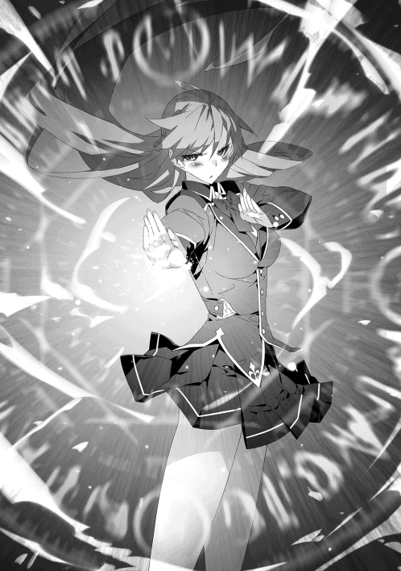
カディナの放った風砲弾が狙いを僅かにそれて背後の壁に着弾した。彼女はそれを目に、眉間に皺を寄せる。
「あー、もしかして邪魔したか？」
「──ッ。......いえ、あの程度で制御を誤った私の未熟です」
カディナは一瞬だけ声を荒げそうな雰囲気だったが、それを飲み込み代わりに深く息を吐いた。
「......で、なんの用ですか、リース・ローヴィス」
「知った顔に声をかけるのにわざわざ用って必要なのか？」
「私とあなたとでは、まだ数える程度にしか言葉を交わしていないはずですけど」
どうにも対応の仕方が刺々しいな。入学して最初の頃、魔法の威力測定の時に挑戦的な言葉を受け取って以来、まともな会話はこれで二度目かも知れない。
──いや、棘が鋭いのは今朝のことがあったせいか。
「ま、そう言いなさんな。折角だし、ここで一つクラスメイト同士の交流でも深めようや」
「それでお互いにどんな益が？」
「俺個人の意見を言わせてもらえば、お前みたいな美人さんと仲良くなれるのは非常に嬉しい」
更にカディナの視線が鋭くなった。どうやらお気に召さなかったらしい。割と本心であったのだが。
仕方がないので、当たり障りのない会話から始めよう。
「俺はよく放課後で訓練場を利用してるが、この場所でお前と顔を合わせるのは初めてだよな」
「......普段使っている訓練場が整備中で使えなかったので、仕方がなくこちらの訓練場に来ただけです」
「へぇ......よく見りゃぁいつもよりちょっと人が多いな」
訓練場を使う顔ぶれはわりと固定で、話したことはないがいつも使っている生徒の顔は同じだ。ただ、それに加えて普段見ない顔がちらほらとあった。
「ん？ 普段使ってるってことは、お前も放課後は訓練場で自己練してる口か？」
「当然です。私はアルファイア家の長女ですから」
......あかん、アルファイアさん家の事情とか全く知らん。威力測定の時や、先ほどの投影を見るに、彼女自身の才覚は確かなもの。その実家も魔法使いとして濃い血を受け継いでいるのは想像に難くない。立ち振る舞いからは良いところのお嬢様だとは思っていたが。
「随分と意外そうな顔をしていますね」
「っと、こいつは失礼した。別に、馬鹿にしてたわけじゃぁないんだけどさ......」
口では謝罪を述べたが、本音を言えば彼女のように優れた才能を持った者は──特に、貴族であれば、努力とは無縁の生活を送っているとばかり思っていたが......。
「この国を武力の面から支えてきた魔法使いの一族。その一端である私が日々を無駄にするわけがないでしょう」
まるで模範解答のような言い回しだったが、それは上辺だけではなく責任感の籠もった〝芯〟のある言葉だった。
故郷の村にいた頃は、貴族と聞けばどいつもこいつも生まれ持った地位と才能に胡座を掻いて威張りくさり。そのくせ相手が己よりも上だと分かった途端、妙にへりくだる奴ばかりだった。
「戦となれば矢面に立って戦い、平時であれば次の代へ血脈を受け継ぐため、研鑽を行うこと。それこそが、貴族の役割であり義務です。少なくとも、私はお父様からそう教わって生きてきました」
「随分とご立派なお父様だな」
「ええ。私の誇りであり、自慢の父です」
尊敬する対象を褒められて機嫌をよろしくしたのか、カディナの眉間から皺が取れる。ついでに、誇らしげに胸を張り、巨大弩おっぱいがたゆんと揺れた。
「どうしてそんなに目を瞬いているのですか？」
──脳内シャッターを大量に切っているだけです。
とはもちろん口にせず、心の中で呟いた。
「......良い機会です。前からあなたに聞いておきたいことがありました」
カディナは真剣な眼差しをこちらに向けてきた。それを受け、俺も真面目に答えようと少し気持ちを切り替えた。
「朝食の席でアルフィ・ライトハートの言っていたことは間違いではありません。今の私では、あなたに勝つことはできないでしょう。それどころか、序列的には私の下であるはずのアルフィ・ライトハートにも及ぶかどうか」
彼女も、これまで幾度となく俺やアルフィが同級生を相手に決闘場で闘う姿を見てきたのだろう。整った顔立ちが悔しげに小さく歪む。
「でも、だからこそ分からない。どうして無属性しか扱えないあなたが、アルフィ・ライトハートと同等かそれ以上の実力を得られたのか。なにがあなたをそこまで駆り立てたのか。なにか大きな目的があったのではなかったのですか？」
正直に言えば拍子抜けな質問だった。ただ、カディナにとっては真剣そのものであるのは分かっていたので、俺は小さく口の端を小さく吊り上げるだけに留めた。
──あと、いちいち人の名前をフルネームで呼ぶの疲れないのかな、とかも思ったがもちろん口にしない。
「それを聞いてどうするよ。もし俺に壮大な野望があったとして、お前はどうするつもりだ？」
「いえ、純粋に疑問に思っただけです。非効率で役立たずとされていた無属性魔法をあそこまで昇華させるには、何かしらの大きな目的があるとしか考えられません。ましてや平民が魔法使いとしての遙かな高みを目指そうと考えるなら尚更です」
非常に真面目なカディナの疑問に、今度は堪えきれずに笑い声を上げてしまった。馬鹿にされたと思ったのか顔を赤らめるカディナだったが、流石に許して欲しい。
「な、なにが可笑しいのですか!?」
「いや、悪い。お前を侮辱するつもりで笑ったわけじゃないんだ」
一頻り笑い声を上げてから、俺は呼吸を整えてカディナの方を向いた。
「ただ期待に添えなくて悪いけど、俺はお前の考えているような特別な目的を持ってるわけじゃない」
言った通り、期待通りの答えではないだろうが、それでも彼女に俺の中にある〝芯〟を伝える。
「俺は、無属性魔法が好きなんだ」
「────？」
何を言っているんだこいつ、という顔だったが、俺は構わずに続けた。
「割と勘違いされやすいんだが、俺は自分が無属性の魔法使いであることに負い目を感じたことは一度たりともない」
むしろ俺は自分が無属性の魔法使いであることに誇りすら感じている。
......誇りは言い過ぎかもしれないが、少なくとも〝無属性〟であることを悔やんだことはない。
「お前の言うとおり無属性の魔法使いは『滅多にいない落ちこぼれ』って世間では言われてる。けど、落ちこぼれのままなのはその世間様が大本の原因だ」
本当は大賢者からの受け売りだが、俺も同じ意見だった。
数え切れないほどの試行錯誤が積み重なって、今の魔法が成り立っている。魔法陣の一つを取り出しても、そこには先人たちの叡智が詰まっている。
「魔法の才能を有しているか生業にしている奴のほとんどは、属性魔法の使い手だ。で、使う奴が多ければ多いほど、検証される機会ってのは多くなる。逆もまた然りだ」
無属性魔法は誰にでも扱える魔法だが、無属性魔法を専門に扱っている魔法使いは滅多にいないだろう。少なくとも、俺は俺以外の無属性魔法使いを見たことがない。
仮に使い手がいたとしても、自ら名乗りでることはないに違いない。何せ、無属性魔法使いは世間では『役立たず』と呼ばれているからだ。
扱う者が少なく、表舞台に立つ気概すら持てない。ゆえに、属性魔法に比べて試行錯誤の数が圧倒的に少ない。これこそが無属性魔法が『役立たず』から抜け出せない最大の要因だ。
「どいつもこいつも無属性魔法は〝非効率〟って点にだけ目がいって、その可能性には見向きもしない。俺から言わせてもらえば、むしろ無属性は〝可能性〟の塊って考えているのにさ」
「無属性魔法の......可能性？」
「考えてもみろ。防壁の一つとっても、応用次第でどれだけ使い道があるよ」
「......あ」
最初こそ首を傾げたカディナだったが、俺の言わんとしたことを理解してハッとなった。
魔力消費の効率化を計った『六角形防壁』。周囲に展開し広域を守護する『広域結界』。手に纏わせ打撃力を底上げする『手甲』。
防壁だけでもこれほどの応用幅があるし、このほかにもまだまだ手数があるし、防壁に限った話ではない。反射にだって『魔力砲』や『跳躍』が存在している。
無属性魔法というのは構造が単純であり、だからこそ創意工夫の幅が属性魔法よりも広い。
──こんなに面白い魔法が他にあるだろうか。
「俺にとって、魔法ってのは最高の玩具だ。そいつで、どれだけ上り詰めることができるのかが知りたいのさ。──でもって、世間様では役立たずとされている俺の好きな無属性魔法で最強になれたら、それこそ最高に愉快で痛快な話になるじゃないか」
◆◆◆ カディナ ◆◆◆
リースとの会話の後、カディナはそれ以上は気分が乗らずに訓練場を後にしていた。
まだ夕暮れ時にも早く、今から町に出て買い物をする時間はある。だがカディナは真っ直ぐに自室への帰り道を辿っていた。
その最中にリースとの会話を何度も思い返す。
──昨今の魔法使いにとって、魔法とは手段にすぎない。
いかに多くの魔法を習得しあるいは魔法の練度を高め、闘うこととなる魔法使いを上回るか。そこに重点を置いている。リースの考え方は、どちらかと言えば研究職を目指す者の思考に近いだろう。一昔前の、それこそ神秘の秘奥を追い求める人間の考え方だ。
本来なら、他者の夢や目標に口を挟む道理はない。ないはずだが、リースの言葉がカディナの琴線を揺らし続けていた。
「......魔法が好き──か」
まるで子どもが無邪気に口にするような言葉だ。そうでありながら、どうしてあれほどまでの魔法を手に入れられたのか、カディナには理解ができなかった。
カディナがジーニアスに入学したのは、兄が率いる魔法騎士団に入り、兄の補佐をする立場に上り詰めるため。やはり、彼女にとっても魔法とは手段の一つにしかすぎなかった。
彼女だって己の魔法への思い入れはあるし誇りにも思っているが、好きかどうかと聞かれれば答えに迷ってしまう。リースのように断言はできない。それがより一層、カディナの心を刺激して仕方が無い。
むしろ、〝子どもっぽい〟と馬鹿に──は失礼が過ぎるが、呆れる位は許されるだろう。実際に、これを語った本人は直後に「動機としては子どもっぽすぎるよな」と笑いながら述べていた。
だが、カディナは馬鹿にも呆れもできずに、これを聞いた直後に逃げ出すように訓練場から離れた。そうしなければ、胸中にある形容しがたい感情が溢れ出しそうになったからだ。
リースは破天荒な物言いや行動を除けば、実は良識のある少年だ。目上の者に対する敬意や皆無ではあるが、かといって反骨精神の塊ではない。権力を振りかざせば際限ない挑発が返ってくるが、立場で物事を考えずに正面から向き合えば会話が成立する相手である。
しかし、魔法使いとしてのリースは本当に『無邪気』なのだ。幼い頃に抱いた『魔法が好きである』という気持ちを、今の今までずっと胸に宿している。
あんな子どものような考えを持つ輩に己は劣っているのか。そんな者と闘うことを私は恐れているのか。
そう考えつつも、いずれもしっくりこない。
胸の中にある蟠りの根源を、カディナ自身が掴みきれていなかった。そしてこれは、今回彼の話を聞く以前から。それこそ入学した当初に初めて彼と言葉を交わした時から胸の中にあった気持ちそのものであった。
しかし、不意にカディナは思った。
──もし幼い頃の己であればどうであろうか。
カディナも将来の立場や夢を考えずに魔法を習っていた時期があった。
それは、幼い頃に両親や兄から魔法の手ほどきをしてもらっていた頃だ。
あの年頃は、魔法を使うことが純粋に楽しかった。魔法を上手に使えれば周囲の人間が褒めてくれることもあったが、新しい魔法を使えるようになればその度に心が躍ったものだ。父にねだって新たな魔法を教えてもらったこともよくあった。
カディナは思った。
......その気持ちが薄れてしまったのはいつだろうか。
他の同世代と接し、魔法使いとしての優劣を意識し始めた時だろうか。あるいは偉大な父の背中と兄の姿を見て、将来の夢を魔法騎士団の入団と定めたときだろうか。
いつの間にかカディナにとっての魔法は『好きなもの』から『夢を叶える道具』へと変じていた。魔法を楽しむよりも、魔法を使って目的を成すことに思考が切り替わっていった。
彼女に限った話ではなく、多くの魔法使いが同じような道を辿っているはずだ。やがては魔法で身を立てていくことを考え始め、魔法が『道具』へと成り果てた。
「......ああ、そうなんですね」
ここに至って、ようやくカディナは考えが至る。
単純な話だ。
──好きこそ物の上手なれ。
リースは、子どもの頃からの気持ちを持ち続けている。純粋に好きであるからこそ、不純無く全力で高みを目指すことができる。
「つまりは、どれだけ好きな『魔法』に集中できるか、ということですか」
だからこそ、本気で新たな魔法を生み出す。
だからこそ、本気でその使い方を模索する。
だからこそ、十全に発揮するため己を高めようとする。
「だからこそ、彼が気になって仕方が無かったのかも知れない」
ようやく合点がいった。
カディナが忘れてしまった、魔法への想いをリースは大事に大事に抱き続けていた。
カディナは自分でも気づかないうちに小さく嫉妬をしていたのだ。時が経つにつれて失われるはずのその尊い気持ちを、未だに保ち続けているリースに。
〝純粋〟な魔法使いであるリースを、羨ましく思っていたのだ。
この時、カディナは気がついていなかった。
リースへ抱いていた羨望の感情が、実は幼い頃に父親に憧れていた時のそれに近かったこと。
そして、今まさに己がとびっきりの笑顔を浮かべていることに。
◆◆◆ リース ◆◆◆
訓練場が閉まった後も、リースは学校の敷地内にある人気のない場所で鍛錬を行っていた。とはいうが、魔法は使わない鍛錬を中心としたもので、体術のキレ具合を確認する意味が強かった。
普段の彼であれば、決闘を翌日に控えていてもここまで丹念に調子を整えるようなことはしない。むしろ、早めに休息を取り心身ともに充実した状態で闘いに臨むのがリースの常だった。
だが、この日は別だった。
「せいやぁぁ!!」
空を撃ち貫くような正拳突き。気迫と共に拳を撃ち出したリースの表情は、今まさに誰かと闘っているかのような真剣みを帯びていた。
カディナに話したとおり、リースは最強を目指して魔法の研鑽を始めたわけではない。己の考えた魔法を実践するために誰かと矛を交えるようになったのだ。けれども、闘いを続けていく内に、闘いそのものにも楽しみを見出していった。
明日の相手──ミュリエルがどのような魔法を使ってくるのか。どれほどの実力を有するのか。想像するだけで胸が躍る。けれども、それ以上に彼の胸中には強い予感があった。
──明日の決闘は、ジーニアスに来てから一番激しい闘いになる。
根拠はなかったが確信めいたなにかがあり、気持ちばかりが高ぶっていく。とてもじっとしてはいられずに、こうして空が暗くなり始めてからも躯を動かし続けていた。
「......ふぅ」
躯に熱がこもり始める頃、リースは一度深呼吸をした。そして、少しの間を置き再び躯を動かそうとしたとき。
──闇夜を切り裂くような、一筋の閃光が走った。
「──防壁！」
リースはほぼ無意識レベルで反応し、魔力壁を投影。己へと発せられた『攻撃魔法』を防ぐ。閃光と防壁の衝突地点から、火花のように魔力の光が弾けた。
「──ッ!?」
閃光は中級魔法に匹敵する力を秘めていたが、同等の魔法をリースはこれまで幾度となく防いできている。だというのに、防ぐ彼の表情には小さく焦りが含まれていた。
やがて閃光が消え去ると、リースは安堵するように大きく息を吐いた。
......それから、閃光が飛んできた方向をキッと睨み付けた。
「どうやら、勘は鈍っておらんようだのぉ」
「......久々に顔を合わせるにしちゃぁ、随分物騒なご挨拶じゃないですかね、大賢者様」
最早星明かりしかなくなった薄暗い空間の奥から、ケラケラと笑い声を発しながら幼い少女が姿を現した。
魑魅魍魎跋扈する『黄泉の森』の深奥に住まい、リースの師でもある『大賢者』であった。
「粒揃いとはいえ、まだ未熟な若者たちに囲まれた空間でぬるま湯に浸かっていると思っとったが、その心配はなさそうじゃな。一安心じゃて」
腕を組みながらまたも笑う大賢者に、リースは即座に疑問を投げかけた。
「なんで婆さんがこんな場所にいるんだよ」
「先日にここの学校長から便りをもらってのぉ。面白いものが見れると書いてあったので、こうして出向いてやったのよ」
大賢者が彼を指さしながら続けた。
「聞くところによると、お主は明日誰かしらと──ほれ、ここで言えば『決闘』だったかの。それをやらかすんじゃろ？」
大賢者の言う『面白いもの』が見当も付かずに首を傾げていたリースだが、続きを聞いて『ミュリエルとの決闘』であるとようやく気が付いた。
「って、婆さん。あんた、明日の決闘を見にわざわざ黄泉の森から出てきたのか？」
「可愛い弟子の奮闘する姿を一度は拝みたくなってな。にしても、あの森から出るのは何年ぶりじゃろうかのぉ。余程のことがない限り、世俗とは縁を切るつもりではあったのじゃがな」
しみじみと呟く大賢者。ミュリエルの話では百年ほど歴史の表舞台から姿を消しているらしい。
「これを機に今後もちょくちょくと外界に顔を出すようにするかの。胸くそ悪い俗物どもはその大半がくたばっているだろうし」
「まぁ......いいんじゃないのか？ あんな薄暗い森の中に閉じこもっているよりは」
大賢者の引きこもり脱却発言に、リースは家に閉じこもっていた娘を再び世に送り出した親のような心境になった。
「ところでリースよ」
感慨深い気持ちを抱いていると、不意にかけられた声にリースは我に返った。その途端に、彼の背筋がゾクリと震えた。
それまでは陽気に笑っていた美少女が、次に見たときには老齢で狡猾な笑みを浮かべていたからだ。外見はそれまでと同じではあったが、滲み出る深みのある気配が、彼女が『大賢者』と称されるだけの〝凄み〟を有しているのだと思い知らされた。
「先ほど、儂の『閃光』を防いだのは見事だったが、防壁そのものの〝欠点〟は未だに改善できておらぬようだな」
「あー、そいつに関しては言い訳できない。色々と考えちゃいるんだが、今のところ目処が立ってないんだ」
リースは気まずげに大賢者から視線を逸らした。
「最早言うまでもないだろうが、過信は身を滅ぼすぞ。特に、お主の場合は必要以上に防壁を多用したがる。下手を打てば致命的な状況を招くぞ」
大賢者の忠告は耳に痛むが、一点の隙間ない正論にリースは黙って耳を傾ける。何しろ、彼女の言葉は常にリースが懸念していることでもあったからだ。
「お主のことだ。すでに見せつけるように防壁を使っておるだろう。そう遠くないうちに、お主ご自慢の防壁の突破口を見出す者が出てくるだろう」
〝突破口〟とはまさに言い得て妙だった。文字通り、防壁を突破してくる者が、この先必ず出てくる。
「案外、それはすぐかもしれないぜ」
「なんだと？」
リースの防壁を突き破る者。
──大賢者を除けば、それを成せた者は幼馴染みにして親友であるアルフィに他ならなかった。
だが、リースの中にある根拠はなくとも確信めいた予感が告げていた。
「まだお主がこの学校に入学してから一ヶ月と少し程度であろう。これほど早く──」
「婆さんも言ってただろ。このジーニアス魔法学校にいるのは粒揃いってさ」
明日の決闘。もしかしたらミュリエルは自慢の防壁を突破してくるかもしれない。
「......それにしては随分と楽しそうじゃな」
「そう見えるか？」
「ああ。まるで新しい玩具を見つけた童のようじゃぞ」
人様を相手に玩具呼ばわりは失礼極まりないが。なるほど、心境としては大賢者の言葉に近かった。
「これは確かに、明日は面白いものが見られそうじゃわい」
「ご期待に添えるかは分からないが、精一杯やらせてもらうさ」
──決闘を翌日に迎え、夜は更けていく。
◆◆◆ ミュリエル ◆◆◆
指定された決闘の当日。
すでに平常通りの授業は終了し、放課後に突入。リースとミュリエルの決闘が目前にまで迫っていた。
学年一位の決闘は今や一年生徒にとっては注目の的。他の学年からも興味を集め始めており、決闘場の観客席はすでに大半が埋まっていた。
これまでと同じく、彼の圧勝劇を見ようとしているのが半分。残りの半分は更にリースに挑戦する者に興味を持つ者、リースの戦術や魔法を考察しようとする者が半々といったところだ。
大衆にとっては挑戦者として映っているミュリエルは、出場者用の控え室にて待機していた。観客席からの喧騒が遠く響いてくるが、彼女は特に気にした様子もなく決闘前の最終調整を行っていた。
（......勝ち筋は見えている。予測を超えていた場合の許容範囲も設定してある。私が対応を誤らなければ負けないはず）
ここ数日間に頭の中で繰り返してきた段取りを何度も確認する。
蛮勇でも無謀でもなく、理論性然とした根拠を元に組み立てられた戦略ではあったが、かといって油断できる相手ではないのは、闘うミュリエルが一番よく理解していた。
そんな彼女の控え室に、来訪者が入ってきた。
「やぁミュリエル。調子はどうだい？」
「............精神面が若干高揚していること以外は問題ない」
誰かが来るとは思っておらず、また訪れたのが予想外の人物だったため、ミュリエルも言葉を返すのが遅れた。
「さすがに君も、あれほどの人数を前にすると緊張するようだね」
「リース・ローヴィスが相手では僅かな油断も命取り。観客なんてただの背景」
「相変わらず、興味のないことに対しては本当にドライな性格をしているね」
来訪者はミュリエルの言動に苦笑した。彼女の人となりを深く知っているだけあり、ミュリエルの言葉は半ば予想通りではあった。
それだけに、今回の決闘は寝耳に水であった。
「君が彼に決闘を挑んだと聞いたときはさすがに驚かされたよ。私の知る限り、君は闘いというものに無縁な魔法使いだからね」
魔法使いは大きく分別すれば二種類の気質に分かれている。
魔法を『武器』として扱う戦闘肌の者。
魔法を『研究対象』として捕らえる学者肌の者。
その分類でいけば、ミュリエルは根っからの後者であった。
「参考までに、彼と闘う上での重要要素はどこにあるかを聞いておきたいんだが、いいかな？」
「......貴方は貴方で己なりの推測があるはず」
「それはそうなんだけどね。『師』と『弟子』で情報を共有するのは不思議じゃないだろう」
「......分かった。こちらとしても、私が立てた仮説に不備がないか、確認しておきたい」
小さく思案したミュリエルは、己の師に自らが考えるリースの〝秘密〟とその攻略法を話した。
「──以上が、私の立てた仮説」
「うん。私の考えた理論とほぼ同じだね」
「これ以上は、本人と闘いながら立証していくしかない」
ミュリエルは己の説が大筋を外していない根拠を得られ満足していた。
ただ、それとは別に気になる点があった。
「普段は立証が終わってからこんな話をする。どうして今回に限って、仮説の段階で話させたの？」
「......実は、今回の決闘には、外部からとある人物を招待しているんだよ」
「誰？」
「リース君の師匠だよ」
「──ッ、大賢者!?」
表情の変化が乏しいミュリエルであっても、師の招いた人物の名には目を見開くほど驚かされた。
「私の育てた弟子がどれほどの実力を有しているのか、かつての恩師に見せたいと思ってね」
「恩師と思っているのは、私の方だけかも知れないけど」と彼は付け足した。
いくつかの助言を授かりはしたが、大賢者の弟子は前にも後にもリースただ一人。ミュリエルの師匠は決して、『大賢者の弟子』ではなかったのだから。
「さて、そろそろ時間だろう。私はこの辺りで失礼する。健闘を祈っているよ」
「......今更ではあるかもしれないけど、貴方の立場からして生徒個人を贔屓するのはあまりよろしくないのでは？」
「もちろん、私はリース君もミュリエルも等しく応援している。──だが、私も感情ある人間だ。その天秤が若干だけ君に傾くのは仕方が無いことだよ」
そう言い残して、彼は控え室から去った。
「......最後の最後で大きな爆弾を投下しないで欲しい」
先ほどまでの適度な緊張感が更に跳ね上がってしまい、小さくだがミュリエルは恨みまがしい目を師に向けた。
師を名乗る者として、弟子に送りたかった彼なりの激励のつもりだった。頑張るように促すよりも、何倍も効果があった。師の目論見は成功に違いなかった。
「............どこの誰が見ていようが関係ない。私は私の勝利を目指せばいいだけの話」
ミュリエルは目を瞑ると、高ぶっていた心を落ち着かせる。観客が一人増えた程度で揺るぐような勝ち筋であれば、その程度の勝算だったということだ。
「でも、負けられない理由が一つだけ増えた」
感情論は本来好むところではない。だが、こんな偏屈な己を弟子として迎え入れてくれた師に対する敬愛の念は、ミュリエルも持ち合わせていた。
「大賢者の前で──何よりも、師匠の前で格好悪い姿なんて見せられない」
ミュリエルはらしくもないと自覚しながら、闘うための気勢を静かに強めるのであった。
◆◆◆ ミュリエル 終 ◆◆◆
決闘場の選手入場口、その陰から俺は外の様子を伺った。
「毎度思うが、よくこれだけ盛り上がれるな。暇なのみんな？」
「自分を応援に来ている奴らに対して酷い言い様だな」
俺の率直な意見にアルフィが呆れる。ただ、その言葉の後にはこちらを試すような笑みが浮かんだ。
「あれだけの観客数を前に緊張はしていないみたいだな」
「モチベーションは上がるけどな。俺の魔法を大人数に見せつけるチャンスなんだ。がちがちに固まってたらなにもできないだろ」
「それをできる奴は案外少ないぞ」
そりゃぁ、決闘を始めたばかりの頃は多少なりとも緊張はしていたが、規模は違えど既に何度も決闘場で他の生徒と観客に囲まれながら闘っているのだ。嫌でも慣れてくる。
「で、改めて聞くがミュリエルを相手に勝算は？」
「ミュリエルが二属性持ちって以外は不明だ。勝算もへったくれもねぇよ」
あれから何度か訓練場に足を運んだが、ミュリエルが魔法を使っている場面に──どころかミュリエルそのものに会うことは無かった。決闘の対戦相手に手札を晒さないように、俺を避けていたと考えれば当然か。
ただ、他に情報が無い──わけでもなかった。
──ミュリエルは訓練場で己が二属性持ちであることを自ら明かしたとき、その証明として火属性と地属性の魔法を〝同時〟に投影した。
何気なく行っていたように見えたが、実は異なる属性の魔法を同時に投影するのは、単純な同時投影よりも難易度が高い。俺自身は無属性であるし、当然二属性持ちでもないので実感が無く、アルフィや婆さんから聞いた話だ。
似たような魔法であり難易度的には同等でも、属性が違えばその魔法陣の様相はガラリと変わる。言葉で言い表すのは非常に困難らしいのだが、同属性での同時投影とはかなり勝手が違うと言う。
その割に、アルフィはぽんぽんと異なる属性の同時投影を行っているのが意味不明だ。二属性の同時投影どころか、四属性の『四重投影』って実はちょっと人間辞めてないかってぐらいだろ。頭の中身とかどうなってんだ？
「珍獣を見るような目で人を見るな。俺からしてみれば、お前も十分すぎる位に珍獣だからな」
「マジでか............照れるじゃねぇかよ」
「あ、うん。その反応は予想できてた」
アルフィが珍獣か、俺が珍獣かは今度にしよう。今はミュリエルの珍獣具合が問題だ。
魔法の扱いが練達だからといって、魔法使いとしての闘いが得意とは限らない。それでも、警戒するには十分すぎる要素。
「気をつけろよ。彼女はこの短期間でお前の使う魔法をかなり深いレベルまで解明してるぞ。俺だって、お前が教えてくれるまで見当も付かなかったのに」
内包する魔力が多い奴らにとって、俺の魔力の扱い方は異質だろうからな。すぐに考えが及ばなくても無理はない。だとしても、この学校にいる奴らは優秀な奴が揃ってるっぽいからな。今回の決闘でミュリエルが俺の扱っている技法を解き明かしても、それは早いか遅いかの違い。彼女でなくとも別の誰かが遠くないうちに解明するだろう。
「下手したら足元を掬われるぞ」
アルフィは半ば危惧するような言葉を口にする。
全く、イケメンで天才である癖に、妙なところで心配性だな。俺の実力は、お前が一番よく知っているだろうに。
俺とアルフィは親友ではあるが、同時にライバルだ。これまで幾度となく魔法使いとしての闘いを繰り広げてきた。
ジーニアス魔法学校に来てから、改めてアルフィの規格外を思い知った。同世代の中では抜き出た能力を有している。この学校で闘ったどの生徒たちと比べても、四属性の魔法を自在に操る彼は遙かに優れた能力を有している。
そんなアルフィに俺は何度も敗れたことがある。
──けど、俺はその三倍以上、勝ちを得ている。
だから、俺はこう答えた。
「お前が一番よく知ってるはずだ。知ってることと対処できるってことは同じじゃないってことを」
「──ッ」
「ミュリエルが何かしらの策を弄してきたとしたら、俺はそれごと真正面から叩きつぶすだけさ」
──アルフィとの会話が長引いたようだ。決闘場の実況から開始が迫っている旨が伝わる。
「じゃ、行ってくるわ。応援よろしく」
俺はアルフィに背を向けて、決闘場へと足を踏み出した。
「リース！」
二歩目を踏み出す前に、背中に親友の声が投げかけられた。俺は顔だけ僅かに振り向くと、アルフィの真剣みを帯びた顔があった。
「......必ず勝てよ。お前を──リース・ローヴィスを倒すのは、この俺なんだからな」
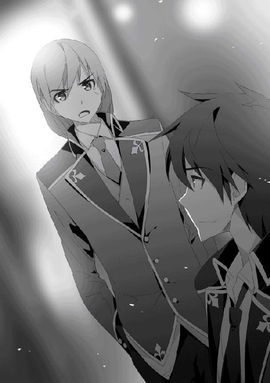
素直ではなくとも彼なりの激励を受け、俺は言葉ではなく握り拳を振り上げることで答え、改めて決闘場へと足を踏み出した。
会場は既に熱気に包まれていた。
緊張はしないが、観客の喧騒に当てられていやがうえにもモチベーションが上がってくる。
『さぁさぁここで本日の主役！ 本年度が開始されてから幾度となく勝負を挑まれ、これまで常勝無敗！ 間違いなく一年生の最強格はこの方！ リース・ローヴィスのご登場です!! 実況は、最早一年生の間ではお馴染みこのサラドナ・マクシがお送りいたしまぁす!!」
実況席の言葉に会場が更なる盛り上がりを見せる。サラドナ嬢の勢いある発言は慣れたものだが、相変わらず飛ばしてるなぁ。
『今回の決闘における解説は何と、我らが学校長、ディアス様に務めて頂けるとのことです！』
『皆さん、今日はよろしくお願いします』
解説席には見た目は若いイケメンの教師が座っていた。彼は俺の視線に気が付くと、朗らかに笑いながら手を振ってくる。どうやら学校長もそれなりに注目している様だな。
「ってちょっと待て。なんで『アンタ』がそこにいるんだよ」
解説席に視線を向けた俺は、そこに予想外すぎる人物の存在を発見して目を見開いた。
『なお、解説席には学校長の他にスペシャルゲストをお招きしているのですが......』
実況席のサラドナが、学校長の隣に座る『小柄な少女』の姿に視線を向けながら言葉を迷わせた。
『......えっと、学校長が直々に招待なさったというお話は聞いているのですが、果たしてどちら様なのでしょうか』
『儂か？ そうじゃな。とりあえず謎の美少女ということにしておけば問題ないぞ』
『いえ、美少女なのは誰の目から見ても一目瞭然なのですが......少々年が若すぎる様な気が』
だよなぁ。だって見た目幼女だもんな。
口調だけで分かる人には分かると思うが、解説席に座っているもう一人は、大賢者であったのだ。もっとも、彼女が大賢者であると知っているのは、この決闘場には片手指の者しかいないであろう。
『それを言えば、お主らの学校長も見た目は若造じゃろうて』
『いえいえ、学校長は長寿族ですから見た目が素晴らしいイケメンなのは理解できるのですが......もしかして貴方も？』
『いんや、儂はエルフじゃないぞ』
『......学校長』
実況が縋るような目で〝すぺしゃるげすと〟を呼び寄せた張本人に助け船を求めた。
『安心してください。彼女は今回の決闘における解説としてはこれ以上に無いほどの適任です』
『あ、いえ。そういうことではなくてですね』
なおも問いかけようとする実況だったが、学校長は笑みを浮かべるだけでそれ以上は答えなかった。困り果てた実況だったが、そこへ婆さんが言葉を挟んだ。
『細かいことは気にせんほうが楽じゃぞ。それに、おぬしの仕事は儂に関する実況でなく決闘の実況じゃろう』
『......言われてみればそうですね！』
今ので納得するんだ!?
『では改めまして！ 今回の解説には学校長とゲストとして謎の美少女ちゃんをお呼びしております！ お二人とも、本日はよろしくお願いします!!』
『ほっほっほ。期待に添えるように頑張る所存じゃ』
まぁ、あの容姿で『大賢者』であると明かされても誰も信じないだろう。学校長の言うとおり、彼女ほど俺の解説に適した人物もいないしな。
『さてさて、ここでリース選手の反対側から此度の挑戦者であるミュリエル・ウッドロウの入場です！』
実況、解説席が盛り上がったところで、俺の闘う相手が現れた。
「..................」
決闘場の壇上に上がってくる姿からは、特に緊張した様子は見られない。
ミュリエルは俺の眼前で足を止めて、解説席を一瞥すると言葉を投げかけた。
「......ねぇ、一つ質問していい？」
「大方予想はついてるが、なんだ」
「......学校長の隣に座っている少女は......もしかして」
「ああ。あの年齢詐称の美少女ちゃんが、件の大賢者様だ」
「話には聞いていたけれど、本当にあの姿。どうやってあの外見を保っているのか、興味がある」
「あ、気にするところはそこなのね」
「でも、今日の本題は別」
ミュリエルは雑念を振り払うように目を閉じ、そして次に目を開いたミュリエルの表情には強い意志が感じられた。
「今更だけれど、私の挑戦を受け入れてくれてありがとう。そして、ごめんなさい。今日で貴方の連勝記録は止まるわ」
「随分と自信があるみたいだな」
「無ければ、この場に立っていない」
淡々と、だが虚言では到底込められない力強い言葉だ。むしろ、そう出なければこちらとしても味家がなさ過ぎる。
「それと、決闘が始まる前に一つだけ言っておく」
「ん？」
「私は興奮すると〝人が変わる〟らしい。自覚は無いけど、師匠がそう言っていた。だから、あんまり驚かないで欲しい」
ミュリエルの言葉の内容を理解する前に、どうやら時間が来てしまったようだ。
『さぁ、両者揃ったところでそろそろ開始したいと思います。本日の審判は一年ノーブルクラスの担任教師であるゼスト先生です。──ではゼスト先生！ 開始の合図をよろしくお願いします!!』
実況に促される形で、ゼストが壇上に上がり俺たちの間から一歩離れた位置に立った。
「ってなわけで、そろそろ始めるぞ。両者共に準備はいいか？」
「いつでもいいぞ」
「問題ない」
俺たちの言葉を受け取ったゼストは頷くと、手を振り上げた。
「んじゃぁ──開始!!」
──さぁ楽しい楽しい魔法の時間、始まりだ!!
◆◆◆ リース ◆◆◆
──少なくとも、これまでリースが行ってきた決闘には一種の様式美があった。
相手に先制攻撃をさせ、それを防壁で防ぐことによって己の魔法が堅牢であるかを知らしめるというもの。
もちろん、今回の決闘も開幕と同時にその一幕が繰り広げられると観客の大半は思っていた。
だが──。
「──反射、投影」
開始早々、一歩を踏み出したリースの背中に二枚の反射力場が投影された。観客の大半が予想外の光景に思考が追いつかない間にも、リースは更に一歩を踏み込む。
「『加速』!!」
反射が勢いよく閉じられ、その間に圧縮された魔力が急激に圧縮される。
ただそれは、気まぐれでの行動ではない。ミュリエルの〝底知れなさ〟を警戒したがゆえの先制攻撃だった。
「いく──」
「......『炎壁』」
「ぞぉぉぉ──ッ!?」
リースの躯が圧縮魔力が炸裂した衝撃で加速しきる直前に、彼の眼前に炎の壁が出現した。ミュリエルが投影した、地面から炎を壁面状に出現させ、相手の行動を妨害する火属性魔法だ。
「あちっ、あちちちちっ、熱っつあぁあぁぁぁ!?」
突如として発生した炎の壁に突っ込み、リースは悲鳴を上げた。熱さのあまりに体勢を崩し、加速のために投影していた反射力場も解除され炎の壁から転がりながら抜け出すこととなった。
加速で最高速に乗っていれば、熱さを感じる前に炎壁を突破し、そのままミュリエルへと肉薄していた。
『おぉぉおっと！ 早くも決着がつくかと思われたリース選手の先制攻撃を、ミュリエル選手が見事に防いだぁぁぁ！』
『加速は、発動してから最高速に達するまで僅かに時間差があるからのぉ。あの女子、その辺りをきちんと理解しておる』
『何と、あの魔法にはそんな弱点が！』
『ただ、時間差と言うたがほんの僅かな間じゃよ。起こりを見切らんとまず狙えんな』
人嫌いの世捨て人のくせに、決闘が始まって早々に解説の仕事をきっちりこなす大賢者である。
出鼻を挫かれたリースは熱によるダメージに耐えどうにか立ち上がるが、ミュリエルは彼が完全に立て直す猶予を与えなかった。
「大地戦槍」
リースの足下から地属性の槍が出現。咄嗟に避けるものの、体勢を整える前だったために無理矢理な形での回避。そしてそこえ更なる大地戦槍が襲いかかる。
「跳躍！」
このままでは気勢を握られると判断したリースは反射力場を投影して蹴り飛ばした。増幅し反射した衝撃が彼の躯をその場から吹き飛ばす。
リースは更にもう一度、空中で跳躍を使い、体勢を立て直してから地面に着地。
「炎弾」
着地のタイミングを狙いミュリエルが魔法を展開するが、リースが即座に展開した防壁に衝突して霧散する。
己の攻撃が防がれたというのに、ミュリエルは特に表情を変えなかった。むしろ、防がれるのが当然とばかりに頷いた。
「初手の反撃から一気に流れをこちらに引き込もうとしたけど、そこまで甘くなかったみたい」
言葉はあくまで淡々と。それがむしろ、状況をどこまでも落ち着いて分析できる冷静さの持ち主であると証明しているかのようだ。
今の言葉をそのまま信じれば、リースの先制攻撃はミュリエルにとって想定内の行動だったことになる。
まだ決闘が始まり、僅かな攻防を終えたばかりであったが、リースは認識を改める。
（魔法だけじゃない。ミュリエル自身も相当に厄介だな）
炎壁も大地戦槍も、魔法使いが直接投影するのではなく、指定した離れた位置の地面に投影する魔法だ。投影の開始から発動まで、直接投影して発射するタイプの魔法よりも遅れが生じる。リースが加速を使ってから魔法を投影したからでは間に合わなかっただろう。
だが、発動のタイミングを見切ってしまえば話は別だ。
大賢者の説明したとおり、加速には幾つかの段階に分かれている。
反射の力場を二枚。
その後に魔力の圧縮。
そして魔力が解放された衝撃での超加速。
つまり、最後の段階を経る前に妨害できれば、加速を潰すことができるのだ。
ミュリエルはこれを踏まえ、これまでの決闘でまだ一度も行ったことの無い先手を使うと読み切っていたのだ。
しかし、出鼻を挫かれたリースは意気消沈するどころか、逆に興奮気味に吠えた。
「いいねいいねぇ、そう来なくっちゃなぁ！」
リースは獰猛な笑みを浮かべると、加速はなく跳躍を投影。足下に展開した反射力場を踏み抜き、一足でミュリエルへと急接近した。
加速は超速を得られる代わりに僅かばかりだが時間を要する。けれど跳躍は加速ほど速度は得られない代わりに加速よりも初動が素早い。
更にもう一点、跳躍は加速に勝る長所があった。
「大地隆起」
己に急接近してくるリースに対し、ミュリエルは魔法を投影して迎え撃つ。
「もういっちょ跳躍！」
相対的に急接近する大地の壁に対して、リースは更に魔法を投影。ほぼ直角の角度で上空へと逃れた。
「更に跳躍！」
空中で三度目の投影。野鳥が地上の獲物を狙うよう、リースの躯が一直線にミュリエルへと急降下した。
加速は直線的な速度こそ驚異的だが、それだけ小回りが利きにくい。一方跳躍は、最高速こそ劣るがそれだけ小回りが利き、今のような急激な方向転換──自在な空中機動が可能なのだ。
「手甲！」
「大地戦槍」
リースの振るう防御力場の拳とミュリエルが生み出した大地の槍が激突し、破砕音が決闘場に響き渡る。
大地戦槍は砕けたものの、その衝撃で跳躍で得た勢いを失い、リースは自由落下する。
「炎槍」
そこへミュリエルが追撃を仕掛ける。リースはこれをそのまま手甲で防いだが、足場の無い空中では踏ん張りもきかず炎槍の勢いに押されて弾き飛ばされた。
「ちっ、そう簡単に接近はさせてくれないか」
「当たり前。貴方に近接戦闘を挑むほど私も愚かじゃない」
そりゃぁ、これまでの決闘でさんざん接近戦を見せつけてきたからな。警戒されて当然だ。
『......えっと。私の見間違いでなければ、ミュリエル選手は開始当初から火属性魔法と地属性魔法を使っていませんか？』
『見間違えではありませんよ』
『学校長？』
『彼女は──ミュリエル・ウッドロウは、火属性と地属性の魔法に適性を持った二属性持ちです』
実況の疑問に対して答えた学校長の言葉に、観客席に動揺が広がった。
一年生には四属性持ちであるアルフィという超希少な魔法使いが存在しているが、それほどではないにしろ希少な二属性持ちの魔法使いが在籍していたのだ。動揺もひとしおだった。
ただ、観客の様子など、当の本人たちには関係なかった。
「ただの魔法オタクと思いきや、やるじゃねぇかミュリエル」
「魔法オタクであるのは否定しない。その興味が魔法だけではなく魔法を使う人間にまで広がっているだけ」
「だったら、もっと興味が湧くようにしてやるよ」
「ん、楽しみ」
申し合わせたように二人は頷き、再び魔力を練り始めた。
──決闘はまだ、始まったばかりだ。
◆◆◆ アルフィ ◆◆◆
動揺が走る観客席の中で、比較的冷静に決闘を観戦している者もいた。前もってリースからミュリエルが二属性持ちであることを知らされていたアルフィもその一人。そして、彼の側で観戦していたラトスとカディナも同じであった。
「......凄いね。ローヴィスの接近を上手い具合に躱してる」
「おそらく、これまで行われてきた決闘の中で、リース・ローヴィスとアルフィ・ライトハートを除けば彼女が一番の巧妙者でしょうね」
多少の驚きはあったものの、二人の関心はミュリエルが二属性持ちであったことよりも、それを操りリースを翻弄する魔法の練度に集中していた。
どちらも、これまでの既成概念を覆すようなリースの魔法を攻略しようと、常日頃に頭を悩ませている。その為か、二属性持ち程度のことなら短時間で受け入れられる土台が出来上がっていた。
「ねぇアルフィ・ライトハート。この決闘、貴方はどう見ますか？」
「どう、と聞かれてもな。まだ始まったばかりでなんとも」
カディナに問われたアルフィは言葉に迷う。
ただ──、と彼は付け足す。
「お前ら二人の言うとおり、ミュリエルの練度は一年生の中ではトップクラスだろうな。二つの属性をしっかりと操り、制御している。下手すれば両方とも投影が曖昧になって発動すらままならないだろうに」
「僕は水属性だけだから彼女の扱う属性とは無縁だけど、具体的にはどのくらい難しいんだい？ 困難であるのは容易に想像できるけど」
カディナに続けてラトスが更に問いかけると、アルフィは顎に手を当てて唸った。
「明確な言葉で説明するのは難しいな。右手で料理を作りながら左手で勉強する？ いや、右手で数学を解きながら左手で小説を書く？」
「とりあえず、言葉で言い表せないくらいに難しいのは理解できた」
「......私としては、そんな難しいことを四つ同時に行っている貴方に戦慄しますね」
「リースの奴によく言われるな」
『彼にだけは言われたくはないだろうな』と思うと同時に、『彼の言い分ももっともだ』と複雑な感想を抱く二人である。
結局、どちらも常識外れな魔法使いという結論に至る。
「ところで、お前たちそんなに仲良かったっけ」
普通に会話しているラトスとカディナに、疑問を抱くアルフィ。少し前までは余所余所しい感じがあったはずなのに、いつの間にか気さくに言葉を交わしている。
「言われてみればそうですね。何ででしょうか」
「いや、僕に言われても。......でも、前ほど話しにくい印象は無くなったかな」
互いに顔を見合わせ、揃って首を傾げる二人。傍目から見れば美男と美女が同じ動作をしており、非常に〝絵になる〟光景だった。しかし、それを見るアルフィも首を傾げた。
（おかしいな。男女的な色恋沙汰の気配を欠片も感じない）
仲の良い同性友達の一シーンを見ているような気分だった。
確かにラトスは男子にしては華奢であり、どちらかと言えば女性的な顔立ち。アルフィは、ラトスが女顔であることを理由に己の感じた違和感を納得させた。
──この場にリースがいれば、盛大に顔を顰めていたに違いないが、彼は決闘場の中央で闘っている最中であった。
それはともかく、アルフィは決闘場での闘いに意識を戻した。
リースは跳躍を駆使しながら何度も接近戦を挑もうとするが、その都度ミュリエルに出鼻を挫かれている。加速は初動を潰されることを嫌ってか、開幕に一度使って以降は投影していない。ただミュリエルも、どうにかリースの体勢を崩して追撃を行うが、彼の防壁に阻まれて有効打を与えられていなかった。
戦況は五分五分。どちら共に相手へ目立ったダメージを与えられていなかった。強いて言えば初手でミュリエルが使った炎壁によって、リースが軽く炙られた程度だ。
リースの決闘でこれほどまで伯仲した闘いはなかった。観客席の生徒たちは固唾を呑んで戦況を見守る。
ただ一人、アルフィだけが険しい視線で闘いを見ていた。
「ライトハート、何か気になる点でもあるの？ さっき分からないって言った割に、今は難しい顔をしているけど」
「ちょっと、な」
ラトスの言葉に返答を濁すアルフィ。
──その内心には懸念があった。
◆◆◆ ラトス ◆◆◆
要領を得ないアルフィの言葉を疑問に思いつつ、ラトスが決闘に視線を戻す。
リースは跳躍を使って急接近。ミュリエルはそれを大地戦槍で迎え撃つと、リースは更に跳躍を使って回避。更にもう一度跳躍を使って軌道を変え、ミュリエルへと突撃。だが、ミュリエルはそれを地属性魔法で迎え撃ちリースの勢いを相殺。続けて火属性魔法でリースを吹き飛ばし間合いを外す。
──その時になって、ラトスは違和感を覚えた。
「......あれ？」
「どうかしましたか？」
「いや、どうかしたわけじゃないんだけど......」
漠然とした違和感に、ラトスはしばらく闘いの推移を見守る。最初はただ単に白熱した闘いだと思っていたが、少し視点を変えて眺めているとあることに気が付いた。
「──最初と闘いの流れが同じ？」
リースが始めに跳躍を使ってからミュリエルが火属性魔法で彼を吹き飛ばすまで。その中間行程に大きく差異はあれど、一連の攻防における最初と最後の流れが決闘の開始に見せた攻防とほとんど同じなのだ。
偶然の一言で片付けられない違和感だった。
「気が付いたか」
「──ッ！ ライトハート君も？」
「当たり前だろ。俺がどれだけリースと手合わせしたと思ってんだ」
ラトスの疑問にアルフィが険しい表情で答えた。
「ミュリエルの奴。おそらく自分の立てた仮説を検証するために、あえて同じ状況を作ってる。そしてリースも、それを理解した上で付き合ってる」
「ど、どういうことですか？」
「......ここまで来たら、お前らには教えておいてやる。多分、この決闘でバレちまうだろうからな」
ラトスとカディナの疑問を抱いた視線を受け、アルフィが小さく息を吐いた。
「疑問に思ったことはないか？ リースがどれだけ魔法を投影しても魔力切れを起こさないことに」
──そして、アルフィの口から語られたリースの『特性』は、二人の既成概念を覆すような内容であった。
◆◆◆ ラトス 終 ◆◆◆
──手の内バレてるな、これは。
何度目かになる接近を防がれてから、俺の中にあった疑惑は徐々に確信へと至っていた。もちろん、俺もそれを見越した上であえてミュリエルの手管に乗っていたのだが。
「ちょっと試してみるか」
最後の証明を行うために、俺は手を打つ。
歯を噛みしめ、心身に活を入れた。
そして──。
「加速!!」
背後に反射力場を二枚具現した。
「炎壁」
まるで申し合わせたようにミュリエルが炎の壁を投影。速度を得る直前の俺を炎の壁が阻んだ。
「あっづぁぁぁぁぁっっっ!!」
全身を灼熱が覆い激痛が走る。決闘の開幕時にはこの時点で加速の制御を手放してしまったが──。
「──ッッッ!?」
「づぁらぁぁぁぁぁぁぁぁっっ!!」
文字通り焼けるような痛みを気合いで耐え抜き、加速で集めた圧縮魔力を解放。
俺の躯が炎の壁を突っ切り、加速で得た勢いのままにミュリエルへと突貫する。
まさかこんな根性技で炎壁を突破するとは思っていなかっただろう。ミュリエルの息を呑んだ表情が窺えた。
「手甲！」
右手に魔法を投影。加速の勢いが乗った今なら、大地戦槍でも大地隆起であろうとも粉砕し、その先のミュリエルを穿てる。
「──でも、その魔法を使った時点で貴方の失敗は揺るがない。『地震波』」
地震波──大地を波打たせるだけの魔法。炎壁と同じく相手の動きを阻害する魔法なのだが。
ミュリエルが選択したのは、迎撃でも防御でもなく〝回避〟。彼女の足下に魔法陣が投影すると、その付近の地面が波打ち、彼女の躯を一気に真横へ押し出した。
「ちょっ、おぃぃぃぃっっ!?」
加速は最高速こそ出るが、速度に乗ってしまうと急な方向転換ができない。ミュリエルが横に移動してしまったために目標を失い、俺は勢いそのままになにも無い空間を突っ切ってしまった。
「うぉお、やべぇっ！」
このまま加速の勢いを継続すると壇上から飛びだし場外負けになってしまう。俺は慌てて地に足を付けて急ブレーキを掛けた。
靴底を地面に擦りつけながら場外に出る前に止まることができたが、そこへミュリエルが追い打ちを掛ける。
「拡散岩砲」
「──ッ、いだだだだだッ！」
咄嗟に手甲を纏った右腕で頭部を守るが、それ以外の部分は広範囲に発射された石の礫に晒されて痛みが走った。体を鍛えていない魔法使いだったらこの時点で戦闘不能に陥っていただろう。
幸いに、日々の鍛錬で頑強度を上げていた俺の躯は耐えきったが、そう何度も食らいたいとは思えない。
岩の散弾が途切れたのを見計らい、俺は手甲を解除。
それから、大きく息を吸い込んだ。
「拡散岩砲」
ミュリエルが同じ魔法を投影。
「二度目は喰らうかよ！ 防壁！」
両手を前にかざして六角形の防壁を展開。拡散放射された岩の弾丸を防ぐ。広範囲に拡散する魔法の一発一発は威力が低い傾向にある。至近距離であるならともかく、距離が離れていれば防壁で簡単に防げる。
「ふぅぅ......痛たたたた」
防壁でミュリエルの魔法を防ぎつつ、その前に喰らった拡散岩砲の痛みを呼吸を整えて緩和させる。
ジーニアスに来て、他の生徒と『決闘』を何度も繰り広げてきたが、真面に攻撃を受けたのは初めてかも知れない。
今の攻防で確信に至った。
ミュリエルの奴、間違いなく俺の『特性』を──。
「────ッ」
──ゾクリと、俺の背筋に震えが走った。
半透明な防壁の先に佇む人物を見て、俺は目を見開いた。
「......くくくっ」
ミュリエルが──笑っていた。
いつもは眠そうな目が今は強く開かれ、ギラギラとしたものへと変わっていた。普段は最低限の言葉しか喋らない口は、その端を大きくつり上げ三日月を作っている。
時折見せる微笑とは一線を介する、狂気すら孕んでいそうな強烈な笑みだった。
防壁を解き、俺はミュリエルと対峙する。
彼女は一瞬だけ顔を伏せてから。
「あはははははははははははははははははははははっっっ!!」
仰け反るようにして天を仰ぎ、両手を広げて高らかに笑った。
「これまで半信半疑だったけれど今確信した！ 私の仮説は正しかった!! まさか貴方のような常識外れが存在していたなんて考えもしなかったわ!! あははははははは！」
勢いよく躯を反らした拍子に大鉄球がたゆゆんと揺れたが、それを凝視している余裕は俺には無かった。それよりも、彼女の変貌ぶりに度肝を抜かれていた。
──私は興奮すると〝人が変わる〟らしい。
決闘が始まる直前の言葉を思い出したが。
「〝人が変わる〟って、比喩じゃなかったのかよ!?」
興奮してテンションが上がるってレベルじゃねぇぞ。しゃべり方まで変わってるぞ！
俺の顔が引きつらせている中、ミュリエルは一頻りに笑ってから小さく呼吸を整える。
「......ずっと疑問に思っていた」
半ば独白するように、彼女は語り出した。
「いくら手段を駆使して防御魔法の魔力効率化を図っても、それは結局他の属性と消費量の釣り合いが取れるようになる程度。あれだけ頻繁に魔法を駆使していれば直ぐに魔力の枯渇を引き起こす。けれど、これまでの決闘の最中、貴方は魔力枯渇を起こす気配がまるで無かった」
そして──ミュリエルの口から語られるのは、俺の〝特性〟の真実であった。
◆◆◆ ラトス ◆◆◆
少しだけ時間を遡る。
アルフィが口にした『リースが魔力切れを起こさない』という言葉を聞いて、ラトスは考え込んだ。
「......言われてみればそうだね。ローヴィスは常に全力で魔法を使っていたけれど、一向に魔力枯渇を起こさなかった」
自分とリースが闘ったとき、彼は己の放った魔法をことごとく防ぎ、そうでありながら終始魔力の投影に陰りを見せなかった。
魔力の極端な消費は心身に大きな負担を掛ける。特に投影の精度に与える影響は顕著だ。それを極力減らすのもまた魔法使いの腕の見せ所なのだが、それにしてもリースの動きのキレは最初から最初まで一定だった。もちろん、鋭いという意味でだ。
それに異を唱えたのはカディナだ。
「ですが、リース・ローヴィスは入学当初に授業の一環で行った魔力測定の際に、魔力測定の水晶は彼が高い内包魔力を宿していることを示しました」
アルフィには届かずとも、あの時に見せた水晶の輝き──内包魔力の量は、ノーブルクラスの中でもトップクラス。間違いなくカディナクラスの内包魔力に匹敵していた。
加えるなら、魔力に限らずリースの体力は一年生の中で間違いなく随一。純粋な体力勝負ともなれば、リースに勝てる者は学年内にはいなかった。
二人の言葉を受けて、アルフィは肩を竦めた。
「体力に関してはそうだが、内包魔力に限って言えばリースの保有する量は一般人のそれと同等か劣るほどしかない」
「で、ですが現に魔力測定の時は......」
「言い方は非常に悪いが、アレは〝ペテン〟だ」
「......まやかしですって？」
眉を顰めるカディナだったが、アルフィは更に続ける。
「言い方が悪いといったろ。ズルをしたわけじゃない。ただ、アレが純粋にあいつの魔力ではなかったってわけだ」
魔力測定に使用した水晶は最初、ほんの小さな輝きすら発していなかった。だがその直後には強烈な輝きを発しその魔力量に周囲が驚愕した。
「どちらも嘘じゃないのさ──っと、リースの奴滅茶苦茶だな」
そうこうと話している内に、決闘場で闘っているリースが加速を使用。妨害として投影されたミュリエルの炎壁を強引に突破し、彼女に肉薄する。
「またなんて無茶を!?」
「リースじゃなきゃ、今ので敗北してただろうな」
ラトスが悲鳴を上げ、アルフィが冷静にコメントを付ける。
手甲を投影し、加速で急接近してくるリースに対し、ミュリエルは地震波で素早く移動してそれを回避する。
「上手い！」
思わずミュリエルの技量を賞賛するカディナ。単純に地震波を投影すれば、ミュリエルはその場で足を取られて転倒していただろう。それを微細な魔力制御で規模を調整し、緊急回避の手段として昇華したのだ。
目標を失ったリースは加速の勢いのまま場外に飛び出そうになったが、あわやという所で地に足を擦りつけて急ブレーキ。
そこへ、ミュリエルが拡散岩砲で追撃する。
ラトスとカディナは、リースはこれを防壁で防ぐだろうと反射的に考えた。
だが、アルフィは舌打ち混じりに呟いた。
「確実にバレてるな」
厳しい視線を向けた先で、リースは防壁ではなく元々腕に投影していた手甲を眼前にかざし、顔への直撃だけを防ぐ。体の至る所に岩の弾丸が直撃し、観客席からでも分かるほど、リースは激痛に表情を歪めた。
だが次にミュリエルが放った拡散岩砲に対しては防壁を展開し全てを防ぐ。
カディナが目を見開いた。
「リース・ローヴィスが......直撃をもらった？」
「なにが起きたんだ？ 今のはローヴィスなら防げないタイミングじゃなかっただろ......」
戦慄する二人に対して、アルフィは端的に答えを述べた。
すなわち。
「魔力切れだ」
「「え？」」
アルフィの口にした言葉の意味を、直ぐには理解できなかった。
「で、でもローヴィスは次の拡散岩砲はちゃんと防壁で防いだ！ 魔力切れを起こしていたならアレすら防げなかったはずだ！」
いち早く思考の空白から立ち直ったラトスが捲し立てる。
「通常、魔力を枯渇するほど消費した場合、魔力を回復させるのには一晩掛かります。それを僅か一呼吸で回復するなんてあり得ない。考えにくいですが、単純にリース・ローヴィスの投影が間に合わなかったと考えた方がまだ納得できます」
「じゃあ聞くが、どうして魔力を回復するのに一晩も掛かるんだ？」
カディナの魔法使いの常識を持ち出した論に対して、アルフィは逆に問いかけた。
「なにを馬鹿な。魔法使いは外気中の魔力──外素を取り込んで内包魔力を回復しますが、外素には様々な属性の魔力が溶け込んでいます。ですから、魔法使いは外素の中から己の適性に則した魔力を取り込まなければなりません」
魔法使いの魔力回復量は、空気中から外素を取り込む能力で左右されるが、ただ単純に取り込めばいいわけではない。カディナであれば風属性の魔力を。ラトスであれば水属性の魔力を外素から取り込まなければいけない。
カディナのあまりに初歩的な解説を聞いて、ラトスはハッとなった。
「............ちょっと待って、じゃぁローヴィスはどの属性の魔力を体内に吸収してるんだ？」
「それは......？」
即座に答えを述べようとしたカディナだったが、言葉に詰まった。
代わりに答えたのは、全てを知るアルフィだ。
「無属性であるあいつにとって、適した属性は無い。だが逆を言えば、どの属性の魔力であっても等しく扱えるんだ」
リースは特定の属性魔力を取り込む必要は無い。
それが魔力であれば、どんな属性であっても体内に取り込み、内素として扱うことができる。
「『無属性』のリースはどれだけ魔力を消費しても、ほとんど一呼吸で内包魔力を最大まで回復できる。それが、あいつのイカれた『特性』だ」
アルフィが結論を口にしたちょうどその時、ミュリエルが狂笑の声を発した。
「「「......誰、あれ？」」」
三人は揃ってどん引きした。
──重大な事実が発覚したはずなのに、ミュリエルの変貌が全てを持っていった感のある一幕であった。
◆◆◆ ラトス 終 ◆◆◆
「よくよく考えれば当然よね。無属性──防御魔法は魔力を特定の属性に変異させることも無く、そのままに扱っている。つまり、どの属性であっても等しく扱える。だったら、特定の魔力を取り込む必要は無い。外素を全て取り込めば良いんだもの。単純に考えて無属性魔法使いの魔力回復量は常人の四倍ってことになるわ」
「凄ぇな。独自でその答えに辿り着いたのは婆さんを除けばおまえが初めてだ、ミュリエル」
変貌した目の前の魔法使いが導き出した答えを、俺は素直に認めた。
無属性の魔法使いである俺は、それが外素であればどんな属性であっても体内に取り込み、内素魔力として自由に扱うことができる。
そして俺は、大賢者の教えの元に鍛錬を重ねたことによって、どれほどに魔力を消費したところで一呼吸さえあれば魔力を全快することができる。
「素直に認めるのね」
「バレるのが早いか遅いかの違いだと思ってたんでね。ただ、まさかこんなに早く看破されるとは思ってなかったが」
アルフィは仲良くなる切っ掛けの大喧嘩から、三年近くは全く気が付かなかったからな。子どもの頃の思考能力では仕方が無いのかも知れないが、入学してから半年も経たずに解明されるのは予想外だった。
「これが世間に知れ渡ってみなさい。無属性に対する見方が覆るわ。防御魔法に関する研究も盛んになってくるでしょうね」
どれほど燃費が悪かろうが、消費する側から速攻で回復していくのだ。無理もないだろう。
「ただ、惜しむらくはあなたの内包魔力の低さ」
心底残念そうにミュリエルは首を振った。
「せめてあなたが平均的な魔法使いと同じ程度の内包魔力を持っていたら、と思うわ」
「......やっぱり、そこもバレてたか」
先ほどの拡散岩砲。一射目を防壁ではなく手甲で防いだのは、あの瞬間では俺の魔力がほぼ底を突いていたからだ。
手甲を解除すれば、新たな防壁を投影する魔力がなく、一呼吸するまで完全に無防備のまま魔法を喰らっていた。だから手甲で最低限の防御を固めて後は我慢するしかなかった。
「私の見立てでは、あの反射を使った空中機動は連続で三回まで。あの超加速の魔法は一度使えば、後は防壁とそれを応用した魔法しか使えない」
ミュリエルはこの決闘が始まってからずっと、俺が跳躍を連続で使用するまでは牽制に徹し、三回使用に達した瞬間に本命の攻撃を仕掛けてきた。
最もそれに関しては、ミュリエルが俺の『特性』を本当に理解しているのかを探るために、あえて付き合っていた面もある。
加速は反射を二つ同時に使用している上に、圧縮するための魔力も必要なために、実質反射三回分を同時に使用する計算だ。
魔法使いは肌呼吸と肺呼吸で外素を取り込み魔力を回復するが、どちらが良いかと言えば断然に後者だ。俺の場合も同じなのだが、逆を言えば大きく呼吸をしなければ魔力の回復は微々たるもの。その間隙を狙われたのが先ほどの拡散岩砲だった。
「まぁ良いさ。バレたらバレたで構わねぇよ。だったら、跳躍も加速も使わずに突っ込めば良いだけの話だ」
俺は右腕に手甲を投影し、左手には常に防壁を展開できる様に構えた。機動力の減少は否めないが、ミュリエルが俺の魔力切れを狙うのならばなるべくその隙が起こる回数を減らすしかない。
「さぁて、仕切り直しといくか！」
俺は足に力を込めて駆け出す。
ミュリエルは魔力の技量こそ学年ではトップクラスだが体力の面ではそれほどではない。地震波での回避も緊急用であろうし、常時使用は難しいだろう。純粋な体術で接近するのは難しくない。
「炎壁！」
ミュリエルが俺の進路を阻もうと炎の壁を展開するが、軽く横に飛んで回避。加速では速度があり過ぎて突っ込むこと形になったが、そうでなければ見てからでも避けられる。
続けて拡散岩砲、炎槍と連続で投影されたが、どちらも防壁で防いだり手甲で打ち払っていく。
彼我の距離は徐々に縮まっていく。
だというのに、ミュリエルの表情には焦りの気配が無い。ただただ笑みを浮かべながら、攻撃魔法を繰り返し投影してくるだけだ。
なにか策があるのか。
──だったら、それごと凌駕するまでだ！
残り数歩で拳が届く距離になり、ミュリエルは両手を眼前にかざし、手のひらをこちらに向けた。
この距離だったら、下手に避けるよりも強引に間合いを詰めた方が早い。素早く決断した俺は防壁を投影した。
だが、彼女の両手から投影された魔法陣を目にした瞬間、俺は驚く。
それは、火属性の魔法陣ではない。
それは、地属性の魔法陣でもない。
彼女がこの決闘で初めて使用した、第三の属性。
「『爆裂』」
ドゴンッ!!
至近距離で発せられたのは〝爆炎〟。
予想を遙かに超えた衝撃が防壁に叩き付けられ、強引に踏み込もうとしていた足が止まり逆に押し返された。バランスを崩さなかったのは少ない僥倖だった。
彼女の攻撃はまだ終わらなかった。
どうにか転倒するのを踏みとどまった俺だが、そこへミュリエルが新たな魔法を投影する。
「『徹甲弾』！」
本能がミュリエルが投影した魔法に最大限の危険を感じる。だが衝撃から立ち直れない俺は回避できるはずもなく、防壁に全力で魔力を送り込むことしかできなかった。
ミュリエルの投影した魔法陣から放たれたのは、握り拳ほどの菱形をした礫。岩弾と比べれば見た目の限りでは幾分か劣る。
しかし、その菱形の礫が防壁に衝突した瞬間に、俺は自身の本能が感じた危険信号の意味を理解した。
菱形の礫が炸裂し、俺の防壁を貫いたからだ。ガラスが割れるような音を響かせながら防壁が崩壊。至近距離で巻き起こった爆炎に身を焼かれながら、俺の躯が吹き飛び宙を舞った。
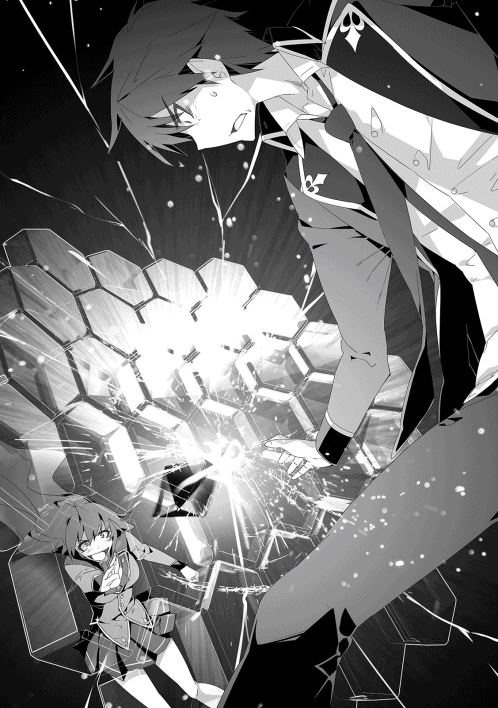
◆◆◆ 学校長 ◆◆◆
その光景に、誰もが言葉を失った。
爆炎の直撃を受けたリースの躯は文字通り吹き飛ばされ、少しの滞空を経てから地面に叩き付けられた。
そして──。
『な、ななななな何と！ 何と何と何とぉぉぉぉぉぉ!? これまで上級魔法すら揺るぎなく防いできたリース選手の防壁が破られたぁぁぁぁぁ!!』
決闘場で起こった爆炎のように、観客席に火が付いたような喧騒が巻き起こった。
これまで数多の魔法を防いできた無敵鉄壁と思われていたリースの防壁が打ち破られたからだ。その反応も当然であろう。
「ほぅ......」
大賢者は吹き飛ばされた弟子の心配よりも、それを成し遂げたミュリエルを見据える。愉快な感情を隠さずにクツクツと笑った。
『で、ですが。ミュリエル選手が投影した魔術はいったい何だったのでしょうか。単なる火属性魔法とは些か毛並みが異なるように見えましたが......』
実況が困惑気味に言った。
それに答えたのは美少女ちゃん──大賢者であった。
『『爆炎』魔法じゃよ』
『ば、爆炎魔法？ 火属性魔法ではなく？』
『火属性魔法でもあるんじゃがな。まぁ、細かい説明は学校長殿がしてくれるじゃろうて』
「のぅ？」と話を振られた学校長は、小さな笑みを浮かべて続きを請け負った。
『この決闘が始まって直ぐに、私が『彼女が二属性持ちである』と話したのは覚えていますね？』
『そ、それはまぁ』
『基本的に、魔法使いが扱う属性は地風水火の四属性です。ですが、何事にも例外というのはつきもの。異なる属性を二つ持っているからこそ到達できる段階があるのです』
それがすなわち──複合属性。
本来なら困難とされている二属性の同時制御を昇華させることによって開花する、四属性の埒外。
『ミュリエルは火属性と地属性を、どちらに偏らせることもなく双方高めていった。そうして辿り着いたのが双方の属性を融合させた複合属性──爆炎属性の魔法なのです』
火属性は高い威力を持つ魔法が多いが、実体を持たない分守備に回ると強引に突破されやすい。炎壁をリースが加速で突破したのがその例だ。さすがにアレは強引すぎではあったが火属性の分かりやすい欠点を表していた。
そして地属性は実体を持っているだけに魔法そのものの強度は全属性で随一。その上効果範囲も広い。だが、大半の魔法が地面から発生する上に質量を持っていることから動作が遅く、素早い相手には対応されやすい欠点があった。
だが爆炎属性の魔法は、広い効果範囲に強い衝撃波を伴う高威力の炎を撒き散らすのが特徴。火属性の高威力と地属性の圧力を併せ持った超攻撃的な属性だった。
『で、ではリース選手が防壁で強引に間合いを詰めようとしても』
『爆炎魔法の強い衝撃力の前では、さしもの彼でも足を止めざるを得なかったのでしょう』
語りを終えた学校長は、どこか誇らしげであった。
ただ、疑問はまだあった。
『た、確かに爆炎魔法は強力かも知れませんが、リース選手の防壁はミュリエル選手が最初に投影した魔法は見事に防いでいました。しかし......』
『二つ目の魔法がどうしてリース君の防壁を突破できたのか、ですか？』
それは、決闘を見ていた観客のほぼ全員に共通していた疑問だった。
二発目の魔法──徹甲弾は、爆裂に比べて弱めの爆発だった。それでも人を吹き飛ばす威力を秘めていたのだが、だったら一発目の時点で防壁を破壊できたのではないか。
『その答えは私よりも彼女にしてもらった方が良いでしょうね』
と、先ほどの意趣返しか、学校長が今度は大賢者に目を向けた。
『では、学校長の希望に添えるかの』
大賢者は少しだけ居住まいを正すと、静かに語り出した。
『ま、言うなればリースの使う六角形防壁の欠点じゃよ』
『あ、あの鉄壁と思われていたリース選手の防壁に欠点があったのですか!?』
そもそもハニカム構造とは、穴の空いた六角形の物体を隙間無く敷き詰めることによって材料を削減、軽量化を減らすことを目的としている、この世界には未だ存在していない地球の技術だ。
『リースは六角形構造という特殊な形状をした防壁を投影することによって、魔力消費の効率化と強度を両立しておる』
この世界には無い知識ではあったが、大賢者はリースのつたない説明を元に、その仕組みを完璧に理解していた。
『その本質は、六角形を敷き詰めることによって、外部から加えられた衝撃を六角の面それぞれに分散し、防壁全体に受け流しておるんじゃよ』
一見すれば頑強そのものの防壁であったが、実はただ防いでいるのではなく、衝撃を全体に拡散させることによって一点の崩壊を防いでいたのだ。
『それが、リース選手の防壁の弱点とどう繋がりが？』
『説明は最後まで聞けぃ。まったく、若い者はせっかちでいかんのぅ』
『......いや、美少女ちゃんも十分に若い──』
実況のツッコミを華麗にスルーして、大賢者が続ける。
『結論を述べてしまえば、リースの防壁はその構造特性ゆえに、一点突破の貫通力に秀でた魔法には弱いんじゃ』
六角形防壁の強みは敷き詰めた六角形の防壁全てに衝撃を分散し、一点への負荷を減らすことにある。
『逆に、衝撃を拡散させずに極一点に威力を集中してしまえば、今のように突破できるんじゃよ』
これが、昨晩に大賢者が忠告したリースの防壁に存在していた弱点。
『あの......理屈はどうにか分かるのですが、リース選手は炎槍も防いでいました。あの魔法の貫通力はかなり優れているはずなのですが』
『炎槍程度の貫通力では足りんよ。あの収束率で突破するには、上級魔法並みに威力を上げんと無理じゃ。もっとも、上級魔法ともなれば収束して撃ち出すことそのものが非常に困難になるんじゃろうがな』
爆炎属性魔法『徹甲弾』は、見た目は地味ではあるし部類的にも中級。威力も同等だった。だが、その本質は〝着弾した一点に衝撃を集中する〟という点にあった。
『元々は少ない魔力消費で効率よく威力を出すことを目指して開発された魔法じゃ。通常の防壁であれば防げたんじゃろうが、リースを相手に限れば『対六角形防壁魔法』として機能したんじゃ』
区切りを付けた大賢者は長々とした説明に疲れて「ふぅっ」と息を吐きだす。それから学校長にだけ聞こえるよう小さく語りかけた。
「あの娘には、お主が策を授けたのか？」
「私が行ったのは〝答え合わせ〟だけ。ほぼ全て、彼女自身が辿り着いた結果ですよ」
「あの若さで独自に辿り着くか。いや、若さゆえに柔軟な発想を持つから辿り着けたのか。どちらにせよ、中々に優秀な娘じゃ」
そう答える学校長の表情は、誇らしげであった。
「随分と嬉しそうじゃなぁ、ディアス」
「これが嬉しくないわけが無い」
学校長は、まるで親に褒められた子どものような顔になる。
「なにせ、あの老師が私の愛弟子を賞賛してくれたのですから」
そう──ミュリエル・ウッドロウが師と仰ぐ人物はジーニアス魔法学校の長であるディアス。ミュリエルは、国内で三本指に入る大魔法使いの弟子であったのだ。
「さて、リース君はどう出ますか？ 彼の切り札が『魔力の超回復』だけであるのならば手詰まりですが」
ほとんど無意識ではあろうが、学校長の言葉の中には優越感が混じっていた。師弟の関係ではなかったが、尊敬する大賢者の弟子に己の弟子が優位に立っているのだ。無理もないだろう。
だが、大賢者は返答せずにじっと自らの弟子に視線を送る。そこに悪戯っ子のように愉快な色が混じっているのを、学校長はまだ気が付いていなかった。
◆◆◆ リース ◆◆◆
大賢者と学校長、そして観客の生徒たちが見守る中、壇上のリースはどうにか立ち上がる。爆風と地面に叩き付けられたダメージは低くないようで、その動きは鈍い。
「驚いたわ。中級魔法とは言え、徹甲弾の直撃を受けたのにまだ立ち上がれるのね。今の一撃で倒しきるつもりだったのに」
「や、柔な鍛え方は......してねぇからな」
本気で感心するミュリエルに、リースは絶え絶えに言った。意識は明瞭だったが、それだけに体中から発せられる痛みを感じられ、表情が歪んでいる。それでも二本の足でしっかりと立っていられるのは、普段から勤勉に己を鍛えてきた成果だった。
「こっちも驚いたぜ。爆炎魔法──複合属性を使えるのは予想外すぎた」
「そちらも知っていたの──って、当然よね。あなたの幼馴染みは四属性持ちだもの。複合属性を扱えても不思議ではないか。それに大賢者なら知ってて当然よね」
複合属性の存在こそリースは知っていたが、それは魔法使いとしての経験を長く積み重ね、練達した者のみがたどり着ける領域。まさか十代半ばのミュリエルが扱えるなど考えもしなかった。
「もしかしたらと思ってたが、まさか本当に防壁の弱点まで見破られていたとはな」
「あら、自覚はあったのね」
「優秀な師匠がいてくれたおかげでな」
己の防壁が、貫通力の強い魔法に弱いことをリースは既に知っていた。悔しいことに、現時点で具体的な改善案が見つからない目下の懸念でもあった。
「参考までに教えてくれや。どうして気が付いたんだ？」
「ありとあらゆる手段を試しただけよ。研究者にとって、地道な作業というのは慣れたもの」
切っ掛けがあったわけでも閃きがあったわけでもない。
六角形防壁を模した大地隆起を使い、それに最も効果的な魔法を模索し百にも及ぶ試行錯誤を重ねただけであった。
そして、気の遠くなるような実験回数の上でリースの防壁が貫通性のある攻撃に弱い可能性に辿り着き、次はその証明のために手を打った。
「あなたも不思議に思ったんじゃない？ バルサ・アモスとの決闘で、彼が最後に『大地戦槍・螺旋』を使ったことを」
ミュリエルの言葉は正しかった。
大地戦槍・螺旋は威力と貫通力だけを重視した魔法であり、使い勝手は劣悪だ。それをあの局面で強引に使用したのは、本来なら悪手であった。
だが、あの瞬間にリースは紛れもなく冷や汗を掻いた。
──何故なら、大地戦槍・螺旋はリースが直前に投影した防壁を貫きかけていたのだ。
咄嗟に魔力砲で吹き飛ばしたものの、判断が遅れていれば防壁ごと大地戦槍・螺旋に貫かれていただろう。
「──っ、アレはおまえの仕込みだったのかよ！」
バルサが初見の加速に対応できたのも、ミュリエルが彼に入れ知恵をしたからだ。
ここに来て、リースは己が油断していたことを自覚した。
以前にミュリエルが、自身が二属性持ちであることを明かした。その時に、火属性と地属性の魔法を同時に投影してみせたのだが。
「......俺の前で二属性を見せたのは」
「ええ。あなたの前で自分から見せつけることで、私が二属性を同時に操れることを強く認識させた。三つ目の属性があることを悟らせないために」
あえて自らの手の内を明かすことによって相手の警戒心を意図する方向に誘導する。二つの属性を同時に操ることを強調し、三つ目の属性を持つ可能性をリースの頭から消していたのだ。
彼女の闘いは決闘を挑むもっと前からすでに始まっていたのだ。
──ミュリエル・ウッドロウは天才だった。
それは魔法に限った話ではない。
一つの事柄を追求するための根気。
相手を出し抜き策を弄する知謀。
そして、二属性の魔法を制御し複合属性まで操る能力を兼ね揃えた、まさに魔法使いとしての理想的な土台だ。
「さて、おしゃべりはこのくらいにしておこうかしら。長々と話してあなたのダメージが抜けるのを待っているのは得策ではないもの」
ミュリエルが、両方の手にそれぞれ火属性、地属性の魔法を投影した。
「そろそろ、決着を付けさせて貰うわ」
二属性の魔法が同時に展開され、リースに襲いかかる。跳躍で回避するが。
「爆裂！」
着地と同時に爆炎魔法が投影されリースに迫る。咄嗟に防壁を使おうとしたリースだったが、即座に跳躍に切り替えた。だが、一瞬の判断の遅れで効果範囲から逃げ切れず、爆発に煽られ肌が焼かれる。
「徹甲弾!!」
防壁を使わなかったのは、続けて投影されるだろう貫通力の優れた魔法が飛んでくると予想していたからだ。爆炎を秘めた礫が飛来するが、リースは身を翻して回避。礫は壇上の端まで飛ぶと壇上を覆う結界に衝突して爆炎を発した。
「そうよね。あなたに徹甲弾の貫通力を防ぐ手立ては無い。なら避けるしかないわ。でもいつまで逃げられるかしら！」
このままではじり貧だ。六角形防壁では徹甲弾で貫通されるし、かといって手甲で防ごうにも効果範囲が広く、手甲では防ぎきれない。
幸いなのは、徹甲弾の特徴だ。貫通力に秀でた魔法なのだが、威力を発揮するのは着弾した瞬間であり爆発を秘めた礫さえ避けられればダメージは受けない。
しかし、徹甲弾を警戒していては満足に防壁を展開できず避けに徹しなければいけない。そして、跳躍だけでは爆裂の爆破範囲から逃げ切れずにダメージを負ってしまう。
（......こいつは無理だな）
リースはとうとう諦めた。
そして。
「反射・起動」
右手の内側に、魔法を投影した。
◆◆◆ アルフィ ◆◆◆
観客の熱狂は最高潮に達していた。
ミュリエルが投影する魔法を前にして、リースは逃げ惑うばかりで反撃に転ずることができない。迂闊にミュリエルの懐へ飛び込めば、先ほどの二の舞に陥るからだ。
（まさか複合属性をあそこまで自在に扱える奴がいるなんてな。俺だって複合属性の扱いには苦労してるってのに）
時折巻き起こる爆炎を目に、アルフィは本気で驚いていた。
地球からの転生者であるアルフィは、〝属性の合成〟という可能性には直ぐに辿り着いた。だが、考えついたからといって自在に操れるかどうかは別問題だ。
異なる属性の魔法を同時に投影した上で融合させるのは、四属性を同時に操れるアルフィであっても困難であった。少なくとも、現時点でのアルフィではミュリエルほど自在に操れる段階には到達していなかった。
とは言うが、ミュリエルは生まれ持った二属性に加えて複合属性と、合計三属性の魔法を操れるのに対して、アルフィは通常の四属性を同時に投影できる。どちらが優れているかはまた別問題だ。
だとしても、魔法を操る技量は、アルフィの目から見ても見事としか言い様がなかった。
地属性魔法で地形を操って揺さぶり。
火属性魔法でリースの動きを牽制。
ここぞというときには爆炎魔法でダメージを与える。
目を引くのは魔法の熟練度だけではない。
記録の魔法具でリースのこれまでの闘いを反復し、分析してきたのだろう。作戦の立てようもある。だが、作戦が立てられたからといってそれを実行できるかはまた話が別だ。
リースが魔法を使うタイミング、動く方向、呼吸の合間。それらを読み切り、都度に最適な魔法を選択している観察力と判断力。そして、判断した行動を躊躇無く行える決断力。
実力は間違いなくノーブルクラス。それも最上位に匹敵するだろう。
だがそれでも──。
「ちょっとライトハート！ どうして君はそんなに落ち着いていられるの！ もしかしたらローヴィスが負けちゃうかも知れないんだよ!?」
冷静に闘いの動向を見守っているアルフィとは対照的に、ラトスは大いに慌てていた。
リースが爆炎に煽られるダメージを負う都度に「あぅ......」と悲鳴ともうめきともつかない声を漏らしている。無意識の行為ではあったが、それだけにラトスの焦りが窺えた。
「......なんでお前がそんなに焦るんだ。リースを倒すのは自分だって意気込んでいたんじゃないのか？」
「そ、それはほら......じ、自分の手で倒さなきゃ意味が無いだろ！ ミュリエルに負けたら、僕が倒す意義が薄れる！」
アルフィの冷静なツッコミに対して、ラトスは筋が通る言葉を返した。あまりの動揺具合にいまいち信憑性が感じられないのが悲しいところだが、アルフィは深くは触れなかった。
実のところ、ラトスも己がどうしてここまで動揺しているかを判断しかねていた。口にした内容も、間違ってはいない。本心の一部だ。
だが、それよりも強く思うのだ。
──リースは、誰にも負けて欲しくないと。
「......けれども、それはあなたも同じではないのですか」
あわあわしているラトスほどではないが、カディナの表情にも焦燥が浮かんでいた。彼女もラトスと同じく、リースの打倒を目指している。心情的には同じであろう。
彼女の場合、入学するまでは周囲に敵う相手がいなかった状況から一転し立て続けに己と同等かそれ以上の同世代が出現したのだ。複雑な心境を抱くのは当然。何より、ミュリエルの豹変もそうだが、普段の姿からは想像も出来ないほど巧みに魔法を操る姿に驚かないはずが無い。
そして、アルフィも似たような心境であると考えていた。
「あなたと彼は長年のライバルであるはずです。そんな彼が自分以外の誰かに負けることを許容できるのですか？」
カディナは、以前に朝食の席で見せたアルフィの威圧を思い出した。リースに負け越していることを誰よりも悔しく感じているのは、他ならぬ彼のはずだ。
二人の言葉を受け止めたアルフィは、肩を竦めた。
「アレはあの馬鹿の悪い癖が出てるだけだ」
「......そういえば、前にも同じことを言っていたね」
ラトスが指しているのは、リースがバルサと決闘をしたときのことだ。開始する直前にアルフィが『変な癖が足を引っ張らなければな』と口にしていた。
「それが、バルサ・アモスとの決闘ではなく、今回の場面に出てきてしまっていると？」
カディナの言葉に頷くアルフィ。
「だいたい、俺に勝ち越してる奴があの程度で負けるとか、おまえら本気で思ってんのか？」
壇上ではミュリエルの攻撃を回避し、一向に反撃に出られず逃げ惑うリース。だが、それを眺めるアルフィはやはり、焦りの表情が浮かんでこない。
この会場の中でほとんどの者がリースの敗北を確信していた。
その中で一人だけ、アルフィだけはリースの勝利を確信していた。
「......一つだけ忠告しておくぞ、ラトス」
「へ、僕？」
唐突に名指しされ、ラトスがたじろぐ。
「これから起こることは、お前にとっては非常に業腹ものだ。ある程度は覚悟しておけ」
要領を得ないラトスは首を傾げるが、アルフィは付け足す。
「もっとも、それはお前だけじゃなく、これまであいつと闘ってきた生徒全員にも言えるけどな」
この距離からでも、アルフィの目にはしっかりと映っていた。
──リースの右手の中に集まる銀の光を。
◆◆◆ ミュリエル ◆◆◆
状況は圧倒的に優位に進んでいながら、ミュリエルは見た目ほどの余裕を保ってはいなかった。
流れは確実にミュリエル側にあるものの、一手を間違えれば次の瞬間には簡単にひっくり返ることを理解していたからだ。
リースの特性である『魔力の瞬間回復』に関しては、実はさほど脅威を抱いていなかった。無論、驚愕に値する能力であるのは否定しようがなく、もしかしたら無属性魔法使いに対する見方がひっくり返る可能性もある。
残念ながら、リースの内包魔力の低さが致命的に足を引っ張っていた。低い魔力量のせいで、リースが連続で魔法を投影できる数には限度が生じている。おかげでこうして優位な立ち位置にいられるわけだが、彼が平凡な魔法使い程度の魔力さえ有していればと今は敵であったが心底悔やまれる。
厄介なのは、やはりリースの高い身体能力。
まさか徹甲弾の直撃を受けながらもリースが立ち上がったときは本当に驚いた。〝貫通〟の能力に偏っているだけで威力は爆裂よりも幾分か劣る。それでも生身の人間相手であれば意識を刈り取るには十分すぎる破壊力を持っていたはずなのだ。
その上、当初よりかは鈍っていたが、相変わらずの素早さでミュリエルの魔法が直撃するのだけは避けている。驚きを通り越して呆れるレベルのタフネスぶりだ。
（どんな風に鍛え上げればあんな体力の化け物ができあがるのかしら？）
この決闘が終わった後、リースに問い質してみよう。
だが、今集中すべきは目の前の闘いだ。
ミュリエルの見立てでは、八対二の割合で彼女が有利。直撃こそ避けてはいるが、爆炎魔法の効果範囲は広い。完全に回避は出来ておらず、リースの体力は徐々に削れてきている。
こちらも魔力をかなり消費しているが、それでもまだ半分近くは残量がある。一手を間違えれば手痛い反撃を喰らうのは間違いないが、逆を言えば一手も間違わなければこちらの勝利は固い。
どうやらリースは一発逆転の手を狙っているようだ。
右手の中に銀の光が集まっている──魔力の圧縮による魔力砲だ。防壁の投影を左手だけに限定し、右腕にずっと魔力を集め続けている。
おそらく、限界まで溜めた魔力をミュリエルの至近距離で解放し、撃ち出される爆炎ごとミュリエルを吹き飛ばそうと言う算段だろう。
ならば、近づけさせなければいいだけのこと。強引に接近しようものなら、それこそ特大の爆炎魔法を見舞うだけのこと。
──だが、ミュリエルの中には小さな懸念が残っていた。
不安、と言い換えても良いだろう。
（......この程度で、本当に四属性持ちに勝てる実力があるのかしら）
おそらく、本人たちの様子から察するに、リースがアルフィに勝ちを得ているのは本当だろう。だが、勝ち続けるほどの能力を持っているかと考えるとどうにも腑に落ちない。
そしてもう一つの懸念が、リースの顔だ。
顔は痛みで引きつっており、躯もボロボロだ。対してこちらはほぼ無傷であり魔力も半分とは言え残っている。
リースは破天荒ではあるが愚鈍ではない。状況の分析は正確に出来ているはずだ。
なのに、その表情には一切の諦めが無く、むしろ時を置くごとに闘志を増しているかのようだ。
それが、どうしても強がりには見えない。
（......まさか──まだ見落としている部分がある？）
その可能性に行き着いたとき、リースが不意に足を止めた。
──右手には、眩い輝きが宿っている。
「ミュリエル、正直悪かった！」
突然の謝罪を、彼女は理解出来なかった。なにに対して謝っているのか、皆目見当も付かなかった。
「お前のことを完全に舐めてた！ まさかアルフィ以外でここまで出来る奴が同世代にいるなんて思ってなかった！」
──右手には、魔力砲の輝きが宿っている。
言葉の意味は理解できず、だがそれとは別にミュリエルの思考は加速していた。
先ほどから感じていた懸念が大きな不安を呼び、彼女の胸中に広がり始めていた。
──右手には、『魔力』の輝きが宿っている。
何かを......見落としている。
確信に近いものを抱きながら、その正体に辿り着かない。
「だから──ここからは本気だ」
──右手には、収束した莫大な量の魔力が宿っている！
「いくぜ───ッ！」
リースが、右腕を振りかぶり。
その輝きを自身の胸に叩き込んだ。
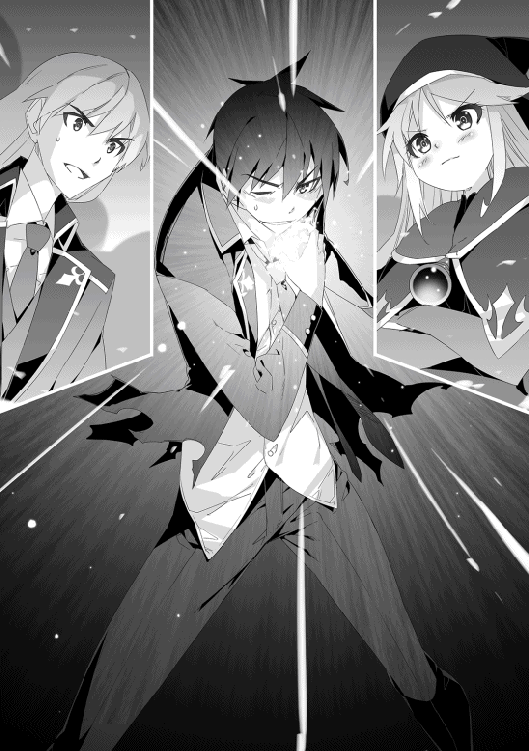
誰もがリースの行動の意図が分からなかった。
何せ、攻撃魔法を自身に叩き込んだのだ。
自棄になって自滅したのかとすら思った。それ以外に考えつかない。闘っているミュリエルもそうであったし、闘いの推移を見守っている学園長ですらそうだ。
だが、二人だけ全く違う反応を見せていた。
「よくぞリースに『アレ』を使わせた」
──大賢者はほくそ笑む。
「まったく、ようやく本気になったか」
──アルフィは呆れる。
そして──
「『超化』!!」
──ドンッと、リースの全身から限界まで抑えつけていたものが決壊したかのように銀の輝きが溢れ出す。
ミュリエルは、輝きが何なのかを知っていた。
「まさか──魔光現象!?」
端的に言ってしまえば、超高濃度の魔力が発する光。
一流の魔法使いが本気を出した場合、この『魔光』が漏れ出す。ミュリエル自身、師である学校長が魔光を発する場面を見たことはあった。珍しくはあったが、四属性持ちや複合属性と比べればまだ希有な現象ではない。
だが、リースの保有する魔力は平均的な魔法使いすら下回るほど。魔光を発するほどの魔力は持っていないはず。
──先ほどまでは。
ようやく、ミュリエルは己の見落としに気が付いた。
そうなのだ。
魔光そのものは実はずっとミュリエルは目にしていた。ただ、当たり前の様にリースが使っていたので気が付かなかった。
リースが魔力砲や加速を使用していた時に発せられていた銀の輝き。
アレはまさしく、魔光に他ならなかった。
──あの魔法の本質は、攻撃や移動ではなかったのだと、ようやく理解できた。
ミュリエルが言葉を失う中、リースから発せられていた銀の光──魔光の勢いは衰えていく。だがそれは魔力が減少したわけではない。
リースの背後。ちょうど加速を使用したときに反射が出現するような位置に、銀の光が収束。菱形上をした銀色の物体が三枚出現した。
まるで無機質の『翼』にも見えた。
変化は止まらない。
彼の右腕にやはり光が集まると、半透明の装甲が彼の右腕を覆う。それらが形を成すと、無骨すぎる一回り大きな腕が形成された。
銀の翼と腕を得たリースが叫ぶ。
「いくぞ、ミュリエル・ウッドロウ！ 尋常に勝負といこうじゃないか！」
観客の視線を一身に集めながら、リースが動き出す。
「跳躍！」
反射力場を踏み抜き、反動でリースの躯が放物線を描きながら宙を舞う。
これまでリースは空中で更に跳躍を使って機動を変化させ、どうにかミュリエルに接近しようと試みていたが、ミュリエルはそれをことごとく読み切り、リースの魔力切れを狙って反撃を加えていた。
だが、ミュリエルは空中のリースへと手を向ける。その表情には明らかな焦りが含まれていた。
「ッ、炎──」
「『飛天加速』!!」
ミュリエルが魔法を投影する前に、リースの背中にある銀翼の一つが砕け散る。次の瞬間、砕け散った地点から銀光が吹き出し、彼の躯を一気にミュリエルに向けて弾き飛ばした。
「──ッ、地震波！」
強引に攻撃魔法の投影を中断したミュリエルは、地属性魔法で己の足下を鳴動させた。投影の破棄と新たな投影、双方を仕損じなかったのはまさに幸運としか言い様がなかった。
「『剛腕手甲』!!」
ミュリエルがその場を離れた直後に、リースの拳が彼女の立っていた場所に着弾。銀の装甲に覆われた腕は、轟音を立てながら決闘場の床を粉砕した。
辛うじて攻撃の範囲外に逃れたミュリエルであったが、その破壊力にゾッとした。もし今のが直撃していたら、骨折どころか肉体が弾けていても不思議ではない。
「徹甲弾！」
こみ上げてくる恐怖を理性の力で抑え込み、ミュリエルは貫通力のある爆炎魔法で反撃を試みる。
だが──。
「『要塞防壁』！」
リースが右手を前にかざすと、腕を覆っていた装甲が開かれるように展開し、面積を広げて彼の眼前にそびえ立つ。
徹甲弾が装甲に激突し炸裂するも、爆炎は装甲を貫通すること無くリースに届くことは無かった。
爆炎が晴れた後、元の大きさに戻った装甲を腕に纏わせながらリースは不敵な笑みを浮かべた。
「その魔法はもう通用しないぜ、ミュリエル」
「まさか......その腕を構成する一枚一枚が通常の防壁だというの!?」
六角形防壁は魔力の効率という点で考えれば通常の防壁に勝っている。ただその代償として構造的な欠陥、貫通力の強い魔法には弱いという欠点を孕んでいた。ミュリエルも底を突くことをリースの攻略手段としていた。
だが、通常の防壁は六角形防壁に勝る点があった。
純粋な強度だ。
六角形防壁は与えられた衝撃を防壁全体に拡散することで一点が崩壊することを防ぐのに対し、通常防壁は圧倒的な頑強度を誇っているのだ。
しかし、六角形構造を用いない防壁の魔力消費量は凄まじい。同じ階級の魔法を防ぐのに、攻撃魔法に比べて四倍以上の魔力を消費する。
それだけではない。
先ほどのリースは跳躍を使った直後に加速の魔法を使用した。あの魔法と跳躍の同時使用は、リースの本来持つ内包魔力では不可能であるはずだ。
「察しのいいお前なら、俺が何をしたのか理解できてるだろ」
試すようなリースの問いかけに、ミュリエルが緊張感を含んだ唾を飲み込み、答えた。
「......あの魔力砲という魔法は元々、攻撃魔法ではなかった。本来の目的は──」
◆◆◆ アルフィ ◆◆◆
「どういうことなのですかアルフィ・ライトハート!? 説明なさい、あなたは全て分かっているのでしょう!!」
「そうだよライトハート！ あの二つの魔法って、同時には使用できないんじゃなかったのか!?」
至近距離から発せられる別々の叫びに、アルフィは顔を顰めながら淡々と説明を始める。
「そもそも、だ。魔力砲も加速も、本来あいつが編み出した魔法の副産物だ」
──超化。
リースが本気を出すときに使う強化魔法である。
「原理は至って簡単だ。さっき見たとおり、反射力場で圧縮した膨大な量の魔力を体内に取り込むだけだ」
圧縮されている魔力はリースの魔力だけではない。空気中を漂う外素もろとも巻き込み、圧縮しているのだ。
圧縮された魔力を敵に向けて解放したのが『魔力砲』。
移動の推進力として使用するのが『加速』。
その二つの根幹をなすのが『超化』。
圧縮された膨大な魔力を体内に取り込み、そのまま内素に転換する技法。
アルフィの口から語られた暴論じみた仕組みに、カディナは顔を引きつらせながら言った。
「......外素を属性関係なく無差別に取り込める、無属性魔法使いだから可能な芸当ですね」
「それだけじゃない。体内で魔力砲を炸裂させてるようなもんだからな」
「──って、それ普通に死んじゃうんじゃないかな!?」
ラトスが顔を蒼白にさせながら悲鳴を上げる。魔力砲を直に受けた経験もあり、その威力は文字通り骨身に染みている。あんな威力を体内で炸裂などさせたら、と考えると血の気が引く。
「爆炎魔法の直撃を受けても耐えきれる、リースの強靱な肉体があってこそ可能な荒技だ。危ないから絶対に真似するなよ」
「したくても出来ないよ！」
──だが、ここに来てアルフィが先ほど言っていた言葉の意味がラトスにも分かった。
落ち着きを取り戻してから、ラトスはギリッと歯噛みをした。
「......僕との決闘で、ローヴィスは完全に手加減をしていたんだね」
「少なくともリースにとっては本気だったよ」
ただ、本領を出していない状況での本気、と注釈が付いてしまう。慰めにはならない。
「彼の性格から察するに、闘う相手を侮辱するような人ではないんでしょうけど......」
「アレは本人なりに強くなるためにやってるんだとさ。やられている方にとっては舐めプレイ以外の何物でもないけどな」
いわば、剣士が剣を使わずに徒手空拳で本気を出しているのと同じ。
あるいは当人にとってこれも鍛錬の一種であるが、闘っている相手に対しては侮辱に他ならない。
一番心底腹立たしく思っているのは、そんなハンデを背負った相手に本気を出させずに負けてしまった敗者に他ならなかった。
──三人が見守る中、闘いは最終局面を迎える。
◆◆◆ アルフィ 終 ◆◆◆
「まさか魔力砲が元々は攻撃魔法ではなく、魔力を補充するための魔法だったなんてね。考えもしなかったわ」
さすがはミュリエル。早くもこの『超化』の仕組みを理解していた。
俺の内包魔力は一般人並みに低い。魔法使いとして闘うには致命的な欠点だ。六角形式防壁を利用したところで多少はマシになった程度。反射を使用すれば即座に魔力切れを起こす。普段は瞬間回復で誤魔化しているが、いざというときの魔力切れは致命的となる。
そこで、一時的にでも良いから内包魔力の上限値を高める方法を模索したのが始まりだ。
「下手したら、魔力が解放される衝撃で、躯の内側から自滅してるわよ？」
「実際、思いついた時点で試したら、エラい目にあったからな」
最初は防壁を箱状に投影し、その中にありったけの外素魔力を詰め込んで体内に取り込んだのだが、急激に増加した内素に耐えきれず躯全体に激痛が生じて身動きが取れなくなった。
婆さんが席を外している間に、ふと思いついたことを好奇心任せに行ったのがマズかった。戻ってきた婆さんは床に倒れて痙攣している俺を発見して大慌て。過剰に取り込んだ魔力をどうにか排出し、痛みが引いた後には婆さんの大激怒である。
ともあれ、先走った行動であったが、肉体が至っていなかっただけで理論は間違っていないと大賢者のお墨付きがついた。
更に大賢者は集まった魔力が解放された拍子に生じる衝撃に目を付けた。結果、超化の派生で誕生したのが魔力砲と加速。超化を用いない通常時に使える魔法だ。
「あなたのその異様なタフネスぶりも理解できたわ。鍛えているのは表面的な部分だけじゃない。内臓器官もとことん鍛え抜いているのね」
「ご明察」
単純に筋力だけを鍛えても超化で取り込む魔力には耐えきれない。何せ体内に取り込むのだから、躯を内側から鍛えなければならなかった。
幸い、黄泉の森には凶悪でありつつも非常に滋養が高い魔獣がうようよいた。鍛錬と称して魔獣を狩り、それがよくその日の晩ご飯になったりしていた。
大賢者の課した特別鍛錬のおかげで、俺の躯は内外共に強靱となり、超化の反動に耐えきれる程までに至った。
そして、超化を至った俺を止められる者は、この場にはいない。
俺は右腕を──『剛腕手甲』を構えた。
超化を経て、俺の体内には潤沢な魔力が内包されている。アルフィには届かずとも、あと一歩で届くほどの超魔力だ。
それを惜しみなく注ぎ込み強固な防壁を多重に展開。通常時は腕を覆う打撃武器として。有事の際には分離し堅牢な防壁として機能する。
まさに攻防一体の魔法だ。
ミュリエルは咄嗟に爆炎魔法を投影しようとしたが、険しい表情を浮かべて取りやめる。
剛腕手甲の防御形態──『要塞防壁』は六角形防壁と違って六角形構造を用いない純粋な防壁で構成されている。
つまり、六角形防壁の弱点である〝局部への攻撃集中〟による一点突破はもう通用しない。
俺は獰猛な笑みを浮かべて吠える。
「さぁ、もういっちょいくぜ！ 『飛天加速』!!」
背中の銀翼が砕けると、魔力が噴出し俺の躯が瞬時に加速する。
この翼の内部には加速に使用する量の魔力が常時圧縮されており、破壊されると圧縮魔力が解放され衝撃で俺の躯を弾き飛ばす。
使用する都度に反射の力場を展開する必要が無く、発動するまでの時間差が無い、まさに加速の上位互換とも言える魔法だ。
──もう一つ、この飛天加速には加速には無い利点がある。
「地震波!!」
ミュリエルは咄嗟に地属性魔法で己の躯を動かし、飛天加速の直線上から逃れる。俺の躯が彼女の側を通過を通過するとその背後を狙おうとするが──。
「飛天加速・第二撃!!」
俺は躯をミュリエルへ向けて反転させると、背中の銀翼──その二枚目を破壊。またも銀色を纏う魔力が背中から放出され、俺の躯がミュリエルへと疾駆する。
超化を使った俺は、魔力を圧縮した銀翼を常時三枚展開している。飛天加速はこれを破壊するだけで発動することが出来る。
つまり、新たに反射を投影すること無く、連続で飛天加速を使用することが出来るのだ。
「──ッ!? 大地──いえ、爆裂!!」
防御を選択しようとしたミュリエルは、あろうことか攻撃魔法を選択。強襲する俺の拳が到達する寸前に、自らの至近距離で爆炎魔法を投影した。
俺自身にダメージは無かったものの、爆裂の衝撃でミュリエルの躯が吹き飛ばされた。
結果、俺の拳は空を切る。
地面に着地し、新たな銀翼を背中に生やしながら、俺は地面に倒れたミュリエルを見る。彼女は己の爆炎魔法でダメージを受けながらも、どうにか立ち上がっていた。
一見すればただの自爆にも思える行為だろうが──。
「マジかよ！ 咄嗟に思いつくか普通!?」
剛腕手甲の直撃を受ければ一撃で敗北すると判断したミュリエルは、ダメージを覚悟の上で己の躯を爆裂で吹き飛ばしたのだ。
「こ、これでも接近戦に弱い自覚はあるの。緊急時の対処法くらい考えているわよ」
確かに、戦闘不能は回避できたかも知れないが、かといってミュリエルも無事では済んでいない。現時点で息も絶え絶えだ。だが、その目はギラギラと輝いている。
ミュリエルは痛みに顔を歪めながら、それでも愉悦に笑みを浮かべていた。
「この状況で笑うかよ」
状況の優位も覆され、爆裂で受けた激痛に苛まれ、それでも彼女は笑っている。俺は呆れると同時に尊敬の念すら抱いた。
闘いの初めから変わらないそれは、ミュリエルの根源。
──未知なる魔法への好奇心。
「素晴らしい......本当に素晴らしいわ!! 魔法使いの常識では役立たずとされていた無属性魔法を！ 防御魔法を!! ここまで昇華させるなんて!! あなたに決闘を挑んだのは間違いではなかった！」
興奮したミュリエルは、一気に魔法を投影した。
描かれた魔法陣からミュリエルの熱意が伝わってくるようだ。
「『大爆裂』!!」
「要塞防壁!!」
右腕の銀装甲を展開して防壁を構成し、投影された魔法を防ぐ。要塞防壁を破壊するには至らずとも、これまでで一番強烈な圧力の衝撃を受け止めた。
「もう細かい細工は通用しないでしょうね。だからここからは出し惜しみはしない。正真正銘の全力でいかせてもらうわ！」
「中々に嬉しいことを言ってくれるじゃねぇか」
爆炎を操る魔法使いの言葉に、俺の心が更なる熱を帯びた。拳を固め、彼女に負けないくらいの熱意を叫んだ。
「いいぜ、ミュリエル。全身全霊で掛かってこい!!」
◆◆◆ ミュリエル ◆◆◆
ミュリエルは即座に理解した。
策を弄している時間は無い。仮に手段を練ったとしても、対処療法の域を越えないのは確実だった。
（だったら、もう細々とした策は練らない！）
無駄に思考を重ねるくらいなら、一つのことだけに集中する。
リースの超化を攻略する手段は、一つしか思いつかなかった。
ならば、それに辿り着くために全力を注ぐまでだ。
──頭の片隅に残った冷静な部分が、現状に疑問を抱いていた。
リースに決闘を挑んだのは、己の立てた理論を証明するため。そして後付けではあるが、この決闘を観戦している大賢者に、学校長の弟子として恥じぬ実力を見せるためだ。
現時点で、リースの魔力回復能力。六角形防壁の突破という二点は証明済みだ。大賢者に実力を示せたかどうかは不明だが、できる限りは表明してみせたに違いない。
つまり、彼女の当初の目的は、ほぼ達せられたと言っても良い。
研究者肌のミュリエルにとって、闘いとは理論を証明するための場に過ぎない。相手の魔法を解き明かしてその攻略法を実証したり、あるいは新たな魔法の威力や効果を実践する手段の一つであった。
闘いを研究の手段として見ているミュリエルを、学校長は咎めなかった。むしろ、昨今では魔法戦に対して力を注いでいる魔法使いの社会において、ミュリエルは純粋に魔法使いとしての素質を持っていると捉えていた。
ゆえに......リースが超化を使い、己の策を完全に上回った時点で敗北を認めてしまっても何ら問題は無かった。唯一、大賢者の直弟子に勝利し、自身を育てた師の力を証明しようとしたが、それは難しいと言わざるを得なくなったが、勝利に拘りを持つほどミュリエルは闘いに対して熱意を持ち合わせていなかった。
──本来であるのならば、だ。
不慣れな痛みに耐えながらも、ミュリエル自身も計りかねる衝動が躯を突き動かし、思考を加速させる。
両手をかざし、ミュリエルは素早く魔法を投影する。
「徹甲弾・連射！」
高速で魔法を連続投影。これまでで最も効果を発揮した魔法を、連続投影して発射する。連続での投影は単発で発射するよりも一発当たりの魔力消費が激しくなるが、魔力を出し惜しみをしている余裕は無い。
魔力がガリガリと削り取られていくように体内から消費されていく。急激な魔力の枯渇で目眩が押し寄せるが、歯を食いしばって耐える。
巻き起こった煙幕が晴れると、奥から要塞防壁を展開した無傷のリースが姿を現す。半ば予想していたことではあるが、徹甲弾はもはや有効打になり得ない。
要塞防壁を解除し、剛腕手甲の右腕を振りかぶったリースが、背中の翼を起爆しミュリエルに肉薄する。
「爆裂!!」
奥の手であった爆発による自爆紛いの移動法。緊急の回避手段であるはずだが、そんな甘いことを言っている余裕はない。なぜならリースの攻撃の一発一発が、ミュリエルにとって致命的。これを緊急と呼ばずして何と呼ぶ。
──どうして、ここまで必死になって闘っているのだろうか。
新たに魔法を投影する己に、冷静な自分が疑問を抱く。
ふと、こちらを見据えるリースの顔に目が行く。
剛腕手甲を構える彼の表情は、新しい玩具を前にした子どものような笑顔であった。
彼の顔を見たミュリエルもまた、自然と笑みを浮かべていた。新しい魔法を前にしたときに浮かべるような笑顔だ。
そうか、と。魔法を解き放ちながらミュリエルは己の笑みに納得した。
リースは、この闘いを心底楽しんでいる。ミュリエルが次にどんな魔法を使ってくるのか、どんな手段を用いてくるかを心待ちにしている。そしてそれら乗り越えることに喜びを感じている。
ミュリエルもそうだ。リースが自分の予想を超える魔法を使うこと。そしてそれを読み切りながらも更にそれを上回る何かをするのを心待ちにしている。
何より、リースと闘うことが楽しくて仕方が無い。
リースの純粋な〝熱〟がミュリエルへと伝播し、彼女が今まで感じたことの無い気持ちも呼び覚ましていた。
そして、楽しいと感じるからこそミュリエルは強く思う。
これまで勝負事には全く興味は無かったミュリエルが、初めて抱いた願望。
──〝勝ちたい〟という気持ち。
それゆえに、歯を食いしばっている。
それゆえに、痛みに耐えている。
全ては、リースに勝利するためだ。
──何度目かの攻防で既にミュリエルの体力は限界に近く、魔力も底を付くのも時間の問題。長々と戦闘を引き延ばしていてもじり貧なのは誰の目にも明らかであった。
だが、ミュリエルは何も考えずに時間を稼いでいたわけではなかった。リースの超化を目の当たりにし、その仕組みを理解した時点で策は始まっていた。
なにも複雑な段階を踏む必要は無い。むしろ、この決闘が始まった当初から狙い目は変わらなかった。
◆◆◆ ミュリエル 終 ◆◆◆
超化を使ってから、状況は俄然こちらが圧倒的に優位だ。
驚いたのは精神的にも肉体的にも追い詰められたミュリエルの粘り強さだ。魔法使いとしては研究家寄りの彼女がここまで俺の攻めに耐えるのは予想外だった。
ただし、それもここまでの話だ。直撃打は無いものの、ミュリエルは剛腕手甲が掠めた衝撃や爆裂による緊急回避の爆風でダメージが蓄積し、立っているのがやっとという状態。後一撃でも拳が掠めればそれでおそらく彼女は立てなくなる。
──だというのに、ミュリエルの目は未だ強く光っている。
彼女は、まだ微塵も諦めていないのだ。
それを嬉しく思うと同時に、強い警戒心も湧いてくる。
〝超化を使っていない状態〟と前置きは付くが、俺の弱点を見抜き容赦なく狙ってきたミュリエルだ。策も無しに闘いを長引かせているはずがない。
必ず、何かしらの狙いを持っているに違いない。
だが、それならそれで構わない。
その策ごと、叩きつぶすまでだ！
「剛炎砲!!」
こちらとの接近戦を避けようとするミュリエルが、火属性の上級魔法を投影。やはり、彼女は徹底的に俺との近接戦闘を避けるようだ。
──だが、誰が遠距離戦闘は出来ないと言った？ 要塞防壁でも防げないこともないが、俺はあえて違う魔法を選んだ。
俺は開いた右手を前にかざす。同時に、背後の翼の一枚が腕に添えられるように移動。腕を覆う剛腕手甲の装甲の一部が展開し、翼を覆うとその形を変化させる。
さながら、魔力で出来上がった巨大な砲身だ。
その光景を見たミュリエルの表情が引きつった。
「超化中だったら、こいつは届くんだよ！」
砲身の中に装填された翼──圧縮された魔力を、更に防壁で覆う。
これが俺の遠距離攻撃魔法。
「『重魔力砲』!!」
圧縮魔力の弾丸が砲塔から発射され、俺に向かってくる紅蓮の砲弾と接触。俺とミュリエルの中間地点で双方が炸裂し大爆発が起こった。
ただの魔力砲は、反射の力場から解放されると即座に衝撃を放ちながら拡散してしまう。だが、重魔力砲は防壁によって魔力を圧縮した状態のまま、遠方へ撃ち出すことが出来る。
悔しげに表情を歪めるミュリエル。こうも易々と防御魔法を防がれるのが悔しいのだろう。
俺の背中にある三枚翼は──『銀輝翼』は魔力砲や加速等の機能を一点に集中したもの。常に圧縮魔力を蓄えておくことで〝魔力を溜める〟という動作を無くしたのだ。
ただ、この魔法にも欠点はいくつか存在している。
一枚一枚が使いきりで、消費したらまた作り出さなければいけないこと。
俺の制御力だと、同時に三枚を投影するのが限度。これ以上に作り出そうとすると、動いている最中に暴発して俺が死ぬ。
そして──。
「ん？ あ、やっべ」
何気なく銀輝翼を新たに作り出そうとしたのだが、翼の中には淡い銀の輝きしか宿らなかった。
──一枚を作るための消費魔力が結構な量であることだ。
しまった、と口にするよりも先に、ミュリエルの発した魔力の気配に俺の警戒心が最高潮に達した。
「待っていたわ......それを！」
カッと目を開いたミュリエルの目の前にここに来て最大級の魔法陣。魔力の限界を迎えながらも、彼女は最大級の威力を持った魔法を投影してきた。
おそらく、先ほどの剛炎砲は、この魔法を投影するための時間稼ぎ。上級魔法をおとりに使う剛胆さにはさすがに驚かされる。
「この規模......爆炎属性の上級魔法か!?」
「これが私の切り札よ！」
中央の魔法陣を囲うように更に複数の魔法陣が投影。全てを合わせて巨大な魔法陣が完成する。
剛腕手甲での突破は──無理だ。迎撃するのが無理だと悟った俺は要塞防壁を展開。更に魔力を込めて強度を高める。
「『極大爆裂』!!」
視界が閃光に満ちた次の瞬間、凄まじい大爆発が決闘場を覆い尽くした。
「うぉっ──ぉぉおおおおおおおお!?」
一瞬でも魔力や気を抜くと、要塞防壁でさえ破壊されそうな衝撃波。
というか、この威力だと決闘場を覆う『夢幻の結界』も破壊するんじゃねぇのか!?
──そんな危惧も思い浮かぶ中、どうにかミュリエルの切り札を防ぎきった。
辛うじて要塞防壁は突破されなかったが、構成する魔力をかなり消費した。今の要塞防壁は中身がスッカスカの張りぼてで、崩壊する一歩手前だ。
舞い上がった煙が晴れると、壇上の状態も悲惨になっていた。床の所々がボロボロになっており、爆心地に至っては大きく抉れている。
これ、直撃したら確実に原形留めずに消滅してたよな、俺。
幸いにも『夢幻の結界』そのものは『極大爆裂』の後も無事に展開されたままなので死にはしないだろうが──さすがに肝が冷えた。
と、胸を撫で下ろした俺だったが。
「爆裂!!」
「──ッ!?」
俺はほぼ反射的に要塞防壁を再度展開。その表面に爆炎魔法が直撃。それが最後の一押しとなってとうとう要塞防壁が崩壊した。
「待っていた──先ほど私はそう言ったはずよ」
ミュリエルの方を向けば、一目見ても倒れる一歩手前。なのに顔からは戦意は失われていなかった。
そして、ようやく俺は彼女が何を狙っていたのかに気が付いた。
「あなたの最大の弱点は──使う魔法の消費魔力が総じて多すぎること。だから、そこを狙わせてもらったわ」
銀輝翼は補充する都度に魔力を消費し、要塞防壁に至っては燃費の悪い通常防壁を幾重にも重ねているのだ。
いくら超化で膨大な魔力を得たとしても、消費量が莫大であればすぐさま底をつく。
ミュリエルは、俺が銀輝翼の補充に失敗した瞬間を見計らい、最大威力の魔法を使用したのだ。
全ては俺の内素魔力が枯渇する瞬間を狙うために。
「もうあなたには通常の防壁を投影する魔力は残っていない。でも私にはまだ一発分の魔力が残されている！」
ミュリエルが最後の魔力を振り絞り、魔法を投影する。
──彼女の言葉通り、俺の体内には最早魔力は残されていない。どうにか六角形防壁を展開するのが限界だ。
全ては彼女の作戦通りだ。
「徹甲弾!!」
ミュリエルが魔法を投影する。予想通りに徹甲弾。苦し紛れに六角形防壁を展開したところでやすやすと突破されるだろう。
──確かに内素魔力は消費し尽くした。超化で体内に溜め込んだ魔力はもう無い。
だったら──躯の外に溜め込んだ魔力を使うまでだ。
背中の銀翼が、俺の躯に突き刺さり、爆ぜる。
躯から銀の光──魔光が再度溢れ出す。
俺は有り余る魔力で防壁を再構築し、要塞防壁を展開。
貫通力があろうと無かろうと、堅牢な防御壁を突破するには至らない。ミュリエルの徹甲弾は要塞防壁の表面で爆発するだけであっけなくその役目を終わった。
「そ......んな......馬鹿な......」
正真正銘、最後の一手を防がれたミュリエルが、呆然となる。
『装填』。
銀輝翼の内部に溜め込んだ魔力をそのまま体内に取り込む魔法。
銀輝翼は加速や魔力砲を瞬時に行うための起爆剤であったが、同時に超化を行うための燃料でもある。
極端に言ってしまえば、だ。
俺は体力が続く限り、魔力を補充しながら戦い続けることができる。
呆然としていたミュリエルだったが、我に返ると肩の力をふっと抜いた。
「さすがに、もう限界。何も出ない」
緊張の糸が切れたのか、ミュリエルの口調がいつも通りに戻っていた。目元も普段の眠たそうな形を作っている。
ただ、その顔に悲壮感は無かった。
「あなたは凄い。私の想像の遙か上を行っていた」
「そりゃぁ俺の台詞だ、ミュリエル。大賢者とアルフィを除けば、お前は俺が闘ってきた中で一番強かった」
「そう......あなたにそう言って貰えると嬉しい」
ミュリエルは笑った。
俺も笑った。
「あなたと──リースと闘えて楽しかった」
「俺もだよ」
「また、私と闘ってくれる？」
「ああ、またやろうぜ」
そして──俺は最後に残った銀輝翼を剛腕手甲に取り込んだ。
右腕の剛腕手甲が更に様相を変化する。腕が更に一回り大きくなり、各所から筒状の物体が後方へと伸びている。
──これが、現時点で俺が出せる最大威力の魔法。
「こいつで終わりだ！」
噴射口から魔力が吹き出し、俺の躯が加速。
一瞬でミュリエルの懐へと飛び込む。
──剛腕手甲に取り込んだ銀翼と俺の体内に溜め込まれた全魔力を推進力に転換し、俺の渾身の一撃を相手に叩き込む技。
その名も──。
「『極一点突破』!!」
飛天加速をも上回る超加速を以てミュリエルの懐に飛び込み。
俺は彼女に拳を打ち込んだ。
──拳が届く直前に、俺とミュリエルの視線が絡み合う。
彼女のその表情は、相変わらず眠たげであったが。
満足感のある笑顔を浮かべていた。
そして──夢幻の結界が解除された後、ゼストが高らかに宣言した。
「勝者、リース・ローヴィス!!」
いつの間にか、観客席からは割れんばかりの拍手や歓声が届いていた。俺に対する賞賛の他にも、ミュリエルの健闘を称える声もちらほらと聞こえてきた。
ミュリエルが担架で場外へと運び出されるのを眺めてから、俺は超化で取り込んだ魔力を排出。剛腕手甲と銀輝翼も解除され、銀色の粒子となりやがて空気中の外素と混ざり合って消滅する。
「ふぅぅ──」
俺は無意識に深く呼吸をしていた。
「......どうやら、超化って奴は無代償で使えるわけじゃぁなさそうだ」
「──ッ」
咄嗟に目を向けると、先ほど闘いの決着を告げたゼストがこちらに歩み寄ってくる。
顔は相変わらずやる気の欠片も無い笑みを浮かべていたが、その目は俺を見透かすような鋭さを秘めていた。
この先生も、ミュリエルと同じ魔法の研究家だったな。
「なかなかに興味深いもんを見させてもらった。こいつぁまた徹夜だな。全くなんてことしてくれたんだ。俺の睡眠時間がどんどん削れていくじゃねぇか」
「褒めてんのか文句言ってんのか、どっちかにして欲しいんですがね、先生」
これで結局徹夜して寝不足になっても、授業はちゃんと行ってくれるので生徒からしてみれば何ら文句は無いけど。
「にしても大したもんだな。まさかあの学校長のお弟子さんを相手に勝利してみせるとはな」
ゼストは興味深そうに頷きながら顎に手を当てる──ってちょっと待て。
「......誰が誰のお弟子さん？」
「ああそうか。お前は知らなかったか」
──ゼストの口から聞かされ、俺はこの時初めてミュリエルが学校長の弟子である事実を知らされた。
「......マジかよ、全然聞いてぇねぞ、そんなの」
「まぁ、一部の教師を除けばほとんど知られてないからな。でなけりゃぁ、いくら優秀でもあれだけ授業をサボってりゃぁ生活指導室の常連になってる」
ミュリエルが前に『師匠はこの学校の教師』とは口にしていたが、その教師の頂点に位置する人物とはさすがに考えもしなかった。
「箝口令を敷いているわけじゃないがあまり他言はしてくれるなよ」
「分かってますよ。俺も似たようなもんですから」
俺も人のことは言えないが、あの歳であそこまで魔法使いとしての腕前を持っているとすれば、相当に優秀な師匠が付いていないなんてありえない。教育機関の長なら驚きつつも納得もできた。まさに最強の伝手だな。
◆◆◆ ラトス ◆◆◆
「......強かったね、どちらも」
「......ええ、予想を遙かに超えて」
拍手や大歓声が周囲で巻き起こっている中、ラトスとカディナは真剣な眼差しを壇上に立つリースと担架で運ばれているミュリエルに向けていた。
魔力の瞬間回復能力。
超化。
爆炎魔法。
リースのみならず、ミュリエルの実力は両者の予想を遙かに超えるものであった。
「でも、逆にやる気が出てきたよ」
「私もです。同い年のあの人たちに出来て、私たちに出来ないはずが無い」
ラトスとカディナの胸中には、驚きと共に熱が宿っていた。それはまさに、ミュリエルがリースと闘っているときに抱いた熱と同質のものであった。
そんな二人の傍で、アルフィは不敵な笑みを浮かべていた。
膝の上で組んだ両手には強い力がこもっている。
「そうだ、それでこそ超え甲斐がある」
これまで、超化に至ったリースにアルフィは負け越している。
より正しく言えば、超化を習得した後のリースに勝利したことは何度かある。
だが、その数少ない勝利は、超化の弱点を突いたものであり、いわば小細工の類い。そんなもの彼にとっては無価値だ。
アルフィが求めるのは正真正銘の勝利。正面からリースを超えなければ意味が無いのだ。
転生者としての知識と授かった破格の才能を以てして、なおもその先を行く無属性の幼馴染みに、アルフィは強い闘志を燃やすのであった。
◆◆◆ 学校長 ◆◆◆
一方、解説席では──
「ディアスよ。中々に面白いもの見せて貰った。礼を言う。そしてよくぞあれほどまで、己の弟子を育て上げたものだ」
「......大賢者に褒めて頂けたと聞けば、あの子も喜びましょう」
大賢者の褒め言葉に、学校長は意識を失い担架で場外へと運ばれていく教え子に誇らしげな笑みを向けた。敗北を喫したが、他ならぬ大賢者が認めたのだ。これが嬉しくないわけが無い。
「驚いたのは、あの歳にして徹底的に省かれた投影の無駄じゃ」
ミュリエルが此度の決闘で投影した魔法は、ミュリエルが本来内包している魔力では到底賄いきれるものではなかった。ミュリエルの内包魔力は確かに優れているが、それでもまだ足りない。それこそ、アルフィ並みに莫大な量の魔力が必要なほどであった。
それを可能とするのが、ミュリエルの研究者としての面だ。
彼女は己が扱う魔法を徹底的に研究し解き明かし、その現象を『科学的』に理解しているのだ。
「ゆえに、魔法を投影する際に余計な部分が省かれ、より鮮麗された魔法陣が出来上がるというわけじゃ。ま、そうでなければ途中で『息切れ』しておるからな」
投影される魔法陣から無駄が省かれれば当然、それを形作っている魔力も減少する。行っていることは別であるが、結果だけを見ればリースの六角形防壁と同じく魔力の消費量が減少し、その分多くの魔法を投影することができるのだ。
「あの者は魔法を『神秘』としてではなく『現象』として捉えておるようじゃの。実にぬしの弟子らしい育ち方だ」
「元々、研究職の方向に強い適性がある子でしたからね」
学校長がミュリエルを弟子にした理由は、二属性持ちであるのと同時に、魔法への捉え方が己と非常に良く似ていたからだ。
「私も驚きましたよ。まさかリース君があれほどまでの実力を有していただなんて」
これまでの決闘の様子から、リースが今まで本気を出していないこと──何かしらの奥の手を持っているのは察していた。
だが、リースの『奥の手』は学校長の想像を遙かに超えるものであった。
『魔力を回復できる魔法』など、学校長どころか誰にも想像できるはずが無い。
「今確信しましたよ、老師の言葉に、嘘偽りが無かったと」
──リースはいずれ、儂に比肩しうる英傑に成長するだろう──。
大賢者がリースに持たせ、学校長の手に渡った一通の手紙。いかに尊敬する老師の言葉とはいえ、半信半疑であった。
だが、それは間違いであった。
「リース君は間違いなく、魔法の歴史に名を残す存在になる。それこそ、あなたと同じく」
「まだ儂には到底及ばぬ、未熟者ではあるが──」
弟子を褒められて満更ではないようで。
「他ならぬこの大賢者の弟子なのじゃ。最低でも大賢者を受け継ぐまでにはなって貰わんと困る」
はっはっは、と大賢者は楽しげに笑った。
◆◆◆ ミュリエル ◆◆◆
ミュリエルの意識が戻ったのは、その日の夜半であった。
「......見覚えのある天井」
目を開いた彼女の視界に最初に映ったのは、寝不足時に時折お世話になっている保健室の天井。
ミュリエルはしばらく、己がどうして保健室のベッドで寝ているのかを理解できなかった。
「どうやら目が覚めたようですね」
声を掛けられて、ベッドの側に人がいることに気が付く。そちらに目を向けると、柔らかい笑みを浮かべた学校長が椅子に腰を掛けていた。
ミュリエルは反射的に上半身を起こしたが、全身を駆け巡る痛みと疲労に顔を歪めた。
「ああ、駄目ですよ安静にしていなくては。『夢幻の結界』のおかげで外傷こそ無いですが、躯に残った疲労と痛みは残ってますからね」
躯を起こし掛けたミュリエルの肩に手を置き、ゆっくりとベッドに寝かす学校長。彼女は特に抵抗することも無く、再びベッドの上で横になった。
学校長の口にした『夢幻の結界』。それに加えて躯に走る痛みに、ようやくミュリエルは己がこの場所にいる経緯を思い出した。
「そっか......負けたんだ、私」
決闘の最中に見せた狂気じみた興奮は既に潜まっており、普段通りの淡々とした口調だ。
「大賢者の弟子の実力はどうだったんだい？」
「......私の想像を遙かに超えてた。それと、闘いがあんなに楽しかったのは初めて」
「そうか。随分と有意義な機会になったようだね」
「はい──────？」
学校長の言葉に頷いたミュリエルだったが、ふと己の胸に手を当てた。
この胸に深い満足感があると同時に、名状しがたい何かが燻っていた。
リースとの決闘に充実感を抱いていたのは間違いない。魔法使い同士の闘いで、あそこまで心の底から楽しんだことは無い。師との手合わせであっても、リースとの闘いほど心は躍らなかった。
それこそ、再戦を願い出るほどに。
けれども。
「──なんだろう、これ？」
苛立ちにも近い感情が、ぐるぐると躯の中で行き場を求めている。
そんなミュリエルを目に、学校長は笑みを浮かべた。
師として彼女に長く接してきた学校長には、ミュリエル自身が計りかねる感情の正体が分かっていたのだ。
「君が悔しがるのは珍しいですね」
「私が......悔しがる？」
最初、学校長が何を言っているのか理解できなかった。
「君は同世代の魔法使いに負けたことが無いからね。悔しいという気持ちに慣れていないんだろう」
ミュリエルの記憶にある限り、彼女は同じ年頃の魔法使いに負けた経験が無い。
敗北するときは決まって、師である学校長が相手だったり、己よりも長い月日を研鑽に捧げてきた魔法使いの先達。負けて当然という闘いばかりであった。
しかし、今回は違う。
相手が──リースが強敵であるのは最初から分かりきっていた。その上で、彼に勝つための策を弄した。手を誤らなければ確実に勝利できる──そう考えていたはずだ。
ミュリエルは致命的に選択をミスしたわけではない。むしろ策は最後まで完遂した。本来であるならばそれで勝ちのはず。
けれどもリースはその策を上回る強さを発揮した。
ミュリエルの予想の上を行っていた。
その結果が此度の敗北。
──ああ、と彼女はようやく理解した。
要は己の詰めの甘さを悔やんでいるのだ。
未だ己は常識の中に捕らわれたままだった。『魔力瞬間回復』という破格の能力に目が眩み、更その一歩先にある可能性まで辿り着かなかった。
あるいはそこにさえ気が付けば、もっとやりようがあったのではないか。
気が付くと、様々な後悔が押し寄せてくる。
──あの時ああしておけば良かった。
そんな考えがいくつも頭の中に浮かんでは消えていく。
◆◆◆ 学校長 ◆◆◆
学校長はミュリエルのそんな様子を見て嬉しく思う。
──ミュリエルは魔法使いとしては優れた土台を有している。
魔法を扱うセンスに加えて、魔法を科学的に分析する現実的な思考。結果が出るまで何度も試行錯誤を繰り返す根気。何より、魔法を楽しむ好奇心の強さ。
優れた才能を持っているがゆえの奢りもほとんど無い。強いて言えば、一つの物事に集中するとそれ以外のことに目が行かなくなる点であるが、これも美点と捉えられなくもない。
だが、一つだけ彼女に欠けていたものがあった。
同世代の競争相手だ。
学校長もその本分は研究者であったが、若かりし頃は友人でありライバルである魔法使い達と切磋琢磨し、腕を競い合っていた。あの頃に抱いていた『対抗意識』という熱意が無ければ、己は『学校長』と呼ばれるほどの地位には立っていなかったはずだ。
ミュリエルを半ば強引に学校へ入学させたのもこの為。彼女に競い合う相手を得て欲しいが為に、才覚ある者が多く集まるこのジーニアス魔法学校へと送り込んだのだ。彼女が、対等に接することの出来る友人を得るために。
学校に入学した当初、相変わらず他人に無関心の独立独歩を貫いていたミュリエルを心配していたが、もうその必要は無い。
今日この時を以て、彼女は対等以上に渡り合える友人を得たのだから。
リースだけではない。彼の周りには学校町の目から見ても才覚あふれる若者たちがいる。きっと、彼らの存在はミュリエルを良い方向に導くだろう。
◆◆◆ ミュリエル ◆◆◆
──ミュリエルは、胸に手を当てて考え込んでいた。
リース・ローヴィス。
自分に魔法使いとしての楽しさを再認識させ、それと同時に敗北と悔しさを植え付けた相手。
どこまでも無邪気に魔法を追求し、心の底から魔法を楽しむその姿を思い出す。
──満足感と敗北感。そしてもう一つ、不思議な感覚があった。
（なんだか、ドキドキする）
リースのことを......彼の顔を思い出すだけで、胸の奥が締め付けられるような気がする。魔法のことだけではない。もっとリース自身について知りたい。彼と深く関わりたいと。そんな考えが強まっていく。焦燥感にも似た気持ち。
けれども、決して悪いモノじゃない。
この気持ちの正体を知りたい。
胸に当てた手をぎゅっと握りしめ、ミュリエルは一つの決意をした。
「師匠、お願いがある」
──ミュリエルの申し出に学校長は少しだけ驚き、そして快く受け入れた。
◆◆◆ ミュリエル 終 ◆◆◆
──ミュリエルとの決闘から三日が経過した。
「学生の本分は勉強だ」
「なに唐突に当たり前のことを言ってるんだよ」
朝の始業前。俺とアルフィはいつものように雑談を交わしていた。一昨日と昨日はミュリエルとの決闘でクラス内の話題は持ちきりだったが、今日になってようやく落ち着きを取り戻してきた。
「いやほら、最近は殴る蹴るぶっ飛ばすと荒事ばっかりやってたじゃんよ。ここで少し初心に返っておこうと思って」
「『決闘』をただの喧嘩みたいに言うなよ......。まぁ、そろそろ真面目に勉強しなきゃとは俺も思ってたけどさ」
──大賢者は決闘をした日の夜に会話をした。
ちょいちょいと小言を頂いたが、ほとんどが自業自得なので甘んじて受け入れた。ただ、小言の他にも「弟子の元気な姿が見れて何よりじゃ」と笑っていた。
折角来たのだから、都の案内でもしようかと申し出たが断られた。
「久方ぶりに外に出たが、やっぱり人混みは苦手じゃ」と引きこもり体質に改善は見られず、その日のうちに黄泉の森へ帰っていった。また今度、顔を出すとしよう。
それと、俺の周囲に小さな変化が生まれた。
「ごきげんよう、リース・ローヴィス」
「おはよう、カディナ」
どんな心境の変化なのか、ミュリエルとの決闘の翌日から、ノーブルクラスの『おっぱい枠』ことカディナが良く声を掛けてくるようになった。
「......なぁ、いちいちフルネームで人を呼ぶのってめんどくさくね？」
「申し訳ありません。親しくない方を呼ぶときにはどうしてもこうなってしまうので」
「......それを親しくない本人の目の前で言っちゃうか普通」
これまでは目が合う度に睨み付けられていたのだが、今では幾分かそれが和らいでいる。意識的な〝壁〟はまだ若干感じるがそれでも大分マシになっただろう。
「お二人とも、最近は決闘で色々と忙しいようでしたが、試験勉強の方は問題なくて？ そろそろ中間試験が始まる時期ですけれど」
「一応は。毎日の予習と復習は欠かしていない」
「俺もだ」
ジーニアス魔法学校は、一年を三つの期間にわけている。入学してから夏の長期休暇までを一学期。休暇明けから年末までを二学期。そして年明けから昇級──最上級生は卒業──までを三学期。
そして、三学期を除いた一学期、二学期にはそれぞれ二度の大きな試験が実施される。
近頃は決闘やなんやらで賑やかであったが、そろそろ一学期の最初の試験──中間試験が始まる。ジーニアスに入学してから学んだことを総合的にテストするのだ。
その為、来週から試験が終わるまでの間は決闘が禁止になる。試験勉強に専念して貰うためだ。
「アルフィ・ライトハートはともかく、リース・ローヴィスが毎日机に向かっていると聞くと違和感を覚えますね」
「お前本当に本人の前で遠慮しないのな。......今のところ、実技でも座学でも学年主席の座を誰かに明け渡すつもりはないんでそこんとこよろしく」
「望むところです。名実共に、必ずやあなたを主席の座から引きずり下ろすので首を洗って待っててください」
軽い挑発を込めて答えると、カディナは気を悪くするどころが不敵に笑い返してきた。以前なら殺意すら籠もっていそうな視線でにらみ返されたものだが、一体どういった心境の変化なのか。
ただ、これが嬉しい変化には違いなかった。切磋琢磨する相手と嫌悪し合わなければならない道理はない。アルフィと同じく楽しく馬鹿騒ぎをしながら研鑽し合う仲の方がずっと良い。
何より、学年三大おっぱいと交友が持てるのが何よりも嬉しい。これで真正面から巨大弩級おっぱいを拝むことが出来る。
ありがたや、ありがたや。
「えっと、どうして彼は急に拝みだしたのですか？」
「気にするな。いつもの病気だ」
「はぁ、そうですか......」
誰が病気だとこら、とアルフィにツッコミをいれようとしたところで、予鈴が鳴り教室の扉が開いた。
「今日も楽しい学校の始まりだぁ。ほら席についたついた」
相変わらず目に隈を作ったゼストがやる気なさげに教室に入ってきた。また徹夜で研究でもしていたのか、教壇に立つとあくびを噛み殺し俺たちの方を向く。
ゼストからはやる気が全く見られなかったが、職務そのものは非常にこなす。最初はそのちぐはぐ具合に不思議な気持ちにさせられたが、今ではもうクラス全員が慣れていた。
主な話は、アルフィやカディナと話したように試験期間が近づいたことだ。試験の結果次第ではノーブルクラスからの一般クラスへの降格もあり得るとの警告も加えられた。
一通りの連絡事項が終わり、いよいよゼストの眠気も最高潮に達したとき、最早眠る一歩手前といったところでゼストが思い出したように目を開けた。
「おっと、忘れてた。今日からノーブルクラスに新しい生徒が在籍することになったからよろしく」
──重要事項が一番軽くね!?
おそらくクラス全員の心が一つになった瞬間だった。
「ゼスト先生、ノーブルクラスに誰かしらが入る場合は、既存の生徒が一般クラスに降格した場合に限られると以前に説明があったと思うのですが」
挙手をしたカディナが問い質すと、ゼストは面倒くさそうに頭を掻いた。
「そこはちょっとした大人の事情って奴でね。詳しく説明しちゃうと俺の首が飛んじゃうかもしれないんで勘弁してくれ。とにかく、今回に限っては生徒の入れ替えはなしだ」
清々しいほど裏事情があることを認めるゼストに、カディナが「うわぁ......」と顔を引きつらせた。本当に、なんでこんな人がノーブルクラスの担任をやっているんだろう。教師としては優秀かも知れないが、それ以外のところが駄目すぎやしないだろうか。
「前置きをこれ以上長く説明すると俺の居眠り時間が削られるんでさっさと終わらせるぞ。はい、ご入場」
ゼストが感情の欠片も込められていない拍手をすると、再び教室の扉が開き、廊下で待機していた新たなノーブルクラス在籍者が姿を現した。
彼女の登場に俺を含めたクラス全員が唖然となった。
「まぁ、大半の奴は顔と名前くらいは知ってるだろうがな。ほれ、自己紹介」
ゼストに促されると、胡乱げな目のまま口を開いた。
「......ミュリエル・ウッドロウ。今日からノーブルクラスに所属することになった。よろしく」
必要最低限の名乗りの後にぺこりと頭を下げたのは、俺が先日に決闘で打ち負かしたミュリエルであった。
──大人の事情って、学校長権限かい！
ミュリエルの師がこの学校のトップであるのを知る俺は、ゼストの言う『大人の事情』を悟った。
「細かい話は時間がもったいないから省くぞ。気になることは休憩時間にでも聞け。さて、ウッドロウの席は──」
「彼の隣を希望する」
教室内を見渡すゼストに、ミュリエルはある一点──俺を指さしながら言った。
「......いや、あいつの両隣は既に埋まって──」
「彼の隣を希望する」
静かながらも頑として譲らない意志が言葉に含まれていた。ゼストは面倒くさそうに肩を竦めてから、視線をこちらに向けてきた。
俺の右隣にはアルフィが座っている。そちらに目を向けてから、俺とアルフィは揃って俺の左隣を見る。
左隣に座る男子生徒はぎくりと肩を震わせたが、やがて諦めたような溜息を吐いてから机の中の者を纏め、席を立ち上がった。なんだか催促するようで悪い気がしたが、下手に話が拗れずに済んで良かった。
ミュリエルは俺の左隣の席に腰を下ろした。
「んで、何でまたノーブルクラスに来たんだよ。しかも学校長権限まで使って」
俺は早速隣に座ったミュリエルに問いかけた。
「別に、ノーブルクラスとかはどうでも良かった。一年生時に履修する内容はほぼ全部網羅してるから、授業内容とかあまり興味ない」
おい、それは多分周囲に聞かせちゃ駄目な奴だぞ。
だが、それを口にする前に彼女はこちらに顔を向けた。
「でも、このクラスにはあなたがいる」
俺の胸が少し高鳴った。
「私は、あなたの──リースのことがもっと知りたい。だからこのクラスに来た。だから、よろしくね」
──ミュリエルが浮かべていたのは、彼女と出会ってからこれまでで一番可愛らしい笑みだった。
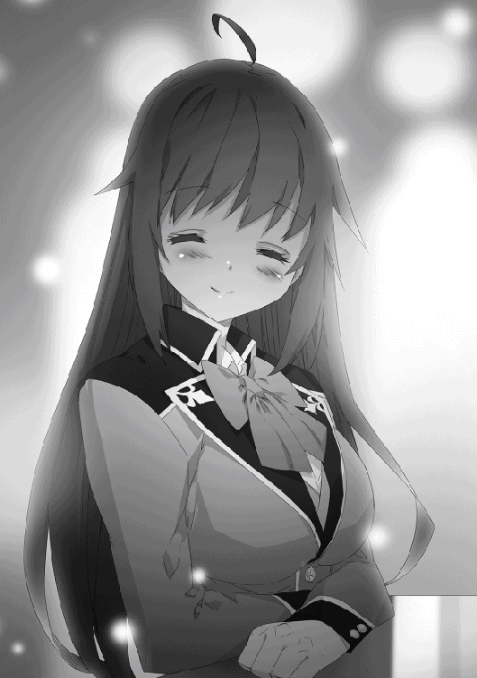
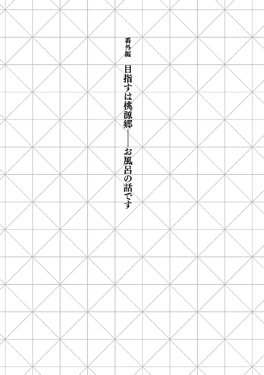
──その日、昼間は灼熱のごとくに蒸し暑く、夜は極寒のごとく冷え渡っていた。
実際のところ、昼間の暑さに比べて夜がかなり冷え込んだため、相対的に物凄く寒く感じられたのだ。
「あー、今日も一日ご苦労様ですよ、ええ」
俺は疲れた躯を引きずりながら寮の自室へと戻った。日中の暑さもさることながら、鍛錬に熱が入ってしまったのでとにかく汗が酷いことになっている。下着まで汗でぐっしょりと濡れており気持ち悪いことこのうえない。
しかも昼間に物凄く汗をかいた一方で夜の冷え込みだ。これは油断をしていると風邪を引く。
幸いにも、このジーニアス魔法学校は貴族のご子息が通うお金持ち学校。運営資金はたんまりあり、その一部は学生たちが寝泊まりしている寮部屋にも注がれている。
その贅沢な設備の一つが、寮部屋の全てに完備された温水シャワー。こいつがあれば、部屋でいつでも好きな時に暖かい湯を使って汗を流すことができる。
実はといえば、この瞬間は俺にとって毎日の楽しみだ。
汗をさっぱり洗い流した後の爽快感は格別。一日のすべきことを終えた達成感が味わえる。
そんなわけで──汗でぐちゃぐちゃになった服は脱ぎ捨てる！
真っ裸になった俺はシャワー室に飛び込み、備え付けてある蛇口を捻った。
──しゃわわわわわわわわ。
シャワーから降り注ぐ暖かい湯に身を晒し、一日の汗と疲れを洗い流そうとして。
──出てきたのは水だった。
「って、冷ってぇぇぇぇぇぇぇぇ!?」
俺は盛大に叫び声をあげてから、盛大にくしゃみをかましたのである。
ただでさえ気温が低いのに、水濡れ状態のままだと一気に体温が下がる。大慌てでシャワーを止めた俺は水に濡れた躯を拭き、大急ぎで厚めの服を着た。それでも、汗で体温が下がっていたところに水を頭から思いっきりかぶってしまったのだ。躯の芯から冷えている感覚がする。
部屋には冬場に使用する暖炉はあるが、あいにくと燃料である薪はない。こいつも冬場になってから随時補給される予定なので、燃やすものがなければ暖炉などただの置物に他ならない。金のある貴族は薪でなく魔法具を使用した暖炉を持ち込むそうだが、もちろん俺は持っていない。
寮の近くにある林に生えてる木の一本でもぶった切って薪代わりにするかとも考えたが、さすがに怒られそうなので却下。
「あぁ寒ぃ。アルフィに頼んで暖を取ろう」
こういった時、四属性を自在に操れるアルフィがいてくれて本当に助かる。あいつに火属性魔法を使ってもらい、凍えた躯を温めてもらおう。
そう思って部屋を出てアルフィの部屋へと向かったのだが、どうやら寮全体の雰囲気が妙なことになっていた。
すでに日も落ちており、外は暗くなっている。なのに寮の廊下にいる生徒の数が妙に多いのだ。普段なら、殆どの生徒は自室に戻り、思い思いの時間を過ごしているはずなのだが。
俺は付近で擦れ違った生徒に声をかけた。
「ちょっといいか。もう夜も遅いのに、なんだか妙に人が多くねぇか？」
「ああ、俺もそう思って他の奴に聞いてみた。そしたら──へっくし」
言葉の途中で、生徒がくしゃみ。寒気を抑えるように肩を抱いた。よくよく見ると、躯が小刻みに震えていた。
「おい、大丈夫か」
「悪い。実はさっきシャワーを浴びようとしたら、お湯じゃなくて冷え切った水が出てきたんだ。それで躯が冷えちまって」
彼も俺と全く同じ状況だったのだ。そして、寮の廊下を歩きまわっている他の生徒たちも似たり寄ったりなのだという。そして、俺が話しかけた彼が歩いているのはもちろん、知り合いの火属性魔法使いに会う為だった。
彼と別れてからとりあえずアルフィの部屋に向かう。
扉をノックしてから返事を待ち、部屋に入ればベッドに腰を下ろしたアルフィだ。肩にはタオルがかけられており、空中には火の玉が浮かんでいた。
俺は急いで中に入り込み、浮かんでいる火の玉に手をかざす。じんわりとした熱気が手を通して躯に伝わるようで、冷えた躯には心地がよかった。
「ふぅ......ほっとした」
「部屋に来るなりいきなりかよ。......見た感じ、俺のところと同じか？」
アルフィは自室のシャワー室を指差し、俺は首を縦に振る。俺と同じようにシャワー室で意図せず冷水を浴びた口だった。
「外もなんだか騒がしいし、もしかしたら」
「たぶん、寮全体のシャワーがぶっ壊れてる」
俺とアルフィの部屋だけ、というのならば奇跡的な偶然で済ませられるが、そうじゃないとすれば、だ。
「すると──地下の魔法具が原因か」
シャワーに使われているお湯は部屋ごとにではなく、寮の地下に備えられた大型の魔法具によって温められ、それが圧力を使って寮の各部屋に送られる形式だ。だから常にお湯は用意されており、いつでも熱々のシャワーを浴びることができる。
しかし、その大元であるお湯を沸かす魔法具が壊れてしまったのなら、寮全体のシャワーからは水しか出てこない。
「俺はお前がいたからいいけど、他の奴らは大変だろうな」
「火属性は四属性の中でも効果を持続させるのが難しいからな」
アルフィは何気なく火球を空中に止めてはいるが、これが結構難しい。
そもそも『火』というのは『物質』ではなく『現象』だ。地、水、風はそれぞれが物質として存在している。強いて言えば『風』も現象の一種だが、これは『空気』を操っているので火属性ほどの難しさはない。
だが火はいわば『熱量の増減』や『物質の燃焼』から生ずるもの。その為に一定の出力を維持するのが他の属性に比べて困難なのだ。逆に、一瞬に最大限の威力を発揮するのに特化した属性でもある。
「下手したら、暖を取ろうとした奴が火属性魔法の制御を誤って、暴発させるんじゃね？」
「怖いこと言うなよ......」
俺とアルフィが最悪の可能性に、体温とはまた違った意味で冷たい汗を流していると。
『──っ......、──っ......。あー、あー、マイクテスマイクテス。寮部屋にいるやつはこっちに注目しろ』
突然、外から雑音が聞こえてきたと思えば、次には毎日よく耳にしている声が響いてきた。窓越しにもはっきりと室内に届くようで、おそらくは寮全体に聞こえているかもしれない。
オレとアルフィは何事かと窓を開けて外の様子を伺った。
すると、外には光に照らされたゼストが立っていた。明かりは他の教師が照らしている火属性魔法。そしてゼストの手には『決闘』の際に実況で用いられる拡声器が握られていた。
『まずは最初に、室内で火属性魔法を使っている奴がいたら即刻中止しろ。暴発させられて寮が火事になったら冗談にならん。万が一そうなった場合、寮の修理費はそいつの実家持ちになるからな』
そんな前置きをしてから、ゼストは咳払いをして改めて話し始めた。
『えー、今現在、学生寮の部屋に備え付けられているシャワー室で、お湯じゃなくて冷水が出てくる異常が発生している。先ほど確認したところ、シャワー室に送られる地下の貯水層を温めていた魔法具がぶっ壊れてた。原因は経年劣化による寿命だと考えられている』
ちゃんと整備しとけよ。おかげでさっきまで凍える思いをしてたっつーの。
『ついでに言えば、女子寮の方も似たような状況だ。同時期に設置した魔法具だったから、寿命も一緒だったんだろう。まさか、本当に同じタイミングでぶっ壊れるとは思ってなかったわ。──なお、女子寮にも似たようにこうして女の教師が向かってるが、騒ぎがやばいことになってるらしい』
まるで笑い事のようにつぶやくゼストが、実際には冗談では済まされないだろう。
男子は余程に汗かくか不潔にならない限り、一日か二日くらいはタオルで汗を拭く程度で、シャワーを浴びなくても平気だからな。
ただ女子はほとんどがシャワーを浴びている。あのずぼらなミュリエルだってそうなのだ。そのくらい女性というのは清潔に気をつけている。男子寮は普段に比べて少し廊下を歩いている生徒が多いくらいだったが、おそらく女子寮は本当に大騒ぎになっているに違いない。
『残念ながら、魔法具の修理には今から手をつけても今晩一杯は掛かる見通しだ。......まったく、困っちまうぜ。冷水をかぶっちまった奴らが風邪を引いたら、それこそ学校側の責任問題に発展しかねない。これを好機とばかりに学校を攻め立てる親御さんがいるから、なるべく早急に対処したいんだが、どうもな』
後半のつぶやきは完全にゼスト自身の言葉だった。しかも、妙に哀愁が漂っていたな。
「困った親ってのは世界が変わっても存在するのか」
「も、モンスター......え、なにそれ？」
「気にするな。こっちの話だ」
アルフィは時々俺がまったく知らない言葉を口にする。
『そんなわけで、今回に限り特別措置を取ることとなった』
教師総出で火属性魔法でも使ってまとめて暖を取るつもりなのか。それだとシャワーが使えない女子達がただ単にブチ切れるだけだぞ。
『ま、実物を見てもらえば早いか。風邪引きたくないやつ、あるいは汗を流したいやつは着替えとタオルを持って校庭に来い。何があるかは来てからのお楽しみってやつだ』
そう言って、ゼストと他の教師達は去って行った。
「......どうする？」
「いやどうするも何も、行くしかねぇだろ」
アルフィのおかげで暖は取れ、躯は温まった。だが今度は汗っぽさがぶり返して来て非常に気持ち悪い。
俺は一旦、着替えとタオルを取りに自室に戻り、それからアルフィと共にグラウンドへと向かった。
グランドには急遽設置された篝火が焚かれており、非常に明るかった。
その明かりに照らされているのは、グラウンドの中央部に出現した巨大な建造物だ。
「......何これ」
「それをこれから説明するだろ」
俺の疑問をアルフィがさらりと受け流した。俺たちと同じで、多くの生徒が夜のグラウンドに集合していたが、気持ち的には俺と同じだろう。
『希望者はだいたい集まったか。じゃ、説明に移るぞ。今お前らの目の前にある建造物は、教師陣が総出で作った『大衆浴場』だ』
よく見ると、建造物の上部から白い煙のようなものが立ち上がっている。あれはお湯から出てくる湯気か。ゼストの言葉が本当なら、あの建造物の中には大量のお湯が用意されているわけか。
『当初は街の浴場を貸切にするかどうかって話が出たが、さすがに全生徒を収容するには小さすぎるし、一般利用者に迷惑がかかりすぎるから却下になった。じゃあどうするかって話になったら学校長が『魔法学校らしく、魔法で解決しましょう』って言い出したんで、こんなのを作らされた。......これで特別報酬が出なかったら、俺は確実にサボってたね』
最後の一言は余計だろ。あの教師、与えられた仕事は忠実にこなすが、それ以外は本当に適当だな。
......ん、待てよ？
大衆浴場──つまり、枠上の窪みに溜められた大量のお湯に、裸で入るというあれだ。
そう、裸なのである。汗をさっぱり流すから当然なわけで、でもそれはつまり。
『街の浴場よりは格段にでかいが、それでも一度に利用できる生徒の数には限度がある。だから何回かに分けて利用してもらうぞ。当たり前の話だが、中には仕切りがあって、男女別々に入浴してもらう』
つまり、年頃の女子生徒がこの建造物──大衆浴場の中で生まれたままの姿を晒すわけである。
「はぁ......なかなかに豪気だな。浴場の外枠は土属性。お湯は水属性と土属性。で、おそらく歓喜には風属性の魔法を使ってる。教師陣総出だな。さすがはジーニアス魔法学校だ。そう思わないか、リース......リース？」
アルフィが俺に何かを語りかけてくるが、俺の関心はすでに別のところに移っており全く耳に入ってこなかった。
『あ、あとアルフィ・ライトハートはいるか。いたならこの後に至急、俺のところに来るように』
──俺はこのゼストの言葉を聞き逃したことを、心底後悔するハメになった。
◆◆◆ ラトス ◆◆◆
リースが妙な使命感に燃える少し前のこと。
「はぁ......今日も疲れた」
その日、日が暮れる直前まで魔法の自主練に励んでいたラトスは、部屋に戻るなりベッドに倒れこんだ。ここ最近はそれまで以上に魔法の鍛錬に身が入っていた。
理由は間違いなく、リースとミュリエルの一戦だ。
リースがこれまで本領を出してこなかったことに一時の苛立ちは感じたものの、それ以上に彼の本領を出させることもできなかった己の未熟を恥じた。
そして、同世代である彼らがあのレベルにまで到達できたのならば、自分にも不可能ではない。劣等感がやる気に転じ、一層に魔法の鍛錬に力が入るようになった。
ただ今日はそれでも少し熱中しすぎた。ただでさえ昼間は暑かったため、かなりの汗をかいてしまった。
その上ラトスの場合、男子制服の中はふくよかすぎる胸をサラシで強く締め付けている。おかげで谷間に汗がたまって気持ち悪さが半端ではない。
ついでに言えば、昼間に比べて夜はだいぶ冷え込んでおり、服に染み付いた汗が冷えて気持ち悪さ倍増の上、かなり寒さを感じていた。
「......このまま眠ってしまいたいけど、汗を流してご飯食べないと」
男として振舞ってはいるが、ラトスは完全の女を捨てたわけではない。むしろ、体臭や清潔感にはかなり気を使っているほど。
ラトスは疲れる体をどうにか持ち上げると、来ていた服を脱ぎ捨てサラシを解く。清々しい胸部の（物理的な）躍動と開放感を味わいつつ、シャワー室に入った。
──二十秒ほど後。
「うっひゃぁぁぁぁぁぁぁっっっ!?」
案の定、冷水を頭から被ったラトスは慌ててシャワー室から飛び出した。その後大急ぎで身体中の水分を拭き取り、新しい服を身につけた。
しかし、例によってタダでさえ汗で冷えていた身体が冷水を浴びたことでさらに凍えてしまう。
「うぅぅぅ......水属性魔法使いが水をかぶって風邪をひくとか、本当に笑い話なんだけど......」
寒さに肩を震わせ、両肩を抱きしめながらラトスはボヤいた。
厚手の寝具を使うにはまだ季節が早すぎであり、かさばるのでその手のものは実家に置きっぱなしだ。必要に応じて送ってもらうつもりだったが、こうなると邪魔になってもいいから持参してくればよかったと後悔する。
さらに運が悪いことに、他の着替えが手元になかった。
ここ最近は何かと忙しく、洗濯を管理人に頼むのを怠っていたのだ。いい加減に着る服がなくなり、今朝方に管理人に服を預けたばかりで、返ってくるのは明日の朝。
残っているのは、今着ている寝巻き代わりの薄着と、先ほどまで纏っていた汗が染み込んだ制服だけ。
このままでは風邪を引くのは確実だ。
「どうしよう......」
若干出てきた鼻水に危機感を覚えていると、窓の外が騒がしくなる。
ラトスは己の躯が外から見えないよう、顔だけを覗かせて外の様子を伺う。するとそこには、火属性魔法の明かりに照らされたゼストの姿だ。
そこで語られたのは、男子寮女子寮ともにシャワーが故障しており、冷水しか出てこないこと。復旧には丸一日かかり、今日中での修理完了は望めないこと。そして、『緊急措置』とやらがグラウンドに用意されたこと。
説明を一通り終えた教師が去っていく。
もはや、選択肢はないに等しい。
ラトスは言われた通りにタオルと......汗を吸ったままの服に腕を通してグラウンドに向かったのだった。
◆◆◆ ラトス 終 ◆◆◆
幸いにも一番手の入浴権を得ることができた。
即席の大衆浴場は『即席』とは名ばかりで驚くほど本格的だった。まず、入り口が分かれており、それぞれが『男湯』『女湯』の文字が書かれた垂れ幕がぶら下がっていた。
一歩中に入れば脱衣所であり、それでもかなりの広さだ。全てが土で作られ見た目こそ地味ではあったが、脱いだ服を入れるカゴもそれらを収める棚もある。ついでに、壁の各部には光を放つ魔法具が取り付けられている。おかげで脱衣所の中は、寮の室内と全く変わらない明るさだ。
「......さすがはジーニアス。レベルが高いわ」
服を脱ぎ、さらに奥へと進めば待っていたのは広々とした『大浴場』。地面に作られた窪みにはもうもうと湯気を発する大量のお湯。そして、湯船のど真ん中には妙に雄々しい獅子の彫刻。お湯はその獅子の口から出ていた。
「いちいちスケールがデケェ」
お湯に手を突っ込むと、程よい温度。熱過ぎず温過ぎず、人にとって一番心地よいと思える暖かさであった。
天井は完全に解放されており、吹き曝し状態。どうやらこの浴場は大きな筒状の構造のようだ。脱衣場にあったものと同じ魔法具が壁に備え付けられているものの、数は少ない。それもおそらく、空に広がる星空を楽しませるためだ。
「ここの教師は無駄に凝り性だろ」
生徒が間に合わせで使うにしてはちょっと豪華すぎやしないだろうか。客を呼べるレベルだぞこの出来栄えは。
突っ込みどころは多かったが、とりあえず当初の目的に従い汗を流すことにした。
巨大な湯船から少し離れたところに小さな湯船がある。人が入れるほどの大きさではないが、こんこんとお湯が注がれている。
まずはここで体の汗や汚れをしっかり落としていく。森の川辺だったらともかく、湯船に入る前に体をきれいにしておくのは必要最低限のマナーだ。
頭と躯をしっかり洗ってから、いよいよ湯船に躯を沈めた。
「......ああ、これは堪らんわ」
ぶっちゃけ単なるお湯である。暖かいだけの水なのだ。なのに、入るだけで身も心も充実し癒されていくかのような満足感。
「ああぁぁぁ......」
疲れた躯にお湯の暖かさが染み込んでいくかのようだ。周囲を見れば、お湯に入った他の生徒たちも似たような反応だ。
貴族のお屋敷ともなれば、シャワーだけでなく風呂もあるのだろう。こうやって大量のお湯に身を浸すことも久々なのかもしれない。
俺はしばらく風呂を楽しんでいたのだが、ふと届いた黄色い声に耳を澄ませた。
目を向ければ、視界に飛び込むのは立ちはだかる高い壁。だが、『声』は間違いなくそちら側から聞こえてくる。
つまり──あの壁の向こう側は『女湯』なのだ。
今まさに、女子生徒たちが、俺たちと同じく一切の服を纏わずにお湯と戯れているのだ。
そう、俺たちと同じ裸で！
「............」
俺は無言で湯船から出ると『壁』に近づいた。
これは『男湯』と『女湯』を分ける仕切りだ。
軽く叩いてみるが、返ってくるのは硬質な感触。土属性魔法を使い、短時間で作ったにしては相当な強度を持っている。それもこれだけの規模となると、並大抵の実力では魔力が足りなくなるか制御が追いつかなくなるだろう。
ただ、音の響きからして厚みはそれほどなさそうだ。
これなら......イケる。
「手甲、極小投影」
俺は本来なら拳全体を覆うように展開する手甲を、人差し指の先端だけに投影した。
拳で壁をぶち破れば確実にバレる。だから、指先分の穴を壁に開けて、そこから覗き見するしかない。
俺は周囲を伺う。仕切りの壁は湯船から離れており、付近に誰もいない。それに、浴場に充満する湯気で遠くまで見通すことはできない。
今なら俺が少しくらい音を立てたところで誰も気にしないだろう。
「では......行きます！」
無駄に迸る情熱を胸の奥に押し込め、壁に向かって指での刺突を放った。
──ゴギンッ!!
「............────～～～～っっっ!?」
指先に返ってきたのは壁を貫通する感触ではなく、強烈な反動であった。突き指や骨折しこそしなかったが、あまりの痛みに俺は指を押さえて悶絶。悲鳴をあげれば注意を引くので耐えたが、代わりに目の端から涙が出てきた。
涙目で痛む手を振りながら、俺は壁を睨みつけた。
それから何度か手甲をまとった指を突き立ててみるものの、やはり凄まじい硬さしか感じられない。
「か、硬すぎるだろこれちょっと」
そろそろ指の感覚がやばくなってきた頃、ポロリと壁の表面が崩れ落ちた。
「って、これ中身が鉄壁じゃん!?」
男女の浴場を遮っていた壁の中身は『鉄壁』。その名の通り、鉄製の壁を出現させる魔法だ。
おそらく防御力は純粋な防壁と同レベル。指先だけに投影した極小の手甲では如何あっても貫通できない。
だが、土を魔力によって一時的に『鉄』に変異させるのは、土属性魔法の中でも最高峰難易度を誇る。それを、この浴場を真っ二つに仕切るほどの巨大な規模で投影するとなれば、もう考えるのも馬鹿らしいほどの困難さを極める。
まさか──俺のような輩が壁をぶち破るのを考慮し、鉄壁をあらかじめ用意していたのか。なんという驚くべき先見の明。
「マジかよ、手甲で殴っても破れねぇぞこれ」
加速を使っての一撃でも無理。超化を使い、極一点突破を叩き込めばおそらく突破できるが、そんなことしたら大騒ぎに発展するのは確実。下手すると退学にまで発展しかねない。
──退学の危険があるのなら女湯を覗くなどという行為をしなければ良い。そんな考えもわずかに浮かんだが、即座に否定した。
ご飯があれば食べる。
山があれば登る。
川があれば泳ぐ。
それと同じぐらいに、『女湯があれば覗く』というのは、男にとって至極当然の行為。少なくとも俺にとってはそうだ。
俺は一度湯船に戻り、お湯の温もりを全身に感じながら思考に耽った。
諦めるという選択肢は存在しない。あっても叩き潰す。
だからこそ、あえて落ち着かなければならない。
『仕切りに穴を開ける』という最短距離が無理なら、他の回り道を考えるまでだ。
だが、残り時間は今日限り。この後にも何回かに分けて入浴の人員が入れ替わることになっており、時間的には多少の余裕はあるが楽観視できるほど短くもない。
この千載一遇のチャンスをどうやってものにするか。
俺は星空が光る夜天を見上げながら、どうにかならないかを考える。
──星空？
「そうだ。別に穴を開ける必要はないんだ。直接見りゃいいじゃねぇか！」
俺は『穴を空ける』という行為に匹敵する、驚くべき最短距離に思い至った。
そう、この大浴場は吹き抜けだ。そして見た感じだと、男湯と女湯の構造に差異はない。つまり、女湯からも夜天の空を楽しむことができる。
だが忘れてはいけない。
深淵を覗くものはまた深淵に覗かれているということを。
夜天の空を眺めているということは、夜天の空も我らを眺めているということ。
つまり──吹き抜けになっている天井から直接覗けばいいのだ！
こうしちゃぁいられない。
俺は急いで脱衣所に向かい、タオルで躯を拭き服を着なおすと、急いで行動を開始した。
その最中にふと気がついた。
「あれ？ そういえばアルフィのやつ、風呂にいたか？」
普段なら湯船に浸かっている間にも何かと会話が弾んでいただろうに、思い返してみてもやつと話をした記憶がない。だからこそ、俺は色々と出来たわけなのだが。
「......ま、いいか。明日になれば嫌でも顔をあわせるんだ」
俺はアルフィのことを一旦無視した。
──再会の時は、目前に迫っているのをこの時俺は知らなかった。
ちょっとシリアスに表現したが、ほんの数十分後の話ですけどね。
こう見えても、俺は慎重派だ。勢いに任せては事を仕損じる。そして、俺が簡単に思いつくようなことを教師たちが事前に予想していないはずがなかった。
まず最初に直接跳躍で上空に跳び、防壁の足場から女湯を拝もうと試みる。
が、即座に断念した。
初めは気がつかなかったが、外から観察すると大浴場の上空には『結界』が張られている。範囲の中に誰かしらが侵入すれば即座にバレる仕組みだ。おそらく、空を飛べるような奴らへの対策だな。
さらによく見れば大浴場の外枠部分には、一定間隔で教師たち魔法陣を投影していた。大浴場の環境を整え、同時に浴場の上空に結界を展開しているのは彼らだと推測できる。
こいつを突破するのは無理だ。たとえ風属性魔法の中には己の姿を周囲と同化させる魔法も存在しているが、それを使ったところで確実に探知されるだろう。
まぁいい。俺もこんな単純な策が通用するとは思っていなかった。
大浴場の上空付近からが無理なら、別の場所から遠目で覗き込めばいい。むしろこっちが本命と言っても過言ではない。
狙い目は学校から離れた位置にそびえる山だ。
教師の大半は大浴場の維持、及び上空の監視に手一杯。逆にそれ以外に関しては非常に手薄だ。
だが女湯を覗けるほどに高い山はあれど、そこには深い林と険しい道が隔たっている。素人が入り込めばこんな夜中に入り込めば遭難するのは確実だ。
「まぁ、俺は素人じゃないんですけどね」
こちとら鍛錬の一環で、黄泉の森で活動してきたんだ。直接上空を魔法で移動すればバレるが、純粋な身体能力で木々の間を飛び移っていけば問題ない。
そして、監視結界の範囲外に出てしまえば、あとは跳躍で一気に目標の山頂へと跳べばいいのだ。
「待ってろ俺の桃源郷」
頭の中がピンク色に染まる中、俺はにやけそうになる顔を必死で堪えながら山の頂上付近に到着。
「ほい着地」
とりあえず、山の頂上の少し手前に降り立った俺は、遠くにあるグラウンドにある大浴場の位置を確認。
方角は間違いない。ただし、もうちょっと高めの位置に移動する必要がある。このまま山頂を目指せば問題ないだろう。
移動を再開しようとした俺だが、すぐ近くで俺以外の魔力が動くのを感じる。何事かとそちらに顔を向ければ──目前にまで『火の玉』が迫ってきていた。
「ぬぉぁぁぁっっ!?」
俺は悲鳴をあげながら防壁を展開。直撃こそ避けたが、火球が防壁にぶつかった衝撃に負けて派手に吹き飛んだ。
躯が宙に投げ出されるが、どうにか地面にぶつかる間際に受け身を取り、しばらく転がって体勢を立て直した。
「っぶねぇな、誰だよまったく!!」
床を転がった拍子に、躯の節々が小さく痛む。それに苛立ちを抱きながらも、俺は火球が飛んできた方向を睨みつけた。
「......お前ってやつは本当にこういう時は予想通りの行動をするよな」
暗がりの中で、こちらにゆっくりと近づいてきたその姿は──俺のよく知る姿であった。
「ってアルフィ!? おまっ、何でここにいるんだよ!!」
「お前が女湯を覗きに来るとしたら、この場所だろうと張ってたんだよ。まさか本当に来るとは──思ってたけど、この予想はマジで外れて欲しかった」
俺の驚愕とは真反対に、アルフィは心底呆れたような顔をしていた。
「え、なに。お前もおっぱい見に来たのか？」
「お前と一緒にするな阿呆！ ゼスト先生に頼まれてんだよ！」
「へ、何でここでゼストの名前が......」
そういえば、浴場の説明をしたあと、ゼストがアルフィを名指しで呼んでいたような記憶が──。
「万が一に女湯を覗き見するような馬鹿がいたら何としてもくいとめろって！ あの人、名前は出さなかったけど、確実にお前を指してたからな！」
「あのクソ教師ぃぃぃぃぃぃ!!」
頭を抱えて絶叫する俺に、ラトスも怒鳴ってきた
「こんなアホなことに駆り出されたこっちの身にもなってみろ！ 頭を抱えたいのはそんなアホを友人に持った俺だ！」
なんでよりにもよってアルフィを寄こしやがった！ この学校で一番俺の手の内を知ってるじゃねぇか！
息を荒げたアルフィは、少し呼吸を整えて言った。
「とりあえず、馬鹿な真似はよせ。下手すると退学になるぞ。いくら馬鹿で阿呆で常識知らずの助平な大馬鹿野郎でも、お前は俺の親友だ。そいつが覗きが原因で退学になったら寝覚めが悪すぎる」
「あの──ちょっと色々と酷すぎません？」
馬鹿って二回言いやがりましたよ、このイケメン。
それはともかく──状況は理解した。
つまり、目の前のイケメンがいる限り、俺は女湯を覗き見することはかなわないということだ。
ならば、すべきことは一つだ。
「行くぜアルフィ。俺はお前を倒してその先を行く」
「かっこいいセリフ吐いてもやろうとしてることは単なる覗き行為だからな！」
「うるせぇ！ 思春期男子のおっぱい願望舐めるなよ!!」
「思春期の男子が全員お前と一緒みたいに言うな！ 迷惑極まりねぇよ!!」
互いに構えを取ると、俺たちは同時に魔法陣の投影を開始した。
◆◆◆ ラトス ◆◆◆
教師に言葉に連れられてグラウンドにきてみれば、まさか大浴場が建設されていたとは思わなかった。
周囲が一斉に興奮で湧き上がる中、ラトスは一人頭を悩ませていた。
なにせ、今の自分は『男』として学校に通っている。だがそれは上っ面だけであり、身も心も女性。このまま男湯に入るわけにはいかなかった。
ラトスの躯は『男』と呼ぶにはあまりにも華奢すぎであり、そして極一部が──特に胸が──豊かすぎる。裸になれば一発で女だとバレるだろう。
かといって、普通に女湯に入るのもまた問題がある。今身につけているのは男子の制服であり、このまま女湯に入れば変態扱いされる。あわよくば問題なく女湯に潜り込めたとしても、自分が『ラトス』と他の女子にバレるわけにもいかなかった。
そこでラトスは、大衆浴場の利用が許可された終盤を狙って女湯に忍び込んだ。浴場の外で順番待ちしていた女子がいないことは確認済み。そして外で監視していた教師に対しては、普段は三つ編みにしている髪を解き、ぱっと見では女子生徒に見えるように誤魔化した。入る際に物凄く緊張したが、幸いにも咎められることもなく脱衣所にまで入ることができた。
あとは大急ぎで服を脱ぎサラシを解けば、どこをどう見ても女性にしか見えない。念のため男子制服は脱衣所の隅っこに丸めて隠しておく。
奥へと進み、浴場の規模に驚かされたが、肌が外気に触れたことで躯の芯が冷えてきたことを思い出す。
ラトスは急いで躯の汚れを落とし汗を流すと、湯船に身を浸した。
「あぁぁぁぁ......幸せ」
こうしてゆったりと湯船に入るのはいつぶりだろうか。それまで冷え切っていた躯が熱い湯に包まれ、その蕩けるような心地よさにラトスは思わず感嘆の呟きを零していた。
さらに言えば、普段は重くて仕方がない豊かな胸も、お湯にプカプカ浮いており、肩への負荷が減って非常に楽だった。もしこの場に彼女以外の女子がいれば、嫉妬で血涙を流さんばかりの光景。本人にしてみれば邪魔以外の何物でもなく、あげられるものなら誰かにあげたいとさえ思っている。『持つ者』だけが許される贅沢な悩みだ。
もっとも、他の女子がいない時間を見計らって入ったのであり、他に浴場に人影はない。それに、普段は三つ編みにしている髪を解き、加えて『ラトスは男』という先入観があれば、今の彼女を見ても即座にその正体に行き着くことはないだろう。
そうして、思う存分に湯船を堪能していたラトスだったが、ふと視界の端に妙なものを捉えた。
学校から遠く離れたとある山の頂上付近。そこで時折閃光のようなものが煌めいていた。錯覚ではなく、目を凝らせば間違いなく光の明滅が確認できた。
何事かとさらに注意を向けようとしたところで──緊急事態が勃発した。
「ほら、ミュリエルさん。行きますよ」
「うぅぅ......眠い。もう明日シャワー浴びればいいじゃん」
「ダメです。折角、先生方のご厚意で作られたものなのですから。この機会に堪能しなければ損です。それに、湯船にしっかり浸かれば疲れも取れますよ」
ラトスの背筋がビクリと震えた。
恐る恐る声がした方向を向けば──そこには見知った女子生徒の裸体が浴場に入ってくる場面であった。
ミュリエルは眠たげな目をこすり、カディナがその手を引っ張って連れてきた、という風だ。
（アルファイアとウッドロウ!? なんでこんな時に限って──って彼女たち凄いな!!）
ラトスは色々な意味で絶句してしまった。
折角わざわざ人気がなくなった時間帯を見計らったのに、よりにもよってこの学校で一番知った顔と鉢合わせてしまったこと。
そして、彼女たちの実りに実ったふくよかな胸に言葉を失う。
（アルファイアはどうやってあの体型を保ってるんだ？ 腰とか細いのに胸が凄い。ミュリエルは──背が低いせいか、すごく犯罪臭がする）
カディナはまさにモデル体型。引っ込んでるところはキュッと引き締まっているのに、出ているところはこれでもかと突き出ている。ミュリエルは同世代の女子に比べて背丈は低いが、それでいて胸の実り具合が凄まじい。大きさはカディナと大差ないかもしれないが、バランス的に言えば随一かもしれない。
もっとも、ラトスはこの場にいる三人の中では一番女性的な躯つきをしており、その上で暴力的な胸をしているので、彼女の意見は完全に自身を棚上げにしたものだった。
カディナが浅い湯の側にミュリエルを座らせると、置かれていた桶で湯を掛けて躯を洗う。なされるがままのミュリエルは、まるで飼い主に世話されている子犬のようだ。そして、ミュリエルを一通り洗い終えたあとはカディナも自身の躯と髪を洗う。
二人して綺麗になったところで、いよいよ湯船に浸かった。
「実家のお風呂もいいですけど、こうして星空が見える湯船に浸かるというのも堪りませんね」
「おっぱいが浮いて楽」
「風情が台無しです......いえ、間違いではないでしょうけど。ええ、確かに」
二人並んでお湯に浸かると、合計四つのたわわがプカリプカリと浮いている。
ミュリエルを連れてくるのに時間がかかったために、入浴がこの時間になってしまったが、それはむしろ正解だったかもしれない。この二人がもっと多くの生徒が利用している時間帯に入れば、彼女たちのあまりの豊かさに嫉妬の嵐が吹き荒れ、暴動が起こっていたかもしれない。
（でもやっぱり、二人とも綺麗だよなぁ）
着飾ってないありのままの姿を見れば、ラトスの目から見てカディナとミュリエルは美しかった。むしろ、女として生まれ、男として過ごしてきたラトスだからこそ、男と女の両視点から二人の美しさを理解できた。
あれほどの者は、ジーニアス魔法学校に何人いるだろうか。少なくとも一学年の中では、実力的にも美的にも最上位だろう。
（......やっぱり、ローヴィスも彼女たちみたいな女性がいいのかな）
自然と頭の中に思い浮かんだのは、リースの顔だ。
名実ともに、ジーニアス一学年の中で最強の男。
そして学年最上位に位置するカディナとミュリエル。
彼らが並んで立つ姿を想像して、チクリと胸の奥が痛んだ。
ラトスにとって、リースやカディナたちは友人だ。それは間違いない。
けど、今現在のラトスは彼らの背中を追っているだけ。ノーブルクラスにすら届いていない自分が彼らと一緒にいていいのだろうか。
──リースと一緒にいる権利はあるのだろうか。
「──ってあれ？ 私たち以外にも誰かいるよ？」
「あら、こんな時間にですか？」
二人が入ってきてから湯船の端っこに移動していたラトスだったが、バレてしまったようだ。
思考が別の方向に偏っていた為に、自らが置かれている状況をすっかり忘れていたラトス。それを思い出すと大いに慌てた。
（......うぅ、頼むからこっちに来ないでくれ）
カディナたちから視線を外し、全力で『来ないで』オーラを発するラトス。普段から顔を合わせているこの二人には何かの拍子で自分の正体がバレかねない。祈るように視線をそらす。
幸いにもカディナは女子が一人になりたいという空気を察し、それ以上は近づこうとは思っていなかった。
運が悪かったのは、今回の相方がまるで空気を読めない超絶マイペース娘だったことだろう。
「おお......おっぱい大きい」
「へ？ ......うわぁぁぁぁっっっ!?」
目を逸らしていた為に反応が遅れた。声に気がつき振り向けば、すぐ側にまでミュリエルが近づいており、ラトスの湯に浮かぶ胸を見て感心していた。
大慌てで己の胸を両手で隠し、ミュリエルから離れるラトス。その顔は周知で真っ赤になっていた。
「ミュリエルさん、あまり人の特徴を口にするのは良くありませんよ。......いえ、確かに大きいですね」
「君たちも人のこと言えないんじゃないかなぁ!!」
巨大弩。
破城槌。
大鉄球。
ここに、リースのいう『学年三大おっぱい』が集結した瞬間であった。
ミュリエルを連れ戻そうとカディナも近づいてきたが、女子の顔を見てふと首を傾げた。
「あら、あなた。もしかしてどこかで会いました？」
「ひ、人違いじゃぁないかなぁ」
自分でも空々しいなと思いつつも、そう口にするしかないラトス。汗を流しに来たのに、先ほどから冷たい汗が背筋をダラダラと流れているような気分だ。
「......リースの知り合いの青髪でこんなにおっぱい大きい子はいない」
フニフニ。
「って、人の胸をさりげなく揉むのやめてくれないかな!?」
「ふむ......素晴らしい感触」
「自分の胸でも揉んでろ！」
ラトスの背後から彼女の胸を揉みしだくミュリエル。咄嗟にラトスは振り返りミュリエルの頭を掴むと、一気に湯船の中に突っ込んだ。
「ぶくぶくぶくぶく......」
「まったくもう」
「......やっぱり私たち。どこかで会ってませんか。その迷いないツッコミの仕方にはそこはかとなく覚えが」
「気のせいですから!!」
女、三人寄れば姦しいとはよく言うが、まさにこの事であろう。
結局、三人揃って大いに騒いだ後、ラトスは一人で浴場から飛び出し、大急ぎで服を着ると寮へと戻ったのだった。
......ちなみに、ラトスが男子制服のまま浴場に入れたのは、その時の監視役が学校長だったからである。ラトスのことを案じ、彼女が来そうな時間帯に監視役をかって出ていたのだ。
──そして、リースの方はといえば。
◆◆◆ ラトス 終 ◆◆◆
戦闘の余波で山頂付近にはクレーターやら何やらの破壊跡が穿たれており、何も知らない者が後日に見れば局所的災害が起こったと勘違いするだろう。
「しつっけぇぞアルフィ！」
「だったらいい加減諦めろボケが！」
俺は苛立ちを交えて重魔力砲を放つも、アルフィが放った風属性の魔法に衝突して破裂。衝撃が解き放たれるが当のアルフィには届かなかった。
「だぁくっそぉ！ こういう時は本当にやりにくいな幼馴染みって！」
やることなすこと全部対策が立てられており、まともな一撃が通らない。それは超化を使っていても変わらない。
「それはこっちの台詞だ畜生。お前の相手はマジで疲れる」
アルフィは己の周囲に四属性を浮かべながら肩で息をしていた。あちらが俺の手の内を全て知っているのと同じで、俺だってアルフィの手札は把握している。
これまでアルフィとは何度も闘っており、全体的な勝率は俺の方が上なのは間違いない。それにしたって楽勝だったことはほとんどなく、どれもがどうにか勝てたというのが大半だった。
しかし、今回ばかりは断然にアルフィの方が有利だった。なにせ、この闘いには時間制限がある。
すなわち、女子の入浴時間が完全に終わるまで粘れば、アルフィの勝利なのだから。
俺とアルフィの戦闘が始まってしばらくが経過している。正確な所は不明だが、これ以上に手間をかけていれば桃源郷な時間が終わってしまう。
──俺はいい加減に腹を括った。
何のリスクも負わずに夢の世界を見ようとしていたのがそもそもの間違いだったのだ。
大きい事を成すには、それ相応の代償が必要だ。
「アルフィ。俺は覚悟を決めたぞ」
「......おいやめろ。お前、何するつもりだ」
俺の覚悟が声から伝わったのか、アルフィの顔が引きつった。
俺はクルリと背を向けた。ちょうど大浴場のある方角だが、現在地の高さからでは壁の内側を拝むには至らない。だからこそアルフィはここから先、山頂へ道を阻んでいたわけだが。
「......ちょっと待て。お前覚悟ってまさか──『退学』する覚悟って言うつもりか!?」
「ご名答!!」
もうおっぱい見れたらそれでいいや！
後のことなぞ知ったことか！
俺は......桃源郷を拝むぞ！ アルフィ！
「やめろ馬鹿ぁぁぁぁぁっっっ!!」
「遅ぇ！ 飛天加速・最大出力!!」
剛腕手甲の魔力も全て銀輝翼に回し、俺はその場から魔力解放の衝撃を受けて一気に飛び立った。
アルフィの叫び声を背中に受けながら、後の事を完全に度外視した超加速で大浴場の上空へと向かう。
こんな事をすれば、確実に浴場周りに張り巡らされた監視結界に捕捉されるだろう。加えて、こんな芸当ができるのは学内を含めて何人いるか。
現行犯で逮捕されなくとも、間違いなく遠くないうちに俺が覗きの犯人であるのはバレる。
「それがどうした！」
おっぱいを拝むためなら、退学など惜しくない！
全ては、この一瞬のために！
「おぉぉぉぉらぁぁぁぁぁぁっっっ！」
最後の銀輝翼を砕き、最大加速で中を突っ切る。女湯の上空を通過するのは一秒にも満たないだろう。それでも、その一秒を俺の心に刻みつける！
そして、俺の視界がついに女湯を捉えて──。
──突如として頭上から降り注いだ閃光によって叩き落とされた。
一瞬、完全に意識が途切れた。何が起こったのか、まるで理解できなかった。
だが、次に目が醒めると、途端に息苦しさを感じる。しばらくもがき苦しんだ後、俺はようやく自分が『水の中』にいるのだと気がつく。
幸いにも底は浅く、手をついて慌てて水面から顔を出した。
「ぶっはっ!? はぁ......はぁ......え、浴場？」
息も絶え絶えに辺りを見渡せば、俺が少し前に堪能した大浴場の中。俺が今しがた沈んでいたのは湯船だった。だが、記憶の中にあるものとは少し違った。
「ここはもしや......女湯の方か！」
どうやら俺は幸運にも女湯に墜落したらしい。あ、いや。墜落した時点で幸運かどうかは疑問だが。
しかし、それはさておき、俺の最大の関心は別にあった。
「おっぱいはどこだ!!」
俺はそのために退学覚悟でここまで来たのだ。ここで乳の一つ──いや、二つでも拝まねぇと気がすまねぇ！
「おっぱいは......残念ながら無いのぅ。つか何をやっとるんじゃお主。反射的に叩き落としちまったじゃろぉが。ま、お主でなければ今ので死んどったか」
「は？」
物凄く聞き覚えのある声に、俺は硬直してしまった。
そして、ギリギリと音がしそうなほどにゆっくりとそちらの方に顔を向ければ。
「まぁ、儂の乳で我慢しておけ。ちょっと薄いがの」
「ババァァァァァァァッッッッ!! なんっっっでここにいるんだぁぁぁぁぁぁっっ!?」
俺の師匠であり幼女体型年増の大賢者が、素っ裸で湯船に浸かっていた。
見事なまでにツルペッターンである。ちょっと薄いどころではないし、小さな頃は一緒に風呂に入ったことも何度かあるので見慣れたものだ。
それよりもなんでここにいるんだよマジで。
「なーんか学校の方で面白い事をやっているのを見てな。大浴場なぞ作ってたから、ディアスのやつに頼んで入れてもらったのじゃ。あ、言っておくがこの時間は儂の貸切にしてもらっとる。他の生徒は全員入り終わっとるようじゃ」
「じゃぁ俺のおっぱいは！ 桃源郷は!?」
「だから無いと言うとろうに......」
「ちっくしょぉぉぉぉぉぉぉぉぉぉぉっっっ！！！！」
「それよりもほれ、せっかくじゃから背中でも流してくれ。久々にお主と一緒に入るのじゃしな」
「もういくらでも流してやるよクソがっ！」
さめざめと泣く俺はその後、大賢者と一緒に二度目の入浴をすることとなった。
──その後のお話だが。
俺の覗き行為は大賢者の貸切時間に行われたので、采配は学校長ではなく大賢者に一任された。
その結果として俺は厳重注意だけでお咎めは無し。覗かれた婆さん的には『久々に弟子と風呂に入れて満足じゃ』とそれだけであり、学校長も渋々とそれを受け入れた。学校長としても、学年主席者を『覗きの容疑で処罰』というのはあまりにも体裁が悪すぎたからだ。
ただし、後日にアルフィには口止めとして飯を奢らされた。
「カディナたちには伝えてないんだから、感謝しろよ」
「へいへい。......あ、確認しておくけどラトスにも教えてないよな？」
「誰にも伝えてないけど、なんでラトス？」
「あ、いや。......今日は存分に食ってくれ！」
「こんな清々しいまでのワザとらしい話のずらし方、初めて見たよ」
ジト目を向けてくるアルフィに、俺は笑って誤魔化すのであった。
あとがき
どうもこんにちわ。ナカノムラアヤスケでございます。
この度は『大賢者の愛弟子〜防御魔法のススメ〜』第二巻を手に取っていただきありがとうございました。
今回は新しいヒロインの登場と、リースが本気を出すお話でした。いかかだったでしょうか。
前回のあとがきにも書きましたが、基本的にナカノムラって『平凡な能力を極めて最強になる』なお話が好きです。そして、この巻のラストでリースが使用したのはそんな彼が行き着いた到達点の一つです。
己の欠点すら長所に転じ、持ちうる全てを総動員してそれらを昇華させた努力の結晶体。これはこれで一つの熱血王道物語だと私は思っています。
それと、新しく登場したヒロインであるミュリエル。
不思議ちゃん系な彼女は、珍しくリースでさえツッコミに回るほどの天然ボケをかましてくれます。リースとミュリエルの掛け合いは書いててすごく楽しかった記憶があります。
そしてただの天然系ではなく、その内面には色々とすごいものを秘めています。そしておっぱいも凄いです。大鉄球ですからね。ええ。
ミュリエルのヒロイン参戦により、ラトスやカディナにも変化が訪れます。ようやく学園ラブコメっぽい雰囲気が出てきたようにも感じられます。
では、この本を出すに至り携わってくれた全ての方、そして当作品を読んでくださった読者の皆様への感謝を抱きつつ、今回はこれで筆を置かせていただきます。
ナカノムラアヤスケ
著者プロフィール
ナカノムラ アヤスケ
Nakanomura Ayasuke
豊かな胸の女の子を書くために作家になったと言っても間違いではない。というか、ヒロインはおっぱいが大きくないと許せない勢。そんな、巨乳と熱いバトルをこよなく愛するラノベ作家。
植田 亮
Ueda Ryo
イラストレーター。近作は「処刑タロット」（電撃文庫）。
大賢者の愛弟子〜防御魔法のススメ〜２
2018年10月１日発行 ver.1.0
著 者 ナカノムラアヤスケ
発行所 TOブックス
〒150-0045 東京都渋谷区神泉町18-８
松濤ハイツ２Ｆ
03-6452-5766（編集）
0120-933-772（営業フリーダイヤル）
Ⓒ2018 Ayasuke Nakanomura
※無断で複製・複写・データ配信などをすることは、かたくお断りいたします。
本電子書籍は下記にもとづいて制作しました。
大賢者の愛弟子〜防御魔法のススメ〜２
発行日 2018年10月１日 第１刷発行
本作品の全部または一部を無断で複製、転載、配信、送信したり、ホームぺージ上に転載することを禁止します。また、本作品の内容を無断で改変、改ざん等を行うことも禁止します。
本作品購入時にご承諾いただいた規約により、有償・無償にかかわらず本作品を第三者に譲渡することはできません。
本作品を示すサムネイルなどのイメージ画像は、再ダウンロード時に予告なく変更される場合があります。
本作品は縦書きでレイアウトされています。
また、ご覧になるリーディングシステムにより、表示の差が認められることがあります。